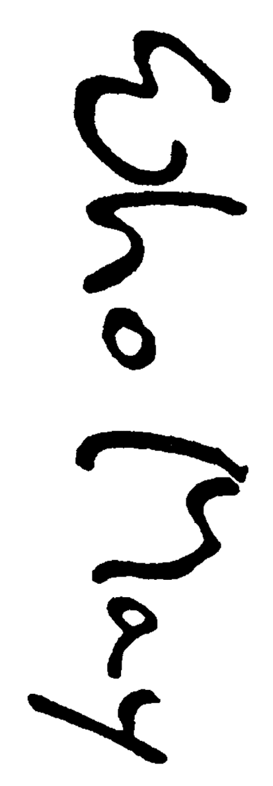

| 幻詩狩り (創元SF文庫) | |
| 川又 千秋 | |
| 東京創元社 (2007) | |
この本は縦書きでレイアウトされています。
また、ご覧になる環境により、表示の差が認められることがあります。
本作品を電子書籍版に収録するにあたり、一部の漢字が簡略体で表記されている場合があります。
幻詩狩り
川又千秋
１９４８年。戦後のパリでシュルレアリスムの巨星アンドレ・ブルトンが再会を約した、名もない若き天才詩人。彼の創りだす詩は麻薬にも似て、人間を異界に導く途方もない力をそなえていた。この世には、けして読んではならない詩が存在するのだ......。時を経て、その詩が昭和末期の日本で翻訳出版された。そして、それを読む者たちは、ひとりまたひとりと詩に冒されていく。言葉のもつ魔力を描いて読者を翻弄する、川又千秋ならではの言語ＳＦの粋。日本ＳＦ大賞受賞作。
東京創元社
川又千秋
L'OR DU TEMPS
by
Chiaki Kawamata
1984
幻詩狩り
序章 狩人
１
女が――マンションから出てきた。
坂元は火をつけずにくわえていた煙草を地面に投げ捨て、靴の先で踏みにじった。
それが、合図だった。
何食わぬ顔の取締官三人が、彼女と入れ違いにマンションへ入った。
それを見届け、坂元はゆっくりと女を尾けて歩きだした。
もう一人、原田という名の若い取締官が、坂元を追い越して女の五メートルほど後についた。
原田の役割は、女の注意をそらすことにある。
女が意識しようがしまいが、お構いなしで、彼は女から離れない。そして、いよいよ女が明らかに警戒をはじめたら、彼はさっとどこかへ消える。
つまり原田という存在によって、本物の尾行者たる坂元をカモフラージュしようというのである。
一種の陽動作戦と言えた。
そのために原田は目立つ格好をしていた。
レザーのジャンパーにレザーのパンツ、そしてブーツ。グリースでぴんと逆立てた髪の毛の一部をスプレーで着色している。
まさしく、チンピラの風体だ。
原田には、また、それがよく似合った。
本人も得意気に肩を揺すり、すっかりその役柄になり切っている。
坂元は腹の中で苦笑した。
しかし、余りやり過ぎると、女を本気で不安がらせてしまう。
女は表通りに出た。
そして信号待ちの間に、ちらりと一度原田を盗み見た。
が、ことさらに気にする様子はない。
信号が青に変わった。
女は向かい側へ渡り、ちょっと考える風に立ち止まりかけてから、右へ進んだ。
その先にバス停がある。
もし女がタクシーをひろうようなら、原田の役目はおしまいだ。待機している白ナンバーが坂元だけをひろって追跡を続ける手はずになっている。
しかし、どうやら、女はバスを使うつもりらしい。
腕時計に目をやりながら、バス待ちの列に並んだ。
彼女の前には三人いた。彼女の後に原田がつながる。
坂元はいったんその列の横を通り過ぎ、近くで女の顔を再確認した。
間違いない。
女は三浦左知子だった。
濃い化粧で顔色を隠している。しかし、きつく引いたアイラインも、瞳の奥の空ろさをごまかし切れてはいない。
坂元はバス停のすぐ前にあるタバコ屋でセブンスターを買った。
そして封を破りながら引き返し、原田の後に並んだ。
「あーあ、ちっ......」
原田が意味のないつぶやきを洩らし、わざと身体を動かして、ひじを女の背中にぶつけた。
しかし女は、相手にしない。
振り向きもせず、半歩前へ出て、またじっとたたずむ。
坂元は、そんな原田の背後に身を潜め、女の様子をうかがった。
やがて、バスが来た。都営の渋谷行きである。
まだ陽が高い。やっと午後四時を回ったばかりだ。
坂元をいれて六人の乗客は、ぞろぞろと乗り込んだ。
車内は比較的空いていた。シートがいくつも残っていた。
三浦左知子は、バス中央部の降車扉に近い席に座った。
原田が、その斜め前のシルバーシートにどさりとばかり身体をあずけ、陣取った。そして足を横へ投げだす。
乗客の非難の視線が彼に集中した。
その間に、坂元は、一番後のベンチ型シートの隅にひっそりと腰を下ろした。
バスは走り出した。
振り向いてリヤ・ウインドウから道路を見下ろすと、薄汚れた白いカローラがバスの後をのろのろとついてくる。
運転席にいるのはバックアップ要員だ。
女が坂元を意識しだしたら、すぐ彼と交代する。
しかしどうやら、今の所、その心配はまるでなさそうだった。
女は心ここにあらずといった感じで、ぼんやり窓外を眺めている。その様子は、明らかに〝患者〟だ。しかも、中期を過ぎた患者と思われた。だとすれば、覚醒時間の三〇パーセント近くを遊魂状態で過ごしていることになる。現実感覚は極めて稀薄なはずだ。
が、かと言って油断はできない。
患者には、特有の鋭い直感力が備わっている場合があるからだ。
坂元はひたすら気配を消し、女に向かいがちな注意力をあたりに散らした。
渋谷のバス・ターミナルまで、五つほどの区間だ。駅へ近付くにつれ、渋滞が激しくなってきた。
その時――
三浦左知子が、ふらりとシートから立ち上がった。そして立ち上がりざま、降車ブザーを押した。
シルバーシートの原田が、ぎょろ目を剥いて彼女を振り返る。
ターミナルひとつ手前のバス停が迫っていた。
都バスは車体を軋らせながら車線の左側へ寄り、そこで停車した。降車扉が開いた。
彼女の後に原田が続く。
その背中に隠れるように、坂元もバスから降りた。
「ねえ、ねえってば」
原田が踊るような足取りで、彼女の前へ出た。
「お茶なんかつきあってくれたりする？」
が、彼女は応じない。
原田を押しのけるようにして、青に変わったスクランブル交差点を渡っていく。
「ちっ、やだなあ。気取んなよなァ」
原田はむくれた表情を見せた。
が、すぐキザったらしく肩をすくめ、彼女から離れて人混みの向こうへと足早に去っていった。
三浦左知子は、交差点を渡り切った所でちょっと立ち止まった。
そして、真っ直ぐに駅の方へ歩いてゆく原田の後ろ姿を見送った。
数秒――
彼女は大きく溜め息を吐いたらしく、肩を落とした。
それから、また、歩きはじめた。
坂元は追った。
退社の時間帯までには、まだ間があった。
通行人は、学生や主婦が多かった。
雑踏とまではいかない適度の人混みが、尾行を容易なものにしていた。
三浦左知子は、渋谷駅前を左に折れ、宮益坂方面へ向かう。かなりの急ぎ足だ。
長目のコートをはおり、ショルダー・バッグを下げている。
服装は全体に地味だ。が、なかなかのスタイルと美貌で、二十代の前半に見える。
しかし――
坂元たちが調べた彼女の実際の年齢は、四十二歳。見かけとの間に、およそ二十歳近い隔たりができてしまっている。
その〝症状〟も、患者特有のものだ。遊魂状態がもたらす効果のひとつと言われている。しかし、その詳しい因果関係は、まるで解明が進んでいない。解明するわけにいかないのだ。それが最大の問題だった。解明するより先に撲滅せねばならなかった。
中期にさしかかり、みるみる肉体的に若返っていく患者がいる一方、無惨なほどに老化が進行してしまう例もある。
とにかく――その、もたらされる効果には、個人差がありすぎた。個々人の資質によって、すべてが支配されてしまうのだ。しかし、そんな患者たちも、最終的に行きつく先は同じだった。研究者たちは、その最後の段階を〝解脱〟と呼んでいた。
が、どう呼ぼうとそれは結局、人ひとりが廃人になることをのみ意味していた。そして――死ぬのだ。
宮益坂を中ほどまで上がったところで、三浦左知子は、吸い寄せられるように一軒の喫茶店へ入っていった。
間口の狭い小さな喫茶店だった。
どうやら、そこが待ち合わせの場所らしい。
「じゃあ、五時にあそこで」と、彼女は電話で指定した。そのことを、坂元たちは盗聴によって知り得ていた。
その五時までには、まだ十分ほどあった。
坂元は歩く速度を緩め、振り返った。
白いカローラが、ウィンカーを出して路肩へ滑り込んでくるのが見えた。運転席の取締官にそれとなく合図を送ってから、坂元は大きく一度息を吸った。
なんとかここまでは、静かに追いつめた。
が、問題はここから先だ。どう始末をつけるかは、坂元の判断ひとつにかかっている。
坂元はゆっくりと歩き続けた。
そして、喫茶店の窓越しに、横目で三浦左知子の姿を探した。
彼女は一人で席に着いていた。
ちょうど水とおしぼりが運ばれてきたところで、彼女は顔を上げ、ウェートレスに何かをオーダーしている。
店は空いていた。
水商売風の若い男二人がテレビ・ゲームのテーブルにかじりついているが、他に客はいない。彼等が、三浦左知子の待ち人とは思えなかった。
坂元は、そのまま店の前を行き過ぎた。
すぐ先のビルの入口に、公衆電話が見つかった。
ともかく、状況を知る必要があった。
坂元は排気ガスですすけたその電話の受話器をはずし、スロットに十円玉二個を落とし込んだ。そして、ダイヤルを回した。
ナンバーは、三浦左知子の部屋へ通じている。
呼び出し音が二回続いた。
そして、つながった。
「どうだ？」
坂元は訊いた。
２
「何も出ません。きれい、さっぱりってやつです」
電話の向こうで、彼女と入れ違いに踏み込んだ取締官の一人が答えた。
「何も？」
「どうやら、捜査が近いことを予想してたみたいですね。何から何まで整理しちまって、部屋の中にはゴミひとつ落ちちゃいません」
「............」
「ただ、その、部屋の中じゃなく、ゴミ置き場の方で、ちょっと面白いものを見つけましてね」
「なんだ？」
「プリントゴッコっていうんですか？ あの、葉書なんかを自分で印刷するオモチャみたいな謄写版があるでしょう」
「ああ」
「それが、不燃ゴミなもんで、回収に洩れてゴミ置き場に残っていたんです」
「彼女のものか？」
「今、調べに回らせてます。しかし、間違いないみたいです。おとついの夕方、三浦が、かなりの量のゴミを、ゴミ置き場へ運んでるのを管理人が目撃してましてね。ほとんどが紙クズみたいなものだったらしいんですが、その、彼女がゴミを積み上げたのと同じ場所に、謄写版が残ってたと言うんです。多分、いっしょに持っていってくれると思ったんでしょうが、そのへん、業者もイジワルですからね」
「紙クズの方はどうなった？」
「一般ゴミの収集車が、昨日の朝回ってきたそうです。ええ、もう都の清掃局には連絡しました。我々の部から何人か、埋め立て地へ急行しているはずです」
「よし。で、その謄写版に、原紙のようなものはついてないのか？」
「残念ながら。ですが、紙をのせる台の方に、恐らく作業中に付着したんでしょうが、文章の断片らしいインク文字が、重なり合って残ってましてね。細かな文字で、ぎっしりと書かれていたみたいで......もちろん、我々が読むわけにはいかないので、このまま保存して鑑定課へ回します」
「そうしてくれ」
坂元は電話を切った。
十円玉が一個、返却口に落ちてきた。
それをつまみだし、ズボンのポケットにもどしながら、坂元はゆっくりと、暮れかかる街を見渡した。
ブツは出なかった。
が、ともかく、狙いは狂っていなかったらしい。
ただ、タイミングを失しただけだ。
しかし、そうとばかりは言い切れない。
危険を察知した彼女は、いち早くブツを自宅から運び出した。そして、どこかに隠したのだろう。
謄写版を使ったとなれば、相当量を作製したことが考えられる。
それらをすべて、ゴミとして処分したとは思えない。そんなことをすれば、かえって危険だ。
コピー機械の使用規制、及びコピー用紙の総ナンバリングが実施されて以来、手書きと、それに昔懐かしいガリ版印刷が、ブツの複製手段の主役となりはじめていた。
その結果、闇から闇へ取り引きされるそれら複製品の数は、かつてのコピー時代の、およそ十分の一以下に減少していた。
つまり、それだけ金になるのである。
ブツの複製は言うまでもなく重罪である。しかも、表向きに定められている刑罰以上に、坂元たち取締官、即ち特別司法警察職員に与えられている裏の権限は、全く容赦を知らぬものだった。
が、逆に、それだけの危険をすでに冒したからには、彼女がむざむざとそれらを放棄してしまうはずがない。
ことに、買い手がついた今となっては、である。
必ず、隠している。
そして、その受け渡しが、今日、これから行われる。
坂元は確信していた。
だからこそ、三浦左知子は、室内をきれいさっぱり整理したのだ。あるいは、このままどこかへ高飛びするつもりかもしれない。
どうであれ、逃がしはしない。
坂元は、ポケットから抜いた右の掌で、コートの左腋の下のあたりを、上から軽く押さえた。固い感触を確かめてから、歩き出す。
バックアップ要員の乗ったカローラは、番犬さながらに、道端にうずくまっている。
彼女の後から、その喫茶店のドアを押した者はいない。出て来た者もいない。
坂元は上着のボタンを慎重に掛け直してから、そのドアに手を掛けた。
「いらっしゃいませえ」
不機嫌そうなウェートレスの声に迎えられ、坂元は店内に入った。
三浦左知子が、はっと顔を上げた。
そして慌てて目をそらした。
坂元は構わず通路を進み、彼女よりも奥のボックス席に腰を下ろした。
「なににいたしましょう？」
水とおしぼりが、乱暴にテーブルの上へ置かれた。
「ホット」
ウェートレスは奥へ去った。
坂元は手をのばし、近くのシートの上に投げだしてあったクシャクシャのスポーツ新聞を取り上げた。
昨日の日付だった。あちこちに、シミがついていた。
それをばさばさと折り返し、適当な面を開いた。
すぐにコーヒーが届いた。何度も沸かし直したものらしく、泥のように濁っていた。最近ではめずらしいほどの代物だった。
口をつけずとも、味の想像はついた。坂元の若い頃は、コーヒーと言えば皆こうだった。だから、別に文句を言う気もない。大体、彼は、コーヒーの味など気にしたことがない。
ミルクと砂糖をたっぷり混ぜて、坂元はその液体をすすった。
と、その時――
ドアが開いた。
男が入ってきた。
三浦左知子が顔を上げ、その男にうなずきかけた。
男は――やはり、佐伯だった。
どうやら、今回の捜査は完全に波を掴んでいる。
坂元は、口に含んだ甘ったるい液体を、ごくりと飲み下した。
一年半ほど前まで――三浦左知子は都内のある大学で、事務職員として働いていた。
佐伯は同じ大学の、三浦の直接の上司だった。教務課長である。
当時、二人は関係を持っていた。いつの頃からはじまった仲かは分からない。
なにしろ、急遽、本格的な捜査に入ったのは、昨日の午後三時。盗聴器が仕掛けられたのは、その一時間後である。
それまでは、何の確証もなかった。いや、捜査開始の時点でも、これといった証拠が上がっていたわけではなかった。
完全な見込み捜査だ。
が、坂元たちにはそれが許されていた。
必要とあらば、どんな手段をとろうと黙認される。ただし、必要とあらば、だ。
その〝必要〟が生じたのは、わずか四日前。全くの偶然で、張り込み中の取締官が耳にした噂が発端だった。
やがて......〝サチ〟という名前が上がってきた。が、最初はまだ、それが男なのか、女なのか、果たして実在の人間なのかどうかすら分からなかった。
しかし、噂の出所をひたすらたぐっていって、ついに三浦という姓が出てきた。
あとは、コンピューターの仕事だった。三浦左知子他五名の名前と住所、それに記録されている限りのデータがプリント・アウトされてきたのが、昨日の昼過ぎ。
三浦左知子に関するデータは、その時、空白だった。
だからこそかえって、坂元は疑いを抱いた。
謎の存在には、空白こそ似つかわしい――そう感じたのだ。
坂元は、彼女一本に絞った。
そして、取りかかった。
まずは、身元調べに部下を走らせた。あくまでも、極秘に、だ。
そして彼自身は、盗聴要員からの連絡を待った。
確信したのは、夜の十時だ。
彼女の部屋に、電話が入った。
「ああ、俺だ」
男だった。が、名乗らなかった。
「大丈夫？」
三浦左知子が訊いた。
「ああ」
男が答えた。逆探知で、それが、大学構内に設置されたピンク電話からのものであることが判明した。
「じゃあ、五時にあそこで、ね？」
彼女が言った。
「大丈夫なんだな？」
今度は男の方が念を押した。
「もう......大丈夫よ」
「よし。じゃあな」
それで、電話は切れた。
まともな会話とは、とても言い難い。
取締官の一部隊が、すぐに問題の大学へ駆けつけた。
その大学では、秋期試験後の成績集計のため、六名ほどの教務課員が居残っていた。
その中の一人が佐伯だった。
取締官は彼等の残業が終わるまでねばり、六人全員の写真を撮ってもどってきた。
そうする内に、三浦と佐伯の〝関係〟が出てきた。
三浦左知子は、二十代で一度離婚を経験していた。以後は独身を通していた。
離婚後、彼女は母校につてを頼り、そして就職した。彼女を引き受けたのは、佐伯だった。
その彼女が、一年半前に退職した。
理由は〝一身上の都合〟となっていたが、どうやら佐伯との〝関係〟が周囲に露見したためらしい。
そして彼女は今のマンションへ移ってきた。
彼女のささやかな預金や退職金では、ちょっと手の届きそうにない分譲価格だった。
手切れ金の授受といったものが想像できた。
事実、以後、二人の間は完全に絶えていた。少なくとも、周囲の人間にはそう見えたようだ。
その二人が、今また結びつこうとしていた。
今度は、全く別の〝関係〟によって。
金だ。動機はそれ以外に考えられない。
手切れ金と退職金で優雅に遊び暮らしていた三浦左知子は、その日々のどこかで、禁断の快楽に手を出した。そして気がついた時には、毎日の暮らしにも困るようになっていた。
すでに、彼女は患者だった。通常の就業はとても無理だ。
そんな彼女が金を手に入れる手段はふたつしかない。彼女自身を売るか、さもなくば、彼女をまさにむしばみつつある快楽そのものを、他人に分け与えるか、だ。
が、しかし、彼女が〝症状〟の進行によって、二十代の美貌をよみがえらせつつあるとはいえ、そこそこの金で十代の少女をいくらでも買えるこの時代にあって、そのかりそめの〝若さ〟は、売り物としていかにも物足らない。実際の彼女は、まぎれもない四十女なのだ。どう隠そうと、その地が透けてしまう。
となると、後者しかない。
〝元愛人〟との、明らかに盗聴を意識したやりとりが、売春の相談であろうはずがない。
佐伯もまた、金に困っているらしかった。
三浦左知子に払った手切れ金がケチのつきはじめで、彼はその後、雪だるま式にふくれ上がる負債に追いまくられていた。
そんなお互いの欲と欲が、〝なじみ〟どうしの気安さで手を組んだのではなかろうか......これは、あくまでも、坂元の推測である。
しかし、大きくはずれてはいまい。はずれていようと、構いはしない。動機などどうでもいい。
昨夜――
三浦左知子のマンションへすぐ踏み込もうと主張する者もいた。が、坂元は彼等を抑えた。
「大丈夫」という台詞が気になったためだ。下手をすると何もでてこない。かんじんのブツを取り逃がしてしまうことになりかねないからだ。
同じ理由で、佐伯にも監視をつけなかった。
彼は明らかに、まだ何も受け取ってはいない。その彼を警戒させて、取り引きが中止になったら、すべては水の泡だ。
どうせ、好きに泳がしておいても、結びつくべき時は結びつく。向こうで勝手にこっちまでやってくる。
その読みが、ズバリ適中した。
今、まさに――三浦左知子と佐伯は、ひとつテーブルを囲んだのだ。
３
「......どうだ？」
「ええ......」
ぼそぼそと、やりとりが聞こえた。
が、意味のある会話は全くない。
坂元は、スポーツ新聞の陰から、必死で二人の手元をうかがった。
しかし、何かを受け渡しする素振りは見られない。
ともかく――
三浦左知子の荷物は、小さめのショルダー・バッグ一個だ。とても大量のブツを持ち運んでいるとは思えない。
とすれば、これからだ。
彼女が佐伯を、その隠し場所へ案内するという手はずかもしれない。あるいはもっと手のこんだ作戦か。
電話の盗聴にまで気を遣っていた二人である。佐伯はともかく、三浦左知子は、身辺に捜査が及んでいる可能性をはっきり予想しているはずだ。
そうおいそれと尻尾を出すとは思えない。
最後の最後まで手出しはひかえるべきだ。
二人が黙り込んだ。
そこへ、佐伯のオーダーしたコーヒーが運ばれてきた。
佐伯は、それにほんの形式的に口をつけ、すぐ勘定書きを掴んで立ち上がった。
三浦左知子も席を立つ。
そして、ちらと坂元に不審気な視線を投げかけてきた。
坂元はわざと、その彼女を見返した。図々しく、目で全身を舐め回してやる。
彼女はぷいと顔をそむけた。
そして佐伯の後について、そそくさと店を出ていった。
はやる気持ちを抑え、坂元はひと呼吸、ふた呼吸、じっとその席に座り続けた。
そして、カップの残り半分ほどを勢いよく飲み干し、席を蹴るようにレジへ向かった。
一度奥へもどったウェートレスが、怒ったような顔でレジまで走ってきた。
ポケットから掴みだした硬貨で支払いを済ませ、坂元は外へ飛び出した。
カローラが、すぐ目の前に停まっていた。
運転席の要員が、坂元に指で合図を送ってくる。
どうやら、少し引き返した路地を左に折れていったらしい。
その方角はラブホテル街になっている。
坂元は追った。
危ない所で、狭い入口から一軒のホテルに吸い込まれていく二人の背中を認めた。
坂元は、その場に足を止めた。
そしてきっかり一分間、間を取った。
二人は出てこない。部屋が空いていたのだろう。
それから、ゆっくりとホテルに近付いた。
目隠しの植え込みの間を抜け、自動式のドアをくぐる。
ピンポーン、とどこかでチャイムが鳴った。
玄関わきの小窓が、左に滑って開いた。
「お一人様ですか？」
年配の女の声が、低い位置にある小窓の向こうから聞こえた。
坂元はそこへ顔を近付けた。
「おんな、呼べるか？」
乱暴にそう尋ねる。
そうしながら、横目で玄関ホール奥のエレベーターの階数表示を読んだ。
三階のランプがついていた。
「あの、どなたかのご紹介ですか？」
女の声が急に冷たくなった。
「いや、そうじゃないんだが......」
「でしたら、お名刺か何か、いただけます？」
坂元は、常に幾種類か用意してある偽の名刺の中から、全く架空の商事会社名を刷り込んだものを選び、小窓の奥へ差し入れた。
そこに書き込んである電話番号を回すと、偽装捜査専門に雇われているオペレーターにつながる。彼女が、番号別に、適当に口裏を合わせてくれる。
「もう一枚、いただきたいんですが」
女はあくまでも慎重だ。
他人の名刺を使う人間がいるからだ。
坂元は怒ったふりをして、同じ名刺三、四枚を窓の中へ投げ込んでやった。
「ちっ、身分証明書も見せてやろうか？」
「いえ......でもねえ、ウチではできないんですよ、そういう斡旋は......」
「そんなはずないだろうよ、え？」
どうしても駄目な場合は、身分を明かして踏み込むだけだ。
だが、できるなら、すべてを隠密裡に進めたかった。
さもないと、すぐに噂が広がる。
「ただね、お客さん。お一人のご休憩なら、別に問題ないんですよ」
「どういうことだ？」
「ですからね、お一人でお部屋をお取りになって、ここへ電話してみてくださいな」
名刺大のケバケバしい色彩のカードが、部屋のキイといっしょに小窓から押し出されてきた。
〈本番ピチピチ・マッサージ〉とあり、その下に電話番号が大書してある。
「なんだ、そういうわけか」
坂元は、キイとカードを片手ですくい上げた。
キイ・ホルダーに刻まれたルームナンバーは四階のものだった。
「いえね、ウチは一切関係ないんですよ。ね？ そうじゃないと、ウルさいんですよ、このあたりは......」
女の声は、すっかりヤリ手ババアのそれになっている。
「分かった、分かった。今日はさ、俺、泊まるから、ひと眠りしたら電話するよ。いいんだろ、それでも？」
「ええ、ええ、ごゆっくり。ヴィデオもやってますからね」
女がイヤらしい笑い声をたてた。
坂元はエレベーターへ向かった。
三階から呼びもどしたボックスで、とりあえず四階まで昇る。
それから階段を使って、大急ぎで三階へ下りた。
幸い、廊下に人の気配はない。
ウィークデイのど真ん中で、しかもまだ時間が早いから、客は少ないようだ。
が、廊下を忍び足で進んでいく間に、二度ほど派手なよがり声が聞こえてきた。
もし、従業員が上がってきたら、階を間違えたと言い逃れるつもりだ。のぞきだと疑われても、それは仕方がない。
ひとつの階に、全部で六室。
その内、三室が埋まっていた。
ドアに耳を押し当てるだけで、ある程度室内の有様は想像がついた。
三室中二室は、明らかに真っ最中だ。
が、一室だけが、妙に静まり返っている。ルームナンバーは３０２。
テレビの音が微かに聞こえているから、客がいることは間違いない。
（よし！）
もらってきた自分のキイで、このホテルの施錠方式は分かっていた。
安物のオート・ロックだ。
思い切って、坂元は鍵修理屋が使う解錠器をその３０２のキイホールに突っ込んだ。
二度、三度左右にひねると、鍵は呆気なく解けた。
間髪をいれず、坂元は飛び込んだ。
そして、一動作で、上着の内側から拳銃を抜き出し、残る腕でドアを後ろ手に閉めた。
上着を脱ぎ、ネクタイをゆるめた中年男が、ベッドに腰を下ろしていた。そして、テレビを眺めていた。
佐伯だった。
突然の闖入者に、佐伯はわけが分からぬ様子で、まずぽかんと口をあけた。
直後、坂元の手の中にあるものを見つけたらしく、のけぞった。
「サチッ！」
鋭い声が、佐伯の口からほとばしった。
「動くな！」
命じておいて、坂元は大またでベッドのそばへ進んだ。
そして、佐伯のワイシャツの襟口を掴み、彼をベッドの上へねじ伏せた。
「証拠はすべて握ってるんだ。おとなしくしろ！」
「だ、誰だ！ 貴様、何をする!?」
坂元は答えず、銃を持った方の手の甲で佐伯を張り飛ばした。
佐伯は悲鳴を上げ、大きなダブルベッドの上を横に転がった。唇の端が切れ、血が飛んだ。
そうしておいて坂元は、素早く銃を左手に持ちかえ、右手を内懐に突っ込むとプラスチックでコートされた薄緑色の取締官証を引っ張りだした。
それを佐伯の目の前に突きつける。
「......う」
佐伯は呻いた。そして、煙草のヤニで変色した前歯を剥きだした。が、観念する様子はなく、すぐにわめきだした。
「な、なんだってんだ！ だから、どうした!? 私は何もしていない。ただ、女と......」
坂元は、今度は平手を、佐伯の逆の頬に叩きつけた。佐伯はまた転がった。
「おとなしくしろ、と言ったはずだ。質問されたことにだけ、答えるんだ。いいか」
「じょ、冗談じゃない！ わ、私は――」
抗弁しようとする佐伯に、坂元はもう一度手を振り上げた。
佐伯は「ひっ」と小さく叫んで両手で顔を覆い、ベッドの上に伏せた。そしてやっと、口をつぐんだ。
「よし、それでいい。そのまま、動くな」
坂元は、ゆっくりと拳銃を右手にもどした。
ブローニング３８０という小型の自動拳銃である。消音器を装着できるよう、スライド前部から露出した銃身にネジ山が刻んである。
銃身固定式の単純なブローバック機構だから、消音器使用時も作動不良の心配はない。
実はまだ、薬室にタマを入れてはいなかった。つまり、単なる脅しの道具というわけだ。
しかし、この拳銃は撃針内蔵式で、撃鉄が外部に露出しているわけではないから、撃発可能の状態にあるかどうか、相手には分からない。
どの道、日本人の大半は、銃の機構などまるで知りはしない。ただひたすら、呪術的に怖れるだけだ。
だから、実際に使わずとも、持っているだけで役に立つ。取締官は全員が、なんらかの火器を常時携帯している。そして――使用も自由だ。
「女はどこだ？」
ぐるりと部屋を見回してから、坂元は訊いた。
「女？」
佐伯が、意味もなく、首をぶるぶると振った。
坂元はたたみかけた。
「三浦左知子は、どこだ!?」
が、問わずとも、隠れられる場所はひとつしかない。佐伯が、落ち着きなく、バスルームのドアをちらりちらりと盗み見ているのに、坂元はとうに気付いていた。
「三浦......？ 知らん！ 名前なんか、私は知らない。さっき、ついさっき、はじめて会った女だ。名前なんて知らんよ。どうせ、商売女さ。どこの誰かまで、知っちゃいない」
佐伯はうそぶいた。
「おまえ――借金までして手切れ金をぶち込んだ相手に、よくそんな口がきけるな。え！」
坂元は言った。
佐伯は明らかにぎょっとした顔つきになった。
「待てよ、待ってくれ！」
構わず、坂元はバスルームのドアに手を掛けた。
ノブを回しておいて片足をあて、いきなりそれを蹴り開いた。
そこに――三浦左知子が立っていた。
バスをつかっている途中だったらしい。
濡れたままの身体に、慌てて衣服をまとったのであろう。
薄いブラウスが、べったりと乳房に貼りついている。乳首の色までが透けて見えた。
そして立ちすくみ、バッグを両手で抱え、震えていた。
「出ろ」
坂元はブローニングの銃口を横に振った。
「なにさ、あんた！ 大声出すわよ」
三浦左知子が、憎悪も露わに吼えたてた。
坂元はちょっと口元を歪めた。そして、ゆっくりと言い返した。
「いいか、大声を出したければ、思いきりわめくんだな。そのかわり、おまえたち二人は、それでおしまいだ」
「どういう意味ッ、殺すつもり？」
坂元は首を左右に振った。
「このホテルの回りは、もう俺の部下たちがうじゃうじゃ張り込んでいる。何か聞きつければ、すぐに踏み込んでくる。そうなっちまったら、俺一人じゃどうしてやることもできないってことだ。分かるか？」
佐伯が口を開き、何か言いかけた。
が、それより先に、三浦左知子が上ずった声を上げた。
「分かるもんか！ 何言ってんのよ、あたしが何したっていうのよ、ふざけんじゃないよ！」
つけっぱなしのテレビからは、切ない喘ぎ声が洩れ続けている。
空きチャンネルを利用した有線で、ポルノ・ヴィデオを流しているのだ。
「よく聞け」
押し殺した声で、坂元は続けた。
「我々の目的はブツだ。おまえらじゃない。おまえらが協力的な態度さえ示せば、俺一人の裁量でなんとでもしてやれる。考えてみろ！ いいか！ ブツの押収が我々の仕事だ。売人や患者は、ただ警察へ引き渡すだけだ。俺たちの成績とは関係ない。分かるか？ しかし、大勢が踏み込んできちまってからじゃあ、そうはいかない。中にはアタマの固い奴もいる。俺の手柄を横取りしたがってる幹部志願の若僧だっている。そいつらが来てからじゃあ、どうしようもないってことを、俺は教えてやってるんだ」
「ウソよ！」
即座に、三浦左知子が言い返してきた。
「ウソっぱちよ！ あんたらのヤリ口は知ってるわよ。でも、あたしは関係ないよ。ブツだって？ ふん、寝惚けるんじゃないよ。そんなもの、どこにあんのよ、え!? さあ、早く見つけてちょうだいよ！」
（ちっ）
心の中で坂元は舌打ちした。
ひょっとすると、少々早まったかもしれない。まだ、ここでは、受け渡しが行われていないのかもしれない。
だが――だとしたら、なぜ、こんな人目を忍ぶ場所へこそこそと入り込まねばならなかったのか――？
情事が目的だったとでもいうのか――？
しかし、患者の多くは、性欲を極端に減退させるものだ。少なくとも、三浦左知子が、彼を誘うとは考えられない。
やはり――ここで、何か別のことをしようとしていたに違いない。
「出ろ！」
坂元は苛立たしげに、ブローニングを振った。
しぶしぶといった様子ながら、三浦左知子は従った。
バッグを抱えたまま、ベッドルームの方へ移ってくる。
すかさず、坂元はバスルームをのぞいた。
パンティ、それにストッキングが脱いだ時のままの格好で床に落ちている。身につけるヒマがなかったのだろう。
それにしても――坂元は、ふと疑った。
彼女は一体、そこで何をしていたのだろう？
やはり、性交のために身体を清めていたのだろうか？ それとも、ただ風呂に入りたかったのか？
身をかがめ、彼はパンティとストッキングを一応確かめた。異常はない。強い女の匂いがした。
他に、彼女の持ち物は残っていなかった。
坂元は下唇を噛みしめ、それからベッドルームへもどった。
４
三浦左知子のコートは、壁の洋服掛けに吊ってあった。
まず、そのポケットを探った。ハンカチが一枚出てきただけだ。
「よこせ！」
言って、抱えているバッグを引ったくった。彼女は抵抗しようとしなかった。
バッグを開き、逆さまにして、中身を床にぶちまけた。
それでも彼女は黙ったままだ。
ほとんどが化粧道具だ。それと、財布......パスポートが出てきた。発行されたばかりで、頁はまっさらだった。財布を開くと、ドル札がつまっていた。それも、五十ドルや百ドルなど高額の紙幣ばかりだ。
これで、ピンときた。やはり、高飛びするつもりだったのだ。が、かんじんのものが何も出てこない。キイ・ホルダーには、彼女のマンションのものらしい鍵一個がぶら下がっているだけだ。
坂元はバッグを投げ捨てた。
三浦左知子が鼻を鳴らした。
自信たっぷりの表情だ。それが、どうにも気にかかる。
「よし、佐伯。着ているものを脱げ。靴もだ。上着をこっちへ放れ」
坂元は命じた。
佐伯がうかがいをたてるように、二度、三度と三浦左知子を見た。が、彼女は表情を変えない。
大きく息をついてから、佐伯は上着を坂元に渡した。そして、ズボンを脱ぎはじめる。
上着の内ポケットからは、航空券が出てきた。シンガポール航空の香港行き。出発日は明日の日付だ。搭乗者の名前がサチコ・ミウラとなっている。
「なるほど......こいつが支払いの一部ってわけか、え？」
言いながら、坂元は、その航空券をゆっくりとふたつに割いた。さらに、細かく引き千切る。
さすがに、三浦左知子は顔色を変えた。
「なにさ！ なにすんのさ！ まだ、分かんないの!? 何探してるか知らないけど、ないものはないんだ。関係ない嫌がらせはやめとくれよ！」
喚く。
そして、いきなり、着ていたスカートとブラウスを脱ぎはじめた。
「さあ！ 切るなり、破くなりして調べとくれよ。どうせ、裸に剥かなきゃ気が済まないんだろ、この変態！ あたしが、どこに何を隠してるってんだよお！」
その下に、彼女は何も身につけていなかった。身体はまだ濡れていた。若々しい容姿に似合わず、茂みだけが妙に猛々しかった。そこだけが、中年女の素姓を露わにしていた。
そして、彼女は脱いだ衣服を、坂元めがけて投げつけてきた。
一瞬、その行動を、佐伯から目をそらさせる作戦かと思った。
佐伯はまだ、シャツとパンツ、それに靴下を身につけている。
その中に何かを隠していて、その目くらましとして裸を見せつけたのかもしれないと考えたのだ。
が、もしそうなら、単なる時間かせぎにしかならないはずだ。
いずれにせよ、坂本は佐伯も裸にして、尻の穴まで調べてやるつもりでいた。尻の穴まで――
（違う！）
突然、坂元は悟った。
彼女の意図は別のところにある。彼女は、彼女自身から、坂元の注意を他に向けようとしたのではないか。
裸になって、何も持ってはいないと坂元に思い込ませようとしたのではないか――
坂元は、投げつけられた衣類をまたいで、まず佐伯に近付いた。
拳銃をポケットにしまってからベッドの上の浴衣のヒモを引き寄せ、有無を言わせず、彼を後ろ手にくくり上げた。
驚きの余り、彼はほとんど抵抗せず、されるままになってベッドの上に転がった。
「こ、こいつ！ 何すんだよ！ ほんとに変態じゃないか！」
三浦左知子がかわりに声を張り上げた。
その彼女に、今度は近付く。
そして、腕を取り、ねじり上げた。
彼女は苦痛に身をよじり、結局、床へ押し倒された。
「や、やめて！ 折れる！ 腕が――」
足をじたばたさせて、彼女は暴れた。
太腿が左右に割れた。
そこへ、坂元は、片方の手を突っ込んだ。
そして、強引に奥を探った。
「い、いや――やめて――やめて、ばか！ 変態ッ！」
坂元はさらに力をこめた。
上半身で彼女を抑えつけ、指を無理矢理突っ込む。
と、指先が何かに触れた。
やわらかな、ぐにゃりとしたものだ。
坂元は獣のような唸り声を上げながら、それを二本の指ではさんだ。
そして、引っ張り出した。
ずるり、とそれが出てきた。濡れ、光ったコンドームだった。その、口の部分がしばってある。
そして、その中に、何かが入っていた。
坂元は跳ね起きた。そして力まかせに、コンドームを引き破った。
カチャリと、鍵が床に落ちた。
丸いプレートがついている。そこには、３２６と番号が刻み込んであった。
いきなり――
三浦左知子が、彼にしがみついてきた。
「返して！ 返してよ！」
泣き喚く彼女を、坂元は肩でベッドの方へ突き飛ばした。彼女は、佐伯の上に折り重なるように倒れ込んだ。
「コインロッカーだな」
鍵をつまみ上げてかざし、坂元は静かに言った。
「なかなかけっこうな隠し場所じゃないか」
左知子は泣き崩れた。が、空泣きのようでもある。
「どこだ？」坂元は重ねて訊いた。「どこのコインロッカーだ？」
「言うもんか！」
顔を伏せたまま、彼女は叫んだ。
「だったら言うな。こんなもの、すぐ調べはつく」
と、彼女が、がばと顔を上げた。
「いいさ、教えてやるよ。新宿の西口、地下のロッカーに入ってるんだよ」
その表情は、開き直ってか、ふてぶてしい笑いで歪んでいた。
「でもね、そんなもの、いくら押収したって無駄ってもんさ。だって、そいつはもう全部、あたしらのここに入っちまってるんだからね。いくらでも、作れるんだよ、あたしらは――」
ここと言いながら、彼女は自分の頭を指差した。
そして、挑戦的に胸をそらし、大声で笑った。
坂元はうなずいた。
「知ってるよ。ああ、知ってる......だから、その源を始末するしかないんだ......」
坂元は、いったんポケットに収めたブローニングをゆっくりと引き出した。そして、もう一方のポケットから、専用消音器を取り出し、突き出たブローニングの銃身にねじ込んでいった。
三浦左知子の目が、最初は疑わしそうに細められ、そして急に、大きく見開かれた。
「......う、うそ......」
「嘘じゃない」坂元は首を振った。そしてスライドを引き、初弾を薬室へ送り込んだ。「脅しでもない」
言いながら、ブローニングの銃口を上げ、彼女の額の真ん中を狙って引き金を絞った。
小さなせきばらいのような音がして、九ミリ弾の空薬莢がエジェクション・ポートから蹴り出された。
三浦左知子は目を見開いたそのままの表情で、あおむけにばたんと倒れ、股を大きく開いた格好で絶命した。
「待て！ 待ってくれよ。私は知らん。な？ 分かるだろう？ 私は金が欲しかっただけだ。読みたかったわけじゃない。絶対に！ 読んだりなんかするもんか！ 関係ないんだ！ 何も知らないんだ。まだ、見たこともないんだ！ 信じてくれ！ 本当なんだ......」
震え声でそんな文句をつぶやき、佐伯はイモ虫のように這って逃げようとする。
後ろ手に縛られたままの彼の身体が、どさりとベッドから転げ落ちた。
それでもなお、佐伯は這い続ける。
「な？ 許して！ 関係ないんだから、私は......お願いだ、その女にだまされただけなんだ、金をせびり取られたんだ、分かってください、お願いだか......」
再び、ブローニングがせきばらいを発した。
佐伯のこめかみにポツンと小さな穴があき、そこから赤い血が一筋滴り落ちた。
坂元は、佐伯の手を縛っていた浴衣のヒモを解いた。それから、ブローニングの銃身から消音器をはずし、それをポケットにしまってから、銃の方を佐伯の手に握らせた。
仕方のないことだ。
こうする以外に、この国の滅亡を食いとめる手段はないのだ。
坂元は立ち上がり、二人を見下ろして、ちょっとの間、手を合わせた。
ともかくも、心中の格好だけは作った。
あとは警察がうまく処理してくれるだろう。
坂元は部屋を出た。
そして、エレベーターで一階へ下りた。
「あら、お帰りですの？ 何かお気に召しませんでした？」
女が慌てたように小窓から坂元を見上げた。
「いや......そういうわけじゃない。三階の方が騒がしくて、どうもね、ヤル気なくなっちゃってさ」
「それは、どうも。申し訳ありませんねえ。三階ですかあ？ だったら、半額でけっこうですから。どうも、すみません」
坂元は金を払い、ホテルを出た。
すぐ先の路上に、カローラが停まっていた。
助手席のドアを開き、坂元は乗り込んだ。
「新宿の西口へ行ってくれ」
カローラは走り出した。
「どうでした？」
「ああ、始末したよ。これから、ブツを押収する」
カローラは夕方の渋滞に巻き込まれたものの、三十分ほどで新宿西口に辿り着いた。
「ここで待っててくれ。回収してくる」
坂元は一人でクルマから降り、雑踏を縫ってコインロッカーを探した。
それは、あるデパートの地階入口の近くにあった。
３２６――
鍵を差した。が、回らない。
料金が切れているのだ。
百円硬貨をいくつか追加して、やっとロッカーは開いた。
紙袋が入っていた。
それを引き出し、中を改める。
黄色い表紙の、薄いパンフレットのようなものが数十冊詰まっていた。
葉書大の表紙には何の文字もない。
坂元は大きく息を吸い込んだ。
そして――中の一冊を恐る恐る取り上げた。
（何だっていうんだ？）
急に腹が立った。
（こいつが、一体、何だというんだ？）
四十年以上昔にフランスの狂人が書いたとかいう怪しげな代物のために、なぜ、これほど人が死なねばならないのか――
それがどうしても、坂元には納得できなかった。
どこかに嘘があるような気がしてならない。どこかに〝ごまかし〟が......あるいは、全部が全部、この事件すべてが、何かの陰謀であるように思えてならない。
（これが......こんなものが......）
無意識の内に、坂元はその頁を開いていた。
第一行目に、やや大きめの文字で、『時の黄金』とある。これが、題名らしい。
あとは、読みづらい、小さな丸まっちい手書きの文字が、謄写インクでぎっしりと印刷されていた。
知らず知らずに数行読み進み、坂元は慌てて視線をそこから引きはがした。そして、そんな自分の慌てぶりに、また自分で腹を立てた。
（こんなもの......）
坂元は小さく舌打ちした。
（こんなもので頭がおかしくなるような奴は、どの道、最初からおかしかったにきまってるんだ）
思ってから、ふと、めまいを感じた。疲れているのかもしれない。
ブツに目を通すことは、取締官といえども、いや取締官であるからこそ、厳禁されていた。
が、捜査の過程で、どうしても断片が目に飛び込んでくる。
しかし、それは、坂元にとって、ただの、わけの分からぬたわごとにしか見えなかった。
意味などありはしないのだ。
自信があった。自分だけは絶対、そんなものに精神を犯されはしない。そう信じていた。
だから、心が動いた。
一冊くらい......それに、一度だけなら......思うより先に、手がその一冊をコートのポケットに突っ込んでしまっていた。
誰も見ていない。彼に注意を向けている人間はいなかった。
坂元は弱々しい笑いを口元に浮かべた。
そしてその紙袋を手に下げ、クルマへともどりはじめた。
なぜか......いい気分だった。
ちょっと酔いに似た興奮が彼の心を支配していた。
（時の黄金、か......ふん！）
第一章 異界
１
底冷えのする午後だった。
陰鬱な曇天がもう三日も続いていた。
一九四八年二月二日、パリ。モンマルトルの古ぼけたカフェで、アンドレ・ブルトンは一人の青年を待っていた。
待ち続けていた。
しかし、青年はやってこない。
かわりに、カフェのスイング式のドアを軋ませて、ほこりっぽい、ささくれたような風が、時おり吹き込んでくる。そして、ブルトンの足元を過ぎる。
微かな、だがうんざりさせられる神経的な痛みが、ブルトンの左足を執拗に這い上がろうとしていた。
そのことが、苛立ちをことさらにかきたてた。あと二週間と少しで、ブルトンは五十二歳の誕生日を迎えることとなる。迎えねばならなかった。
青年はやってこない。
カフェの窓越しに広場が見渡せた。
ブルトンの視線が、またそこをゆっくりと右から左へ、左から右へとさまよいはじめた。しかし、駆け寄ってくる人影は見当たらない。
のんびり歩いてくるはずはない。ブルトンは、いささか乱暴な仕草で、左の袖口をめくり上げた。三時四十五分――
すでに、四十五分の違反である。全速力で走るはずだ。広場を横切り、このカフェを目指して、一直線に。
ブルトンの右手の爪が、無意識の内に、すり切れた座席のビロード生地を掻きむしる。まるで、そのほつれた隙間から、待ち人をたぐりだそうとするかのように。
（なぜだ......）
自問には、ふたつの意味が重ね合わされていた。
分裂がはっきりと意識された。待つことの耐えがたさ。逆に、待ち続けることの安堵。
そのはざまで、ブルトンは身動きできない。
なぜ、青年はやってこないのか。
そして待ちながら、なぜ出現を、実は恐れるのか。
にもかかわらず、なぜ席を立てないのか。
一秒一秒が容赦なくブルトンを打ちのめす。
最悪だ。この空模様がすべてを物語っていた。少なくとも今日は、家を出るべきではなかった。今日は、〝その日〟ではなかったのだ。
広場に、人影は少ない。
走っている人間は、いない。
また、五分が過ぎた。
（......あと十分だ）ブルトンは、自分に対して、そう宣言した。（それで、お終いだ）
青年が、どうやってここまでやってくるのかを、ブルトンは知らなかった。
が、この店を探しあぐねているとは考えられない。
ともかく――広場へさえやってくれば、別のカフェと間違うことはあり得ない。
なぜなら――このカフェは、広場そのものからとって〈ブランシュ広場〉と名付けられていたからだ。
「知っています、ブランシュ広場ですね？」
青年は電話で答えた。
地名か、店名か、そのどちらを知っているのかは分からなかった。が、どちらにしろ同じことだ。青年に対してブルトンは、地名と店名の両方を繰り返して教えた。そして三時と約束した。
ブルトンの視線が、またしても広場をさまよう。
その広場をはさんで向かい側に、〈シラノ〉があった。
ここと同じく、ごく平凡なカフェである。
その名前を、もちろんブルトンも忘れてはいない。そして、多くのシュルレアリストたちの記憶の中で、〈シラノ〉の名前は、今も輝きを失っていないはずだ。ただし、記憶の中でのみ......
〈シラノ〉が発見される以前は、〈セルタ〉だった。
しかし、オスマン大通りを開通させるために、〈セルタ〉のあったオペラ座横丁が取り壊され、ブルトンたちは〈シラノ〉へ移った。
そうしたカフェ......彼等シュルレアリストたちの、公然たるアジト。司令部。教会。祭壇。遊戯場。
そして、〈シラノ〉の時代は、第二次大戦がはじまるまで続いた。〈シラノ〉の片隅で、夢が練られ、精神が衝突し、詩が出会い、馬鹿騒ぎの内に弾劾の指令が発せられた。
かつて、ともかくも、〈シラノ〉はそうした場所だった。そのことを忘れる者はいない。が、その〈シラノ〉も、今では完全に磁力を失っていた。
戦争が......占領と、そして〝解放〟が......それを拭い去ってしまったのだ。魔法を解かれた〈シラノ〉は、ただのカボチャの馬車に還っていた。
その〈シラノ〉が、ここからも見えた。
思わず、勢いよく吸い込んだ息を、ブルトンはゆっくりと静かに、惜しむように吐きだした。
不可視の磁気は、今、この〈ブランシュ広場〉から発していた。そう、思われていた。そう信じようとする者たちが多かった。
確かにブルトンも、その意見には同意する。だが、それにしても、すべてがどこか弱々しい。何かが足りなかった。
熱だろうか......？ 人々が吐きだす息に含まれる水分だろうか......？
それとも逆に、熱がすでに行き渡り、湿度までが飽和状態に達してしまったとでもいうのだろうか。
だとしたら......
ブルトンは再び、発作に似た動作で袖をめくり、腕時計の針を読んだ。五分が過ぎていた。
しかし、現われない。青年はやってこない。
（......あと五分）
あと五分で、四時になる。もう一時間かそこらが経てば、いつものようにメンバーが集まってくる。それが、日課だった。戦争によっても失われなかったシュルレアリストたちの習慣だった。
だが......今日は、彼等と顔を合わせることが、妙にうとましく感じられてならなかった。
（......なぜだ）
席を立つべきだ。ブルトンは自分に言いきかせた。あと五分待って、店を出るべきだ。
まがいもののマホガニーのテーブルの上には、赤い液体を満たしたグラスが、まるで静物画の構図のようにさり気なく、あるいはわざとらしく配置されていた。
それが――（......ああ！）――〈ブランシュ広場〉なのだ。
そのグラスに、しかしブルトンはまだ一度も口をつけていない。
手をのばすのを恐れる気持ちがある。が、決して、卓上の調和を崩すことを嫌ってではない。その逆だ。
いきなり掌でグラスを横に払い、中身をテーブルにぶちまけてしまいたい。そんな衝動との闘いで、腕を動かせないのだ。
ブルトンは耐えていた。
（なぜだ!?）
なぜ、こうまでして耐えねばならないのか。
なぜ、彼は来ないのか――
彼......（フー・メイ）
それが、青年の名前である。
ブルトンに対して名乗ったのが、その名前だった。本名かどうかは知らない。
その名前とともに、ブルトンは、美しい顔立ちに対して大きすぎる青年のふたつの眼を思い出す。
（フー・メイ）
不思議な響きだった。
「フー......？」
思わず訊き返さずにはいられなかった。
すると青年は、微かに口元を歪め、細い、やや浅黒い指先で、英語の〝誰〟にあたるアルファベット三文字を空中に書いてみせたものだ。
そのことを、思い出す。
当時、彼はまだ十九歳だと言っていた。
その答え方に、ブルトンは鼻白んだ。
一九四三年の、やはり二月。亡命先のニューヨークでのことだ。それが、最初の出会いだった。
２
一九四〇年、七月――パリ陥落、対独降伏の結果成立したヴィシー政権下の《フランス国》から、ブルトンらはマルセイユへ逃れた。
さらに翌年、船上でレヴィ＝ストロースと知り合うことになるマルティニック島への旅行の後、八月、真夏のニューヨークにブルトンは到着した。
ブルトンばかりではない。彼に前後して、デュシャンやタンギー、エルンスト、マッソン、マッタなど、数多くのシュルレアリスト、芸術家が弾圧に追われ、ニューヨークへやってきた。
一九四二年の十月には、彼等の結集によって、合衆国でははじめての《シュルレアリスム国際展》が実現している。
「短い期間ではありましたが......」後に、アンドレ・パリノーをインタヴュアーにラジオ・フランスが放送した番組の中で、ブルトンは追想することとなる。「......私はニューヨークで大いなる喜びを知りました。たとえば、気にそまぬ一切から遠く離れて、真に尊敬すべき友マルセル・デュシャンと時に昼食を共にする喜び......そしてまた私は全く思いがけぬ幸福にもここで出会ったということを......そう、こうした際には当然声を低めるべきでしょうが......申し添えておきたい......」
この〝思いがけぬ幸福〟とは、言うまでもなく、後に彼の二番目の妻となるエリザとの出会いを指している。そう思われている。
しかし、ブルトンは、ニューヨークで、もうひとつの忘れ得ぬ、大いなる幸福と巨大な困惑を彼にもたらすこととなる出会いを体験していた。
その相手が、フー・メイだった。
一九四三年、二月――
その時ブルトンは、カクテル・グラスを手にしていたはずだ。
マンハッタン島、六番街に面したクラン・ヒックス・ローズのアパートで開かれた小パーティ......とはいえ、参加者は四十名を超えていた。
その半数以上が、ブルトンと同じ亡命芸術家たちだった。
シャンパンはとうに彼等によって飲みつくされていた。
あとは、その場で次々に〝発明〟されるカクテルが、参加者たちにふるまわれていた。
ブルトンが手にしたグラスの中には、途方もない色彩の液体が注がれていた。その液体は、彫刻家志望だと名乗るアメリカ人美学生によって〝（トリプルヴェー）〟と名付けられていた。
《》は、前年、ブルトンやデュシャン、エルンストらが、デイヴィッド・ヘアを編集長に、このニューヨークで創刊したシュルレアリスム機関誌のタイトルだった。
それは――「......ただ単に住むに値する平凡な世界へ回帰することの願望としてのＶ、つまり現在地上に猛り狂っている反動と死の勢力に対する勝利だけでなく、二重のＶ、すなわちこの最初の勝利を越えたＶ、人間による人間の奴隷化を永久に存続させようとするものに対するＶ、さらにこのＷ、二重の勝利を越えて、人間の解放がその前提条件であるところの、精神の解放に対立する一切のものに対するＶ......」と宣言された三重のＶ、すなわちトリプル・ヴェーであった。
が、今、その美学生による命名の根拠が、勝利のＶではなく、ウオツカのＶにあることは明らかだった。
ブルトンはその恐るべき液体をひとしずく舐め、思わずアメリカ人全体に対する呪詛の言葉をつぶやいてしまった。
その時である。
アパートのドアが開いた。
遅れてやってきたのは、パトリック・ワルドベルグとその連れの青年だった。
ワルドベルグは会場をひとわたり眺め回してからブルトンを見つけ、大またで近付いてきた。
「ぜひ、あなたに引き合わせて欲しい、と頼まれまして――」
ワルドベルグは肩を抱くようにして、連れの青年をブルトンの前へ押し出した。
「詩人です。無名ではあるが、それこそまさに若い詩人の冠というわけだ。違いますか、ムッシュー・ブルトン」
まるで挑むような調子でワルドベルグが言った。
しかし、その彼にしたところで、まだ三十になるかならないかの年齢のはずだ。
ブルトンは心の中で舌打ちした。
ワルドベルグはカリフォルニアの生まれだった。少年の頃にパリへ移り、フランス語は達者だった。そして、多くの詩人や画家、芸術家と親交を結んでいた。そう――まさしく彼には、〝親交〟の才があった。
彼もまた、戦乱から逃れてこのニューヨークへやってきた一人だった。
ブルトンは二年前に彼と知り合った。そして、彼のシュルレアリスムへの参加を承認した。
才気にあふれた男だった。
そのことはブルトンも認めていた。が、今の所、ただそれだけのことだ。
いずれは、いい評論家になるだろう――そうブルトンは思っていた。いい評論家にしかなれないだろう、と。
「若い、ということは、それだけで詩の天才を意味している。そうしたものです。誰もが詩人であるべきだし、そう名乗るのをためらう理由などこれっぽっちもありはしません」
ブルトンは、皮肉に聞こえることを承知で、そう応じた。
実際、ブルトンは〝若さ〟の持つ天才を、決して疑ってはいなかった。
二カ月ほど前、ブルトンはエール大学へ出かけ、〈両大戦間のシュルレアリスム状況〉と題する講演を行った。
その中で彼は――
「......シュルレアリスムは、青春の天才をあくまでも無制限に信じることから生まれた......」と、高らかに表明してみせたものだ。
とはいえ――
このニューヨークへ来てからというもの、自称詩人や、自称芸術家たちが、ブルトンのもとへ送りつけたり、持ち込んできた〝作品〟には、全くうんざりさせられてもいた。そのほとんどが、余りにも無価値で、幼稚で、低劣で、自分勝手な、だらしのない精神の産物にしか過ぎなかったからだ。
だから、ワルドベルグから〝詩人〟と紹介されたその青年に対して、ブルトンはどうしても素直に応じることができなかったのである。
ただ、その青年には、どこか人を（はっ！）とさせるものがあった。
彼が、明らかにヨーロッパ系の人種ではないせいもあった。が、なによりも、その目だ。
まるで、世界そのものを吸い込んでしまおうとしているかのような、大き過ぎるほどの黒いふたつの瞳が、一瞬でブルトンの胸に灼きついた。なぜか、心が騒ぐのを、ブルトンは感じずにはいられなかった。
いくばくかの霊感を与えずにはおかない、そのまなざし。
「確かに――」ブルトンの答え方を、しかし気にした風もなく、ワルドベルグはうなずいた。「確かに、なんらかの天才を感じさせる青年ですよ、ムッシュー・ブルトン――」
ワルドベルグは口元をにやりと歪め、「ちょっと、失礼」と断わって、青年をそのままに、飲み物をとりに立ち去っていった。
青年と、そしてブルトンが、向かい合わせでそこに残された。
「その、君の詩は、フランス語なのかね？」
仕方なしに、ブルトンは質問した。
青年の目が、またひと回り大きくなったように見えた。
「そうです。僕はフランスの生まれですから」
青年は滑らかな発音でそう答えた。
「ほう......アメリカ人じゃないんだね？」
青年は首を横に振った。そして、美貌と呼んでさしつかえないその顔に、曖昧な笑みを浮かべ、ブルトンをじっと見つめ返してきた。
思わず、ブルトンはたじろいだ。
なぜか、わからない。奇妙な感情の動きだった。
ともかく、それを悟られぬために、ブルトンはトリプル・ヴェー・カクテルのグラスを口元まで持ち上げながら、質問を続けた。
「君の、そう、名前は？」
「フー・メイ、といいます」
「フー......？」
その時である。青年が、Whoの文字を空中に書いてみせたのは。
ブルトンは、トリプル・ヴェーを舐めた。そして、後悔した。が、遅かった。
握りこぶしのようなアルコールの刺激が、鼻と喉を過ぎていった。
大きく息を吸い、そしてブルトンはつぶやくように言った。
「Who ? つまり、私に、君が何者か当てさせようというわけかね？」
〝若い〟、〝詩人〟にありがちな、子供っぽい言葉遊びではないか。ブルトンはまず、そう思ったのだ。だとしたら、同じだ。つきあえば、失望させられるだけだ。
青年は笑みを絶やさぬまま、首を傾げた。
「名前なんです、僕の」
そして再び、青年は指先を空中で躍らせ、何かの紋様をそこに描いた。
「中国の文字では、こう書くんです」青年はまた同じ紋様を空中になぞった。「表意文字です。でも、僕は、その意味を知りません」
「君は中国人なのか？」
はぐらかされた気分で、ブルトンは訊き返した。
「僕の母親は、インドシナ半島の出身でした」
正確なフランス語で、青年は続けた。
「父はフランス人です。そして僕はパリで生まれました。それ以上のことは知りません。僕は父の顔を覚えていないし、母は、僕が彼女の思い出話を理解できる年齢になる前に、死にました」
応ずる言葉を見つけられないまま、ブルトンはグラスを口元へ近付けた。が、今度は運よくその中身を思い出し、慌ててグラスを下げた。
フー・メイは、シャトー街のはずれで育ったらしい。経済的な苦労はなかった。母親の〝稼ぎ〟がよかったからだ。が、その母親は、彼が十二歳になる前に、病死した。そしてフー・メイはジャン＝ピエール・カロンという貿易商を営む男に引き取られた。
カロンは、ベトナム人の血を引くフランス人だった。
そのカロンが、なぜフー・メイを養うことになったのか、いきさつは分からない。少なくとも彼は、それを教えられてはいなかった。
カロンには、家族がなかった。それが理由のひとつであろう。しかし、かんじんの部分の説明にはなっていない。
ともかく――そんな物語を、ブルトンはフー・メイから聞かされた。
しかし、ブルトンはその内容を本気にしてはいなかった。かといって、疑う理由も別になかった。
やがて、ナチの侵攻が迫り、いち早く危険を察知したジャン＝ピエール・カロンは、フー・メイを連れ、ここ、自由の国アメリカへと渡ってきた。
そして、開戦――
彼等は故国へもどる途を絶たれ、ニューヨークに腰を据えざるを得なかったというわけだ。
「さあ、大いに飲もう」
怪しげなカクテルの入ったグラスをふたつ手にして、ワルドベルグがもどってきた。
「ところで、その――君たちは、どういう知り合いなのかね？」
牽制の気持ちもあって、ブルトンは、グラスのひとつを青年に手渡そうとしているワルドベルグに問いかけた。
「彼は――」にやりと笑って、ワルドベルグは答えた。「わたしの生徒だったんです」
「生徒、だった？」
「ええ、外国人のための英語学校ですよ。そこの、フランス語圏出身者を対象にしたクラスで、短期間ですが、課外講座を受け持ったことがあるんです。〝詩〟の講座を――」
〝詩〟という言葉を、ワルドベルグは意味ありげに強調した。
「講座の最後に、わたしは課題を出してみました。受講者全員に、一篇ずつ英語による詩を書いてくるように、と――そして一人一人に朗読してもらい、わたしが講評を加えました。なかなか楽しい授業でしたよ」
（その通りだろう）とブルトンは思った。そして、うなずいた。
ワルドベルグなら、まず適任だ。彼ならば、そうした講師役を、ソツなく、そして〝楽しく〟こなしたことだろう。
「その時はじめて、フー・メイ君の作品を耳にしたんです。英語としての正確度はともかく、どこか......不思議な韻律が心に残る作品でした。それで授業の後、彼に声を掛けてみたんです」
そしてワルドベルグは、フー・メイから、彼が実は詩を志していると打ち明けられたのだという。
「習作をいくつか読みました。なかなかのものです。ブルトンさんにも、ぜひ、一度目を通していただきたい。彼は、まぎれもなく、詩人です。詩人の魂を持っている」
「なるほど......」ブルトンは曖昧な表情を作り、ワルドベルグとフー・メイを順に見比べた。「その内に、機会があれば」
が、もとより、ブルトンはその機会を求めてはいなかった。
ワルドベルグの言う〝詩人の魂〟とやらがその青年に宿っているとも信じなかった。
しかし――
四カ月後、ブルトンは思い知らされることとなった。
その青年は、まさしく、詩人だった。少なくとも恐るべき言葉の使い手だった。魂はどうあれ、詩人に必要な技と力のすべてが、実はその青年に宿り漲っていた。いや、それ以上の何かまでが――
しかし、その日は見抜けなかった。見抜く間もなかった。
ワルドベルグによるフー・メイの紹介が一段落したのをきっかけに、ブルトンはフェルナン・レジェと話すため、その場を離れてしまったからだ。
そして気がついた時、いつの間にか、ワルドベルグも、青年の姿もすでになかった。
ブルトンは、奇妙な感情の波立ちを覚えつつ、かつてシュルレアリストに対して不断に加えられた〝男色家の集団〟という全くもって言語道断の中傷を、なぜかありありと思い出したのである。
３
その日――
六月のニューヨークは、久しぶりの快晴に輝き渡っていた。
何もかもが新しく生まれ変わったように見える、そんな一日だった。
陽気に誘われ、ブルトンは五番街をゆっくりと北へ歩いていた。
気持ちのいい風が、彼の頭髪を梳くように過ぎていく。
そして背後には、エンパイア・ステート・ビルが、あくまでも堂々と、快活そのものといった姿で空を突き刺し、そびえていた。
ちょうど、正午を回ったところだ。
左右のビルから、ランチタイムを楽しもうと、大勢の男女があふれだしてくる。
平和な光景だった。
豊かで、晴れやかなにぎわいが、この街を満たし、ブルトンを包んでいた。
そんな光景を前にして......不意にブルトンの意識は歪みはじめる。
歪みはやがて亀裂となり、深い淵が彼の目の前で口をあけた。
（私は......どこにいるのか）
今や全世界が、血と硝煙の臭いでむせ返らんばかりの有様だった。少なくとも、新聞とラジオは、日々刻々、その有様を狂ったように叫びたてている。
だが、しかし、今五番街をこうして散策するブルトンにとって、報道される勇ましい、あるいは痛ましいニュースの数々は、いかなる現実でもあり得なかった。
（ここは......どこだ）
ブルトンは、歩き続ける。
そして、思う。考える。
踏みにじられ、汚された故国フランスへと、思いを馳せる。
そこでは、あらゆる精神が凌辱され、圧殺されようとしていた。そして、それに抵抗しようとすれば、精神だけでなく、肉体そのものの抹殺を覚悟せねばならないのだ。
だからこそ――逃れてきた。守るべきものを抱いて、ここまでやってきた。
しかし――なんという淵、なんという落差だろう。目がくらむ。ブルトンは、おびえる。
本来、彼が身を置くべき現実が、余りにも遠かった。遠すぎた。
ブルトンは歩く。
足を速め、五番街の雑踏をひたすら抜けていく。
ここニューヨークで、ブルトンはヨーロッパ向け《アメリカの声》放送のアナウンサー役を引き受けていた。その仕事のために、毎日ほぼ定時に、放送局へ出向くという生活を送っていた。
それは、ブルトンに、全く思いもかけなかったほどさまざまな制約と屈従を強いる仕事だった。
が、にもかかわらず、彼は自ら進んでそれを受け入れた。真剣に打ち込み、熱中しさえした。
理由があった。
まず第一に、ラジオというメディア、表現の場を確保することが、ブルトンにとっては即ちシュルレアリスム活動の延長に他ならなかった。少なくとも彼はそのことに、代償たり得る意味を見つけていた。だから最後まで、彼はその姿勢にこだわった。
そして、もうひとつ――
ブルトンは、《アメリカの声》の電波にのせて、遠くヨーロッパのレジスタンスの闘士たちに、彼の肉声によるメッセージを送り届けることで、彼等に対する精一杯の連帯を表明したかった。
その思いが、結局、大きかった。
亡命とは果たして、許されるべき避難なのか、それとも単なる逃亡に過ぎないのか。
苦い疑問を背負ったまま、ブルトンはマイクに語りかけた。呼びかけた。
そうすることで、ともかくも自分自身を説き伏せようとしていた。
が、その試みは、必ずしも成功していなかった。
ブルトンは歩く。
昼食の時間だが、食欲はまるでなかった。
このまま、もうしばらくは、ただ歩き続けていたかった。
今日は二時までが自由だ。二時からは、また放送室へ入らねばならない。
行く手に、セントラル・パークの緑が見えてきた。
五十九丁目の通りを渡る。
気温はなおも上昇中だ。額に汗が浮かんできた。
どこかで上着を脱ぎたかった。
そのための木陰とベンチを探そうと、ブルトンはセントラル・パークの小径に足を踏み入れた。
と、その時、背後からの声を聞いた。ブルトンの名を呼んでいる。幾分甲高い声だ。聞き覚えはなかった。
我に返る思いで、ブルトンは振り向いた。
公園の入口を抜け、小柄な若い男が、跳ねるような足取りで駆けてくる。
（Who......）
その三文字を、まず思い出した。
間違いない。彼だ。
フー・メイ......果たしてそれが、彼の本当の名前かどうかは分からない。
が、ともかく、彼は空中に指先で書き記したそのアルファベット三文字によって、ブルトンの記憶の中に、自らの存在を刻みつけることに成功していた。
「――ブルトン、さん」
彼は息を弾ませていた。
そして、ブルトンをやや見上げる格好で、それでなくとも大きな目をさらに見開き、言葉を継いだ。
「失礼――お忘れとは思いますが、僕は......」
「覚えているとも」
ブルトンは彼に微笑みかけた。
「君はいつか、ワルドベルグが私に紹介した誰かさんだね」
青年の目が、またひと回り大きくなった。
「光栄です」
青年は、こくりと、まるで操人形のようなぎこちなさで首を縦に振った。
そして、深呼吸のためだろう、二度三度喘ぐように口を開閉してから、いきなり、切りだした。
「お願いがあるんです！」
その口調は切迫していた。
「ぜひ、あなたにお願いしたいことが――ブルトンさん！ 僕には、あなたの助けが必要なんです」
思わずブルトンは、片方の眉を吊り上げた。
（助け、だって？）
心がこわばるのを感じないではいられない。
なぜなら、ブルトンは、似たような訴えの言葉を、ことに最近、頻繁に聞かされていたからだ。
亡命者たちの生活も、すでに三年以上に及んでいる。その三年間に、誰もがなにがしかの問題を抱えるようになっていた。とりわけ、経済面で追いつめられている者が少なくなかった。
そして、そんな連中が、ブルトンの〝名声〟を頼りに押しかけてくるのである。それも、毎日のように。
だから、正直言って、もう〝お願い〟にはうんざりだった。
どうしようもない。
わずらわしいのはもちろんだが、それよりも何よりも、ブルトンにはそもそも、他人に援助を与える余裕などありはしなかったのだ。
そのことを、連中は納得しない。
名声と富が、常になんらかの関係で結ばれていると信じて疑わない俗物どもだ。どう説明しても無駄だった。
反対に、恨みや憎しみをぶつけてくるのがオチである。
だからブルトンは、その青年に対しても、まず素っ気なく肩をすくめてみせた。
「残念だが、君は――」
噛んで含めるように、ブルトンは彼に申し渡した。
「どうやら相手を選び損ねたようだ。いいかね？ 今の私は、恐らく、君の期待を裏切ることくらいしかできそうにない。分かって欲しいんだが、つまり......お互い、気まずい思いをしなくちゃならない、というわけだ」
フー・メイの顔に、とまどいの色が浮かぶのを、ブルトンは見てとった。
明らかに、彼の遠回しの拒絶が通じてはいないようだ。
そして、フー・メイの口から、思いがけない言葉が返ってきた。
「いえ！ それでも構わないんです」
「構わない？」
「ええ！ どんな評価をいただこうと、僕は裏切られたなどと考えたりはしません。本当です！ ブルトンさん、あなた以外にはいないことを、僕は知っているんです。どうか......お願いです！」
（評価......？）ブルトンは、自分の思い違いに気付いた。（......そういうわけか）
ワルドベルグは確か、この青年を〝詩人〟と呼んでいた。しかも、〝無名〟の――
そして――見ると、フー・メイが肩に下げている布製のバッグからは、草稿と思われる垢じみた紙の束がのぞいている。
「......なるほど」
吐息といっしょに、ブルトンはつぶやいた。思い違いをしてはいたが、彼の〝願い〟とやらがそのバッグに詰まっているのだとしたら、なおさら気が滅入る。
しかし、フー・メイの表情は必死だ。
「ブルトンさん！ 僕を助けてください。あなたしか、僕を助けられる人はいないんです。少なくとも、僕はあなた以外に知らないんです。お願いです。あなたの診察が、どうしても必要なんです」
「診察だって？」
ブルトンは顔をしかめた。
その〝診察〟という言葉が、単なる気取ったつもりの言い回しなのか、それともブルトンが精神科医であることを指してのものなのかが判断できなかった。
「つまり......」ブルトンは、ゆっくりと訊き返した。「君は、病気なのかね！」
フー・メイの、まるで宇宙全体を吸い込んでしまいそうな大目玉が、おびえたように、ぐるりと動いた。
「あるいは......分からないんです、ただ......」
言いかけて、彼は口をつぐんだ。
そして、肩から下げた布のバッグを両手で握りしめた。
「君が本物の病人だとしたら、やはり私は力になれないだろうね」
試すように、ブルトンは続けた。
「私は決していい医者じゃなかった。一度だって患者を治したことがないんだからね」
「いえ、治してもらいたいんじゃないんです。診ていただきたいんです。ブルトンさん、あなたに！ 僕はあなたしか知らないんです。いないんです！ 絶対に診察が必要なんです。僕は、僕は、そう！ 病気なんです、間違いなく」
確かに――その青年は病んでいるように思えた。
しかしそれは、健康の証しともいえる病気かもしれなかった。
「若くて、病気じゃない人間なんて、世界中どこを探しても居はしないよ。若い、ということが、私に言わせれば、そもそも病の一種なんだ......」
ブルトンは無理に作った微笑を彼に向けた。
もしも彼が本物の〝患者〟だったら、押し問答を続けてもラチはあくまい。しかも、危険だ。そんな気持ちもあった。
（......ともかく）ブルトンは、ちらりと腕時計に目を走らせた。あと一時間ほどは空いている。（仕方あるまい......）
「よろしい、見せたまえ」
ブルトンは、フー・メイが握りしめている布のバッグを指差した。
「そこに、君のカルテが入っているんだね？」
フー・メイの頬が、ぽっと赤らんだ。
次の瞬間、顔中が真っ赤に染まった。
「ついてきたまえ」そんな彼に、ブルトンは言った。「ベンチを探そう」
しばらく歩いて、やっと座る場所が見つかった。
フー・メイが震える手で布のバッグを肩からはずした。そして、もどかし気に、およそ十数枚あるらしい紙の束を、そこから掴み出した。
「君は何歳だね？」
それを受け取りながら、ブルトンは訊いた。
「十九歳です。でも、もう二カ月で二十歳になります。ああ......」
興奮のためか、彼の声は上ずっていた。
「ブルトンさん、お願いします。僕は、僕は見つけたんです。偶然でした。でも、発見したんです。突然、ひらめいたんです。何ものかが......ああ！ 僕にささやきかけてきたんです、でも......僕にはまだ......」
フー・メイの脈絡のない言葉に苛立ち、ブルトンは片手を上げて彼を遮った。
「何を、一体、見つけたというんだ？」
フー・メイの視線が、ブルトンの手元に渡った紙の束に落ちた。
「言葉の使い方、いや、作り方を、です――もちろん！」
「作り方！ 言葉を、君は作るのかね！」
「時には――そう、でも、分からないんです。自分では判断ができないんです。この発見を、どのように使ったらいいのか......まるで見当がつかないんです。ですから......ですから......ああ、分かってます、僕は病気なんです。言葉なんて、自分一人で作れるものじゃない。そのくらい、知ってるんです。でも......でも！ 僕は作れるんです！ 本当です！ だから、診察が必要なんです！」
何かに憑かれたように、フー・メイは一気に喋った。そして、急に黙り込んだ。
ブルトンは、彼に悟られぬように、小さくかぶりを振った。
そして草稿に目を落とした。
それは、薄いタイプ用紙だった。が、そこに並んでいるのは、濃いブルーのインクによる手書き文字だった。
几帳面な、神経質すぎる筆記体にはじまり、その文字は次第に、踊るように崩れていく。
紙の一番上端に、やや大きめの字で、『異界』と書いてある。それがタイトルのようだ。
その下に――

の署名があった。
どうやら、散文詩のつもりらしい。
しかし――それにしても――
その草稿を手にした瞬間から、何か、どこか、心騒ぐものを感じていることに気付いて、ブルトンは少しく驚いた。
まだ一行も読みだしてはいない。にもかかわらず、予感があった。奇妙な......不吉な、とでも言いたいような予感だった。それが、ブルトンの背中を走り抜けたのである。
（馬鹿な......）
まるで、バンジャマン・ペレの新作を手に入れたかのような感覚だ。あるいは、ランボーの詩集の頁をはじめて切ろうとした時のような......
ともかく――ブルトンは、頭を強く左右に振った。午後の熱気のせいかもしれない。
（ともかく......）
第一節目には、こうあった。
４
魚だ。ドゥバド。その目玉を直角に切り裂け。断面の震え。破裂する水晶体は血にまみれて映し出す。ドゥバド。茜色に染まった鏡人たちの都。負の圧力が、ドゥバド、そら！ おまえを連行する......
（ドゥバド？）
その見知らぬ言葉に引っかかりを覚えながらも、ブルトンは読み進んだ。目を離す気になれない。
（なぜだ？）
（ドゥバド）
その言葉が、さらに頻繁に、名詞として、あるいは動詞、形容詞として、繰り返される。
（ドゥバド）
もしかしたら、フー・メイの言った〝発見〟――〝言葉を作る〟とは、このことなのか。
（だとしたら、なんと他愛ない......）
（ドゥバド）
（まただ......しかし......）
（いや、待て！）
（ドゥバド）
（――これは、呪文なのかもしれない......）
（......しかし......いや、おかしい......）
（ドゥバド）
（待て！ どうしたんだ――？）
（ドゥバド！ ちょっと――いや、おかしいぞ！）
（ドゥバド）
（ドゥバド！）
（......これは、ドゥバド！ なんてこった......これは、こいつは！）
（ドゥバド）
（ドゥバド）
（ドゥバド......ドゥバド......ドゥバド）
（............）
（ドゥバド！）
......そして、ほぼ一時間の後、ブルトンは帰還した。
異界から......この地球ではない、いや、この宇宙ではない別の世界から......ここニューヨーク、マンハッタン島、セントラル・パークのべンチへと、連れもどされた。ドゥバド。
（......ドゥバド）
疑う余地はない。
ブルトンは体験したのだ。『異界』とフー・メイが名付けた世界へと、その詩句の命ずるままに連行され、そして、帰還した。
ドゥバド。
唐突に、怒りが衝き上がってきた。
なぜかは分からない。分からないことで、ブルトンはなおさらに腹を立てた。
とにかく――
ドゥバド――
（くそっ！）
フー・メイと名乗る青年が、何かを、ともかく、言語の使用に関わる何かを〝発見〟したことは間違いない。
ドゥバド......（くそっ！）......とにかく、彼のようにして言葉を使おうと考えた者は、いまだかつて現われてはいないはずだ。
（あたりまえだ！）
また、腹が立った。
（それにしても、ドゥバド――こいつは、一体、何だ!? 何だというのだ......）
ブルトンの目は、いつしか、きつく閉じられていた。
（こいつが、詩だと!? ドゥバド！ いいや、これは詩なんかじゃない。呪文だ！ そうとも......催眠術だ！ 言葉を使った催眠術のようなものに違いない）
ブルトンは、それでも目を開くことができない。
（ともかく......そう、ドゥバド......くそっ......）
しかし、ともかく、どうあがいてみたところで、彼が今読み終えた言葉の行列そのものを消し去るわけには、ドゥバド、いかないのである。
どう否定しようと、それが詩であろうとなかろうと、フー・メイの〝発見〟がブルトンにある〝体験〟を与えたことだけは、まぎれもない事実だった。
その事実が、ブルトンを打ちのめした。
（こいつは――）
くやしまぎれに、心の中でブルトンは毒づいた。
（取り引きしやがったんだ。そうに決まっている。真夜中に、六芒星を床に刻んで、悪魔を呼びだしたんだ。そして、言葉の秘密と引きかえに、魂を売り渡したってわけだ――）
そんな風に考えてから、自分の愚劣さにブルトンはまた腹を立てる。
（......ともかく、ドゥバド......くそっ！）
ブルトンは両の目蓋をかっと見開いた。
そして、憤然と、手に持つ草稿の束を真ん中からふたつに折った。
そこに、フー・メイがいた。
例の大目玉でブルトンを見つめている。その表情には、演技とは思えぬ不安の色が浮かんでいた。
ブルトンは、ちらりと腕時計に目を落とした。彼にとって幸いなことに、仕事に出かけねばならない時間が迫っていた。
しかし、ドゥバド......（くそっ！）......精神はひどくあやふやにもみほぐされ、決断のための力が失われていた。
ブルトンは、自分でふたつにたたんだ草稿に目を落とした。
そして、弱々しい声で尋ねた。
「これを......その、本当に、君が書いたのか？」
「恐らく、僕です」
もって回った言い方で、彼は答えた。そして、つけ加えた。
「確かに、ペンを握ったのは、僕です。ですが......ああ、分かってください......僕はその時、ただの筆記者にしか過ぎなかったような気がするんです。つまり......よく思い出せません。おかしいんです、僕は、病気なんです」
ブルトンは鼻を鳴らした。そうでもするしかなかった。ついで口から洩れた声は、実に意地の悪い響きを帯びていた。
「もし、君が、君の才能を印象づけようとして、わざと、そんな韜晦めかした喋り方をしているのなら――」
ブルトンは大きく息を吸い、そして吐き捨てるように続けた。
「それは全く意味ないことだと覚えておきたまえ。いや、その喋り方は、君の才能をおとしめるものでしかない。そう、私は言いたい」
フー・メイが、おびえたように身じろぎした。
そして何か言いかけて口をつぐみ、うつむくと顔を赤らめた。
その様子が、またブルトンの感情に障った。
ブルトンは小さく舌打ちすると、上着のポケットを探って一本のボールペンを取り出した。
そして、それを草稿といっしょにフー・メイに差し出した。
「どこか余白に、君の住所、つまり連絡先を書いておいて欲しい。電話はあるかね？」
フー・メイはうなずいた。
「呼びだしてくれるんです、アパートの管理人が」
「結構。じゃあ、そのナンバーも、だ」
フー・メイは、草稿の書き出し部分そっくりの几帳面な文字で、住所と一連の数字をそこに書き込んだ。
それが終わると、顔色をうかがうかのように、ちらりとブルトンを見上げた。
「この原稿はあずからせて欲しい。いいね？」ブルトンは言い渡した。「もう一度、ゆっくり目を通してみたい」
「もちろんです。お願いします。しかし......」
「しかし、なんだね？」
「その......つまり、僕の書き上げてしまったその言葉は、一体、なんなんでしょう？」
「これが、何かと私に訊くのかね」
「ああ......分からないんです。自分が、自分自身が一体何者なのか、それすら分からないんです。病気なんです。そうに違いない。教えてください！ 僕は、一体、どうすればいいんでしょう？」
ブルトンは、今度こそ本気で激怒した。
「そんなことは、知らないね！」
ほとんど叫ぶように、ブルトンは言い返した。
「なぜ、そんなことが気になるんだ、え？ 第一、私にはまるで関心のないことだ。君が何者であろうと、病気にかかっていようと、私にとってはどうでもいいことだ」
「......すみません、ただ、僕は......」
「もういい、黙りなさい！ 私には、もうこれで充分だよ、これで！」
ブルトンは、フー・メイの手から取りもどした草稿の束を、今にも地面へ叩きつけんばかりの勢いで打ち振った。
「これだけで、もう沢山だ。いいとも、教えよう。そう――こいつは、全く途方もない、腹立たしいほどの作品だ。いまだかつて、言語がこんな風に使用されたことは決してなかったはずだ。それは、確かだ。誰一人、ドゥバド、くそっ、ドゥバドだって？ え？ どこから拾ってきたんだ？ この、こんな......」
興奮の余り声を詰まらせ、ブルトンはフー・メイをにらみつけた。
「ああ......分からないんです。でも、見つけたんです。ある、方法を、です。それを使って、作ってみたんです。そうしたら、視えたんです。そこに書いた通りの別の世界が、いきなり視えてくるのが分かったんです。でも、でも......僕には、まだ......」
ブルトンは激しくかぶりを振って、なお喋り続けようとするフー・メイを遮った。
「自分が分からない、だって？ 作品の判断がつかない、だって？ 構うもんか。好きにするがいいさ。ドゥバド、ふん！」
ブルトンは、自分がヒステリックになっていることに気付いていた。それを必死でなだめようとして、まだ成功していなかった。
その苛立ちを、なおもフー・メイにぶつけずにはいられなかった。
「全く、こんなものを書いておきながら、どうして君は、そんな鼻持ちならない喋り方ができるんだ、え？ そのことが信じられんよ。天才、か――ふん！ 確かに、そう......そんな風に君のことを呼びたがる人間はいくらでも出てくるだろう。しかし、私は、まだだ。もう一度、よく考え直してからだ。いいね」
ブルトンは再び腕時計に目を落とした。
遅刻が確実だった。しかし、どうでもよかった。ただ、一秒でも早く、この場から立ち去りたい。そうする必要があった。
ブルトンは素早くポケットを探り、小さな紙切れを見つけて、それに自分の住所を書き込んだ。そして、フー・メイの掌に押しつけた。
「私はここに居る。いつでも、自由に、訪ねてきたまえ。もし、どうしても気が進まないなら、無理にとは言わないが――ただ、とにかく約束して欲しい。できるだけ早い機会に、君の他の作品、詩でも、散文でも、あるいは絵でも、くそったれな流行歌の歌詞だろうと、なんでも構わないから、私に見せてもらいたい。なんだって構わんよ、送ってくれるだけでいい。その上で、私も考えてみたい。君が何者なのか......何をしでかそうとしているのか......そいつを、ゆっくりと考えてみることにしよう。いいね？ それからだ。それからもう一度、君と話し合わねばならないだろう。いいね？」
念を押すと、フー・メイは、ブルトンにとっては嫌味としか思えないおびえた表情のまま、こくりとうなずいた。
「約束します。でも......」
構わず、ブルトンはベンチから立ち上がった。
そして、くるりと踵を返し、公園の出口目指して精一杯の早足で歩きだした。
５
その夜、ブルトンは『異界』を二度読み直した。
そして、いたたまれず、電話機に手をのばした。
誰でもよかった。もし許されるなら、外へ飛び出し、見知らぬ通行人をつかまえてきたかった。本当に、そうしたかった。
しかし、かわりに、デイヴィッド・ヘアを選んだ。
コネチカット州ロックスベリに住む彫刻家のヘアは、ブルトンたちがこのニューヨークで編集するシュルレアリスム機関誌《》に、発行人として名を連ねていた。
同志の一人である。
彼は仕事の最中だった。
が、ブルトンのただならぬ様子を察したらしく、深夜にもかかわらず、自分でクルマを飛ばし駆けつけてきた。
熱病患者のように目をぎらつかせたブルトンが彼を迎えた。
ヘアは、上等の赤ワインを一壜、手に下げていた。
ブルトンは彼を居間へ誘い、コーク・スクリューとグラスを二個運んできた。二人はテーブルをはさんで腰を下ろし、まず乾杯した。何に対してかを、ブルトンは言わなかった。
そして、再び二個のグラスを満たしてから、ヘアの前へ、タイプ用紙十三枚にびっしりと書き込まれたフー・メイの草稿を押しやった。
「とりあえず、読んでみて欲しい。率直な感想が聞きたいんだ」
「異界......ですね」
ヘアはタイトルを口にして微笑み、文字を目で追いはじめた。
彼の視線がリズミカルに紙面を往復する様を、ブルトンは黙って見つめていた。たちまち一頁目が読み終えられ、ヘアは紙をめくった。そして、もう一枚。もう一枚。
ブルトンはふと、不安を覚えた。
ヘアは読み続ける。その速度に、全くとどこおりは見られない。
十分とかからずに、ヘアは最終頁まで到達した。
......月夢がにじむ。大地は染まる。
急げ！ ドゥバド。別れの翼が溺れる前に。
行は尽きた。ヘアが顔を上げた。そこに浮かぶ微かなとまどいの表情を、ブルトンは見逃すわけにはいかなかった。
「......確かに」素っ気なく、ヘアは告げた。「面白い。スタイルも、新鮮だ。そう......悪くない習作だと思いますね」
（習作だと？）
ブルトンは、思わず唸った。
その声をごまかすために、ワインを一気に呷った。
ヘアもグラスに手をのばした。そして、喉を湿して、つけ加えた。
「才能を感じますよ。まぎれもない。で？ この作品を、我々の雑誌に載せてみるおつもりですか？」
（違う！）（なぜだ!?）
ブルトンは、激しい焦りに捉われた。
なぜヘアは、これほど平然としていられるのか――
「分からん......」低い声で、ブルトンはつぶやいた。そして、逆に訊き返した。「君なら、どうする？」
が、彼の見解はすでに明らかだった。
ともかくも、ヘアは冷静だ。そのように見える。少なくとも、心を激しく動かされた者の態度ではない。
彼の、「我々の雑誌」という言い回しには、ひかえめだが、はっきりと、作品に対する疑念がにじんでいた。
つまり、彼は、自分もまた《》に携わる一人であり、ブルトンの意向を尊重するにやぶさかではないにせよ、彼個人としては一票を投ずるつもりのないことを、それとなく表明したというわけだ。
それは、分かる。
しかし――（なぜ？）
なぜ、フー・メイの〝呪文〟が彼に通じないのか？（ドゥバド！）フランス語が、彼の母国語ではないからか？ だが、彼の理解力に問題があるとは思えない。ブルトンら亡命芸術家との、これまでの活動がそれを証明している。
あるいは、全く別の理由、別の次元で評価が食い違っているのか？
「そうですね......わたしなら......」
ヘアはワインをもうひと口舐め、視線を宙に逃がしてから、ゆっくりと続けた。
「もう十五年ほど待ってから、サイエンス・フィクションの雑誌へ持ち込んでみたいですね」
「十五年だって!?」
ヘアの発言の真意がまるで分からず、ブルトンはうろたえた。
「サイエンス・フィクション？」
「今は、無理です。読者がそこまで成熟していない。いくらなんでも、前衛的すぎる。確かに、この〝異界〟と名付けられた空想世界は充分に魅力的です。実に、美しい。反地球的な驚異の感覚に満ちている。しかし、いかんせん、かんじんのヒーロー、あるいはヒロインが登場しない。しかも、言葉遣いが余りに特殊すぎる。ヒーローの不在と難解さは、このジャンルにとって致命的ですからね。少なくとも、現在アメリカで、このジャンルに関わっているエディターたちは、そう信じている......ですが、もう十五年も経てば......」
「君は――」感情を必死で押し殺し、ブルトンは言い返した。「私をはぐらかそうとしている」
「はぐらかす？ とんでもない！」
さも意外そうに、ヘアは肩をすくめた。
「率直に感想を述べたつもりですが......」
ブルトンは唸った。
今度は、喉から洩れるその声を隠そうとしなかった。
ヘアとは、これまで何度も、時には激しく議論を交わしている。今さら、探り合うような相手ではない。彼が「率直だ」と言うからには、まさしく、それが「感想」なのだろう。
しかし、ブルトンは納得できなかった。
サイエンス・フィクションなど持ち出されても、ジュール・ベルヌの作品くらいしか思い浮かばない。アメリカのそれについては、恐ろしく低俗だという認識を持っているだけだ。実際の作品はひとつも知らない。
「サイエンス・フィクション、か......よろしい、そういう見方もあり得るだろう。しかし――」
一歩後退して、ブルトンは質問し直した。
「私は、君から、シュルレアリストとしての意見が聞きたい。どうかね？」
ヘアは、わずかに首を傾げた。「分かりました。しかし......」その顔には、ちょっと困ったような表情が現われていた。
が、彼は、ブルトンを正面から見つめ、決心したように言葉を継いだ。
「わたしの理解では、この『異界』を、どうしてもシュルレアリスムと結びつけることができないんです」
「どうして？」
思わず声を尖らせ、ブルトンは問い返した。
「〝想像とは、現実になることを志向するものだ〟――あなたは、以前こう指摘なさったはずですね？」
「確かに――書いた」
それはブルトンが十年以上前に発表した文章の一節だった。
そしてヘアは、そこから切り込んできた。
「ところが、この『異界』には、まるで〝現実〟に対する志向が感じられない。逃避です。ひたすら現実から遠ざかろうとする、あるいは現実をかき消してしまおうとする意志だけが感じられる。これはシュルレアリスムが探求すべき想像力の役割を否定するものではないでしょうか？」
ブルトンは黙って、先をうながした。
「......表現の特異性は、確かに魅力だ。イマージュの喚起力には、暴力的なものさえ感じられる。彼の......フー・メイ、か......才能を否定することは、誰にもできますまい。しかし、です――」
ヘアは軽くうなずいた。それは、自分自身を納得させる動作のように、ブルトンには見えた。
「この作品、『異界』に関して言えば、彼が喚起してみせるイマージュは、我々の認識を混乱させたり、打破したりするよりむしろ、麻痺させ、萎縮させる力としてのみ働こうとしているようなところがある。どう思われます？」
「............」
ブルトンはまたグラスを干した。
「『異界』のヴィジョンは、確かに......そう、不可思議な美に満ちている。そう言えます。何より、極めて幻惑的だ。思わず、めまいを覚えたほどです。ですが、このめまいがクセモノのように思えてならないんです」
ヘアはひと息つくと、『異界』の草稿を両手で持ち、その十三枚の紙をきちんと揃えてから、テーブルのわき、どちらかと言うとブルトンの側へ、さり気なく置き直した。
そして、一気に続けた。
「ここには、まぎれもなく〝異界〟が、我々の全く見知らぬ世界が描かれている。しかし、そのことに、どれだけの価値を見つけていいのか......正直言って、わたしには疑問です。というのも、ここに提出されているヴィジョン全体が、なんらかの精神の表徴、とりわけて無意識の活動に根拠をおくものとは、どうしても思えないからです。では――この『異界』とは何なのか？ わたしは、これが、徹頭徹尾まがいものの、つくりものの世界にしか過ぎないように感じました。単に、言語感覚、言い換えるなら言葉の魔術にのみ頼って作り上げられた世界......さらに言うなら、にせものの言葉によって作られた、世界のにせものに過ぎないのではなかろうか......だとしたら――」
ヘアがゆっくりと、だが断固たる様子で、首を横に振った。
「この『異界』は、サイエンス・フィクションやファンタジイではあり得ても、シュルレアリスムの精神からは程遠い......そう見做さざるを得ないのではないでしょうか。わたしの、シュルレアリストとしての意見は、こうです」
ヘアは言い切った。
ブルトンは、空のグラスを握ったまま、しかし言い返すことができなかった。
間の悪い沈黙が、しばらく続いた。
（ドグマだ！）ブルトンは、心の中で毒づいた。
ヘアの、なんともドグマティックな発言によって握りつぶされた感情が、ブルトンの胃のあたりにわだかまっていた。
ドグマには相手の反論を封ずる力がある。しかも、その、ヘアが振りかざしたドグマこそは、他でもない、アンドレ・ブルトンという名の司教によって起草されたものなのだ。
まるで、道化芝居だ。ブルトンは顔をしかめた。
しかし、腹が立つ以上に、驚きの方が大きかった。
ヘアは冷静だ。しごく冷静な態度で作品を分析し、批評してみせたというわけだ。
だが、しかし――その相手はアンドレ・ブルトンである。
ブルトンはそこで改めて、自分がアンドレ・ブルトンであることを自分自身に言いきかせる必要があった。
すると、驚きがなおさらに拡がった。
ともかくも......ヘアは、そのアンドレ・ブルトンに対して、シュルレアリスムの何たるかを講義したことになる。
それが驚きでなくて何だろう。
ブルトンは、やっとのことで思い当たった。ブルトンに対して、ある作品をシュルレアリスム精神に反する、として一刀両断にできる人間はそう多くはない。決裂を覚悟してなら話は別だ。だが、そうした意志なしに、誰がブルトンをやりこめてやろうと考えるだろう。少なくとも、ヘアがそうした人間の一人であるとは思えなかった。
にもかかわらず、彼はあえて、それに類する発言を、平然とブルトンにぶつけてきた。
（平然と......）
だが、本当に彼は平静なのか？ そう装っているのではないか？
何か、奥深い動揺、本能的な不安、畏れに捉われて、必死でそれを否定しにかかったのではないか？ そのためにドグマにすがりつかざるを得なかったのではないか？
だからこそ、彼は、あくまでも冷静を装わねばならなかったのではないか？
「......なるほど」
やっとのことで、ブルトンは応じた。
ワインのせいにしたいものだが、その頬はかなり赤らんでいた。
「適確な分析だ。恐らく......そう......にせものの言葉によって作られた世界のにせものという君の指摘が、この作品を語りつくしていると思う。シュルレアリスムの立場からは、確かに、こうした作品の評価に慎重であるべきだろう。ありがとう。君の意見は、大いに参考になった」
二人はどちらからともなく席を立った。
そして、握手を交わした。
その時になって、ブルトンは、ヘアが、とてつもない安堵の表情をその顔に浮かべていることに気が付いた。
それほどまでにして、ヘアは一体何を否定したかったのか？......あるいは彼の方が、『異界』の本質を鋭く見極めているのではないか？......この『異界』とは、そもそも何なのか？
ヘアが去った後、ブルトンは、そこに書き連ねられた文字から目をそらしつつ『異界』の草稿を手にとった。そして、書斎へもどり、デスクの引き出しに、それをしまい込んだ。
６
マルセル・デュシャンがやってきたのは、その二日後だった。
ブルトンが彼を昼食に誘ったのである。
しかし、もちろん、それは口実だった。
この九歳年上の芸術家を、かつてブルトンは、シュルレアリスム展のカタログの中で、こんな風に評した。
「......われらが友マルセル・デュシャンは、疑いもなく二十世紀前半最高の賢人であり、また、多くの人にとっては、この上もなく厄介な人物である......」、と。
その友情と認識は、今もいささかも変質してはいなかった。
一九二三年に、大作『大ガラス』の制作を突如放棄して画家としての活動から表向き完全に身を引いたマルセル・デュシャンは、以後もっぱらチェスに没頭する風を装いつつ、自分の仕事について尋ねられれば「私は呼吸する器具である」などと答えて周囲を煙に巻く一方、さまざまなイメージ造型や言語遊戯といった試みを通じて、シュルレアリストたちの関心と崇拝をなお集め続ける存在だった。
つまりデュシャンは、ここニューヨークにあって、ブルトンが無条件で尊敬する数少ない頭脳の持ち主であり、また同時に相変わらず〝厄介な人物〟であり続けてもいたのだ。
一九三九年には、独自の言語遊戯のアンソロジー『ローズ・セラヴィ』を発表している。
やはり――彼をおいてはいなかった。
フー・メイが何者なのか......彼の作り上げた世界が果たして何なのか......それを見抜いてくれる人物は、デュシャン以外に考えられなかった。
やって来たデュシャンに、ブルトンは黙って『異界』の草稿を手渡した。
それを読みはじめて間もなく、デュシャンは片方の眉を吊り上げて叫んだ。
「天才だ！」
そして、読み続けた。
が、彼の表情は、次第に渋いものに変わっていった。
それでも彼は、ついに最後まできちんと目を通した。
それから草稿をテーブルの上へ静かに置いて、ゆっくりと肩をすくめた。
「アンドレ、気にすることはないよ」デュシャンは言った。「これは、一種の......そう、超能力のようなものだ。気にすることはない」
「超能力？」
驚いてブルトンは訊き返した。
「どういう意味です？」
「聞いたことがあるだろう......たとえば、その、手を使わずに、机の上のマッチ箱を動かしたり、裏返してあるカードの文字を透視したりする人間のことを――」
デュシャンはニヤリと口元を弛めた。
「――それと、同じだ」
ブルトンはデュシャンを見つめた。そして小さく息をつき、首を左右に振った。
「......つまり、この『異界』が、念力や千里眼に類するまやかしだと、そうおっしゃるんですね？」
「いや、そうじゃない」デュシャンはきっぱりと反論した。「まやかしなんかじゃない。本物だよ。まぎれもない、本物の能力だ」
「しかし......」
「念力や千里眼といった能力を持つ人間は、確かにこの世に存在している。私はそう信じている。実際、私は、そんな一人に会ったことがある。彼女はただ目を閉じ、精神を集中するだけで、指一本動かさずに、私が机の上へ置いた私自身の万年筆を五センチ近く空中へ持ち上げてみせた。驚くべき光景だったよ。そこに、トリックの可能性はあり得なかった。私は信じている。超能力者が、この世には確かに存在する、と――」
「しかし、だとしたら......」
「待ちたまえ」
言って、デュシャンは右手の人差し指を立て、それを横に振った。
「その能力は、確かに驚くべきものではある。常人には決して真似のできぬ、極めて特殊な能力には違いない。だから、目にした者は誰もが例外なしに仰天する。しかし――それだけだ」
「......それだけ？」
「その通り」デュシャンは深くうなずいた。「いいかね？ そんな能力が一体、何の役に立つ？ 考えてもみたまえ。マッチ箱や万年筆なら、指でつまんで動かす方が余程簡単だ。カードは自分で裏返して見れば済む。なるほど、ギャンブラーには向いているかもしれないが、何も超能力を発揮しなくとも、サイの目やカードを自由に操れる人間はいくらでもいる。少なくとも、チェスの勝負には役に立たん」
デュシャンはいたずらっぽく、目玉をぐるりと動かし、続けた。
「そうした能力とは、つまり、我々にとって〝別〟のものなのだよ。人間に必要な以外の、〝その他〟の能力にしか過ぎん。だから、驚きはしても、それを本気で評価しようとする者はどこにもいない。そうしたものだ。単に、そうしたものだと考えた方がいい」
ブルトンは息を呑んだ。
デュシャンの言わんとする所が、その説明でやっと納得できた。
（そう......確かに......）
確かに――引っかかっていたことの一部が、解きほぐされる思いがした。
だが、しかし――
「......しかし、ともかくも、彼は――」
考えがまとまり切らないまま、ブルトンは続けた。
「――ともかくも、言葉の新しい使い方を〝発見〟した......そうは言えるんじゃありませんか？」
「まさしく！」デュシャンは応じた。「しかし、役立て方を間違っている。あるいは、この〝発見〟には、我々常人にとって有効な役立て方などありはしないのかもしれない」
デュシャンは、指の爪でテーブルの上の草稿の端をぱちんと弾いた。
「この男......フー・メイ、か......中国人かね？ それにしても、彼は一体、何を書いたつもりでいるんだろう。詩か？ ふん、これが詩なんかであるものか。文字で書かれてはいるが、こいつは絵画だ。しかも、なんというか、どぎつすぎる。妄想が余りにも原初的だ。そうは思わんかね？ あのカタロニアの偏執狂なら、喜んで、これを何枚もの連作に仕上げるだろうが――」
それは、サルヴァドール・ダリに対するあてこすりだった。
ダリはこの時すでに、〈ドル亡者〉（Salvador Daliのつづり換え）の烙印を押され、シュルレアリスムのグループから完全に絶縁されていたのだ。
「そう......」
なおも考え込みながら、ブルトンはつぶやくように答えた。
「......彼は自分でもそう言っていた......言葉の使い方を、あるいは作り方を〝発見〟はしたが、どうしていいのか分からない、と――」
さらに、続けた。
「......自分は〝病気〟なんだ、と......それを〝診察〟して欲しいと言って、その草稿を預けていった......」
「なるほど――」
納得した、という風にデュシャンはうなずいた。
「これは、そう、確かに〝病気〟だよ。間違いないね。ところで、彼は、いくつなんだ？」
「十九歳だと......」
「十九！ だったら、心配はない！」
デュシャンが、うれしそうに声を張り上げた。
「彼は治る。治るに決まっている！」
「治る？」
「そうとも！ もちろんだ。それにしても――まったく！ なんて〝病気〟だ。ドゥバド、か......どこで、こんな呪文を思いついたんだろう」
デュシャンもまた、その言葉を呪文と感じているらしい。
実際、そう呼ぶ以外に、名付けようのない言葉であることも確かだった。
「ともかく――」肩を大きくすくめてから、デュシャンは言った。「彼が次に何を書くか――それを待とうじゃないか、アンドレ。案外、この一回だけで、憑きものは落ちてしまうかもしれない。つまり、〝治って〟しまうというわけだ。そんな気がする。そうしたものだよ。なぜなら、こいつは、病気なんだから――」
デュシャンは、今度は小さく肩をすくめてみせた。
「いずれにせよ、もしも――だ、彼の第二作が届いたら、真っ先に私に知らせてくれたまえ。飛んで来るよ。またも、未知の驚きと出会えるなら、何よりの喜びだし、たとえ失望させられることになろうとも、その時は――彼、フー・メイ君のために、我々はやはり喜びあうべきだ。そうじゃないかね！」
そして、つけ加えた。
「さて、この草稿だが、どう扱ったらいいものか......《》の頁を割きたいというなら、私は反対しない。が、しかし......問題はある......確かに。まあ、どちらにしろ、タイプでコピーを作っておいた方がいい。私も、これで、誰かを脅かしてやりたいんだ」
デュシャンはそこまで言うと、両掌をテーブルに置き、勢いよく腰を上げた。
「よし！」絶ち切るような大声で彼は言った。「食事に出かけようじゃないか」
その時――
恐らくデュシャンは、その〝第二作〟が届くことを全く信じてはいなかったに違いない。
たとえもし届くとしても、その内容を期待するのは間違いだと思い込んでいたに違いない。
が、デュシャンの抱いた予断は、その両方ともが完全に裏切られた。
と同時に、未知の驚きと出会うことが、常に喜びのみをもたらしてくれるとは限らないのだということを、彼は思い知らされねばならなかったのである。
それも、わずか一週間の後に――
第二章 時の黄金
１
......秒針は回り続ける。そして、ついに、五十九分の位置にある長針と重なり合った。そのまま――ためらいを知らぬ機械の律気さで長針を追い越し、新たな、次の一分間を刻みはじめた。
短針は、ほぼ、四時の目盛りにかかっている。
ブランシュ広場の向こうから、鐘の音が聞こえてきた。
ブルトンは顔を上げない。
彼の視線は、ひたすら腕時計の秒針の動きを追っている。
（......あと一分、だ）
もう決意を変えたくはない。変えるつもりはない。
秒針が刻む一秒一秒にブルトンは誓う。
この、彼の腕時計に従って、きっかり四時まで待つ。それまでは、待つ。
つまり、あと一度......もう一回、秒針と長針が重なったら、それでおしまいだ。
それで、限度だ。
あと......残り、四十秒足らず......
そうしたら、テーブルの上の赤ワインを飲み干そう。そして、席を立ち、この店を出て――忘れるのだ。
あと......三十秒を切った。
ブルトンの引き結んだ唇の間から、微かに息が洩れた。
辛い、一時間だった。
人を待つことで、これほどに辛い思いを味わったのは、全くはじめての経験だった。
その辛さは、まず、不安に根ざしていた。
待ちながら......心の底から、待ちこがれていながら......全く裏腹に、ブルトンはその待ち人の出現を、激しく恐れていた。
その彼――フー・メイが携えてくるであろうものを、飢えたような気持ちで欲しながら、同時に忌み斥けたいと切望していた。
そして――そのどちらもが、まぎれもない本心だった。
だからこそ、辛かった。
引き裂かれた思いのはざまで、ともかくも一時間、ブルトンは耐えた。
が、もう限度だ。
あと、二十秒......
ブルトンは顔を上げない。
カフェのドアが開かれる気配はない。
来ない。もう、来るはずがない。
その確信によって、心が痺れた。
それにしても――
なぜ、フー・メイはやって来なかったのか？
どうして、ブルトンとの約束を守れなかったのか？
約束――それを望んだのは、彼の方だ。どうしても会って欲しいと言いだしたのは、フー・メイだ。
昨夜である。
八時を過ぎていた。
電話が鳴った。
「ブルトンさん、アンドレ・ブルトンさんですね？」
切羽詰まった口調だった。
「お願いがあるんです！ どうしても、あなたに――僕は――僕は――失礼！ ああ......もちろん、お忘れでしょうが、僕は、お会いしたことがあるんです、あなたに――ええ、で、どうしても、僕は」
が、忘れてはいなかった。その声を耳にした瞬間、ブルトンはもう思い出していた。
「お願いが――」という一言で、すべてが、ありありと、ブルトンの脳裡によみがえっていたのである。
「誰かさん、落ち着きたまえ」
やや強い声で、ブルトンは言い返した。そして、ともかくも、彼の取り乱した早口をせきとめようと、言葉を継いだ。
「覚えているとも、フー・メイ......忘れるものか。君が、セントラル・パークの入口で、全く同じ〝お願いがあるんです〟という文句を私にぶつけてきた時のことまで、よく覚えている。だから、いいかね？ まず一度、深呼吸をしてから、君が今どこにいるのか――どうやって、私の電話番号を突きとめたか――それを、順に、話してみなさい。ただし、ゆっくりとだ、いいね？」
フー・メイが、電話の向こうで、大きく息を吸い込んだのが分かった。
それを吐き出しながら、彼はもう喋りだしていた。
「......ああ、ブルトンさん！ ほんとうに、僕のことを覚えていてくださったんですね？ 本当に――!?」
「本当だとも。さあ」
ブルトンはうながした。
「はい！ はい、ブルトンさん。もどってきたんです、パリへ。三カ月前です。今、シャトー街のはずれに住んでいます。古いアパルトマンを貸りたんです。あなたの居所は、アーシル・ゴーキー氏に教えてもらいました。そうなんです。ゴーキーさんは、とてもあなたに会いたがっています。そう伝えてくれと、手紙にも書いてありました。ご存じでしょうか？ おととし、彼のアトリエが火事になって、作品の大半が焼けてしまったんです。それに、ガンにかかって、手術を受けました。ひどい状態なんです。ああ......彼は素晴らしい画家なのに......とても、とても、僕は......」
「待ちたまえ」
驚いてブルトンは訊き返した。
「アーシル・ゴーキーだって？ 彼と知り合いなのか？」
意外だった。
ゴーキーなら、ブルトンはよく知っている。いや、知っているどころではない。
意外なのは、そのゴーキーとフー・メイの組み合わせだ。
ゴーキーはアメリカに住む画家である。
ブルトンが彼とはじめて会ったのは、亡命中の一九四四年、ニューヨークでのことだった。イサム・ノグチという彫刻家が、ブルトンに彼を紹介したのである。
ゴーキーはアルメニアの生まれだった。十六歳の時移民団に加わり、アメリカへ渡ってきた。いかめしい口髭をたくわえた独特の風貌が、そんな異邦の血をくっきりと感じさせる男だった。
本名をヴォスダニック・アドイアンといい、アーシルはアルメニア文学を守ったある貴族の名から、ゴーキーは、ロシア語の〝無情〟を意味する言葉であると同時に、彼が尊敬するゴーリキーをもじったものであるらしい。そんな雅号の由来をブルトンは誰かに聞かされたことがあった。
ともかく――
そのゴーキーからスケッチ集を見せられ、ブルトンは一目で、彼の才能の得難さを直感した。まさしく、驚嘆させられたと言ってもいい。
そして即座に、彼をシュルレアリスムの戦列へ加えることを決意したブルトンは、翌一九四五年、ジュリアン・レヴィ画廊で開かれたゴーキーの個展のカタログに、「眼のバネ――アーシル・ゴーキー」と題する一文を寄せた。
その中でブルトンは、ゴーキーの作品を「人間の感動がそのまま沈殿しようとする混成のフォルム」と規定した上で、「あらゆるシュルレアリスムの芸術家のうちで、ゴーキーこそが、自然との直接的接触を保ちつつ、自然の前に描くために座った唯一の人であることを強調したい」と絶讃を惜しまなかった。
が、しかし......ゴーキー本人は、どこか運動としてのシュルレアリスムになじまぬ個性の持ち主のようにも見受けられた。
彼の精神は、言ってみれば〝野性〟だった。
野性の凶暴さと優しさを併せ持っていた。
それが、シュルレアリスムといった、一定の〝知性〟を基盤とする運動にとって、危険でもあり、また脆弱に過ぎるようにも思えたのだ。
それでも、ブルトンは、いささか強引に彼をシュルレアリスムに取り込もうとした。
そしてゴーキー自身も、ブルトンたちシュルレアリストとの交流を通じて、なんらかの影響を確実に受けつつあるようだった。
一九四六年にフランスへもどってからも、彼のことは気にかかっていた。
アトリエの火事やガンの手術についても、人伝に耳にしていた。
が、そのアーシル・ゴーキーの名前を、フー・メイから聞くとは思ってもいなかった。
なぜなら――
ブルトンがゴーキーと出会った一九四四年、フー・メイはすでに、なんの手掛かりも残さずにブルトンたちの前から姿をくらましてしまっていたからだ。
ブルトンが、フー・メイの『異界』をマルセル・デュシャンに読ませた一九四三年六月のあの日から一週間後――
ブルトンのアパートの郵便受けに、大判の封筒が押し込まれてあった。が、それは郵便物として配達されたものではなかった。
その封筒には、切手も消印もなかった。
ただ、宛先としてブルトンの名前が書き記され、差出人の位置に、フー・メイの署名があるだけだった。住所の類も一切書かれてはいなかった。
恐らく、彼が自分で、封筒をここまで運んできたのだろう。そう思えた。
ともかく――
Who Mayの署名を見つけるやいなや、ブルトンは約束通り、真っ先にマルセル・デュシャンに電話を入れた。
デュシャンは、これまた約束通り、すぐに飛んできた。
彼は上機嫌だった。
ブルトンが見せた封筒を余裕たっぷりの仕草で受け取り、軽く鼻を鳴らした。
「これかね！」
そして、封を切った。
中からは、『異界』と同じく、タイプ用紙に書き連ねられた、肉筆の草稿がでてきた。
第一頁目にタイトルがあった。
『鏡』と題されていた。
その第一頁目を、デュシャンが先に読んだ。そして、ブルトンに回して寄こした。
胸が騒いだ。複雑な思いだった。
視よ！
おまえの目、おまえの眼、おまえのふたつの眸が、
おまえの目、おまえの眼、おまえのふたつの眸を見つめている。
視よ！
じっと見つめている。おまえの目、おまえの眼、おまえのふたつの眸が......
それは――
メビウスの輪のように果てしなく繰り返される導入句によってはじめられていた。
そして、いつの間にか......
「......馬鹿な」
半ばまで読み進んだあたりで、デュシャンがいまいましげにつぶやいた。
その声を耳にして、ブルトンは顔を上げた。二人の目と目が合った。そして同時に、どちらからともなく、それをそらした。あとは黙々と読み続けた。
途中で、ブルトンは草稿に打たれたナンバリングが、通常の数列ではないことに気がついた。
第一頁目は〝１〟だった。そして、２......３......４......と10まで進み、次の頁は、また９になった。その次は、８だ。
デュシャンが回して寄こすタイプ用紙のナンバリングは、以後減り続け、最終頁は〝２〟と打たれていた。
つまり――最終頁から再び、最初の〝１〟の頁へもどるという意味、あるいは指示であろう。
１......２......３......４......５......６......７......８......９......10......９......８......７......６......５......４......３......２......
全十八頁、そして、無限――
案の定、〝２〟と記された最終頁を読み終えたデュシャンは、一度ブルトンに回した一枚目を再び引き寄せ、そして読み返しはじめた。
ブルトンも、彼にならった。
そうすることが自然だった。そのように、果てしなく読み続けることが可能な構造だった。
草稿が、幾度となく、ブルトンとデュシャンの間を往復した。幾度となく......
いきなり――
デュシャンが、平手でテーブルを激しく叩いた。
その音で我に返り、ブルトンは文字の行列からやっと目を離した。
デュシャンが草稿の一枚を掴んだまま、天井をにらみつけていた。
「似たようなものを読んだ覚えがある」
吐きだすように、デュシャンが言った。
「マヤの絵文字の解読と称する文章が、ちょうどこんな風な、繰り返しの多い呪文だった。そう......確かに......」
「......呪文」
ブルトンはつぶやき返した。またも――呪文だ。
シュルレアリスムが、呪文に価値を見出さぬわけではない。魔術、呪術、秘教といった概念は、実にシュルレアリスムの、一方のエネルギー源でもあるはずだった。
事実ブルトンはかつて、「私はシュルレアリスムの深遠にして真実なる秘教化を求める」とまで宣言したことがあるのだ。
しかし――だが、しかし――
「フー・メイというのは、本名かね？ シナか、蒙古か......いずれにせよ、そのあたりの名前に聞こえる。だとしたら、彼が、東洋の古い秘法に通じていて、それを、こうした文章に応用しているのだとは考えられないだろうか......」
デュシャンが言った。
「彼は......フー・メイは、確かに東洋の血を引く青年です。しかし、父親はフランス人で、しかもパリで生まれたと言っていました」
ブルトンはかぶりを振った。
「彼はフランス人ですよ。少なくとも、フランス語の使い方を心得ていることは、確かだ」
「......なるほど......アンドレ、君の言う通りだ」
デュシャンが、ひっそりと笑った。
「確かに、彼は、フランス語の使い方を心得ている。そうは言える。ただし――フランス語をこんな風に使う人間は他にいない。他に、いるはずがない」
急に、怒ったように、デュシャンは語気を強めた。
「アンドレ、君はどう思う？ これは――つまり、この、フランス語で書かれたこいつは、一体何だと思う？」
２
そう問いかけられ、ブルトンはうろたえた。
答えるのは簡単だ。余りにも簡単だ。
その答はすでに、草稿の第一頁目に、タイトルとして書き記されている。
『鏡』――それが、答だった。
「アンドレ、君はこいつが何だと思う？」
重ねて要求され、仕方なしにブルトンはつぶやいた。
「鏡、でしょう。これは......鏡だ。私には、そんな風に思えましたね......」
デュシャンが、唐突に笑い声を張り上げた。ひきつったような笑いだった。
いつもは端整な彼の風貌が、その笑いによって悪魔的に歪んで見えた。
「鏡！ 鏡！ 鏡！ しかし、なぜだ!? なぜ、言葉で〝鏡〟が作れるんだ!?」
デュシャンが叫んだ。
「こいつは、確かに、鏡だ。私が、映って見えた。アンドレ、君もやはりそうなのか？ 君には、君が映って見えたのか!?」
ブルトンは口をつぐんだ。そして、目を伏せた。
「なぜだ？ どうしてなんだ!? どうして、フランス語を使って、鏡ができるんだ!? 私には、とんと見当もつかない。だが、ともかく、それは可能なんだ。なぜなら、それが、今、ここにあるからだ。言葉によって、フランス語によって、光線を反射することが、ともかくも可能だったというわけだ。しかし！ ああ、しかし......」
それ以上、デュシャンは言葉を続けることができなかった。
彼の笑いは、ついには嗚咽に似た響きを帯びていた。
ブルトンも、何かを言いたかった。言い返したかった。が、言うべきことは何もなかった。
文章を読む、とは自らを読むことに他ならぬ――そうは言える。
人は誰も、書き手の文章を読むことはできない。人は常に、自らの反映としての文章を、言葉を、読むのだ。
たとえば――〝女〟という単語ひとつを想ってみればいい。そこに映しだされる〝女〟は、あくまでも、読み手ひとりひとりの人生と精神すべてに関わる、つまり読み手彼個人にとっての〝女〟でしかあり得ない。
その意味で、すべての言葉は、鏡に似ている。言葉は、読む者を映し出す。映し出さずにはおかない。
そんな、観念の論議をデュシャンに持ちかけてみたかった。
言葉は鏡である――
だから......だから......だが、違う。
（こいつは、違う！）
ブルトンは、小刻みに頬を震わせた。
この――今、彼が目にしたものは、観念の産物ではなかった。
いや――分からない――呪文......そうかもしれない――あるいは、巧妙な言語技術によってもたらされた錯覚......催眠術に類するものなのかもしれない――が、とにかく......いずれにせよ......
それは、デュシャンが指摘した通り、まさしく、光線を反射するフランス語、鏡そのものと化すことのできる言語の行列に違いなかった。観念ではない。言葉が......その連なりの、ある不可思議な瞬間を境に、読み手そのものの〝像〟をそこに結び、送り返してくるのである。
ともかく――それは......そうした性質を有する〝作品〟だったのである。
しばらく、二人の間で沈黙が続いた。
二人とも、もうテーブルの上の草稿に目を向けようとはしなかった。
二人して、あらぬ方を眺め、そして座っていた。
デュシャンは明らかに不機嫌な様子だった。笑い声を張り上げはしたものの、それが収まってからは、眉と眉の間に深いシワを刻んでいた。
何事か考え込んでいる表情だ。それとも、何も考えまいとしているか、そのどちらかに違いなかった。
「......よし、いいだろう」
やっと、デュシャンの唇が薄く割れた。ひとりごちる口調で、彼は言った。
「フー・メイに会ってみよう。そして彼に訊くんだ。彼の口から言わせるんだ。なぜ、こんなものを書いてみようと思ったか......どうして、こんなものが書けると思ったか......それを、彼自身に言わせてみようじゃないか」
「分かりました」
救われたような気持ちで、ブルトンは椅子から立ち上がった。
書斎へ行き、『異界』の草稿を探した。
その余白に、フー・メイの連絡先が書いてある。草稿は見つかった。
ブルトンは書斎机の上の電話に手をのばした。
彼を追って、デュシャンもやってきた。
ブルトンは受話器を耳にあてた。そしてオペレーターに、ナンバーをつげた。
回線はつながった。呼び出し音が続く。
七、八回目に、相手側の受話器がはずされた。
フー・メイは、この電話がアパートの管理人につながると言っていた。
ブルトンはまず自分から名乗り、フー・メイを呼んでくれるよう、相手に頼んだ。
「フー・メイ？ それは、誰かの名前ですか？」
相手は、フー・メイを知らなかった。
そう言えば......彼は確か養父といっしょに暮らしているはずだ。
「ちょっと、待って......」
記憶をたぐり、かろうじてブルトンは、その養父の名を思い出した。
「カロン、そう、ミスター・カロンの、息子さんをお願いしたい」
「カロン、それなら分かります。東洋人の父子ですね？」
「ええ」
「彼等なら、もう、ここにはいません」
「いない？ 引っ越したわけですか？」
「恐らく、そうでしょう。昨日の夜です。夜遅くにここを引き払って出て行きましたよ」
「どこへ？」
「さあ、知りませんね。なんでも西の方へ行くと言ってましたが......どこへ行くかは教えてくれませんでした」
ブルトンは唇を噛んだ。
だとすれば、フー・メイは、その旅へ出る日の夜、このアパートまで草稿を届けにやって来たということだ。
「何か――何か、伝言のようなものは残していきませんでしたか？」
「さあ......ひどく慌てていた風で......伝言どころじゃなかったと思いますね」
含むところのありそうな言い方だった。
父子にとって、何か重大な問題が急に発生したように受け取れた。
「......そうですか」
ブルトンは声を落とした。
もし彼等の居所が分かったら、ぜひ連絡して欲しいと頼み、ブルトンは電話を切った。
そして、デュシャンに向き直った。
「いないのかね？」
やりとりを聞いていたデュシャンが眉を上げた。
「ええ」ブルトンはうなずいた。「消えてしまいました。どこかへ――」
デュシャンが肩をすくめた。
「残念だ。それは、大いに、残念だ。彼にはぜひとも会ってみたかったんだが――」
しかし、そう口にするデュシャンの表情には、どこか肩の荷を降ろしたような解放感がただよっていた。
「ところで――」彼はつけ加えた。「前にも同じことを話題にしたと思うが、君はどうするつもりだ？ この――『鏡』を印刷してみようと思うかね？」
ブルトンはデュシャンを見つめた。
そして、きっぱりと首を横に振った。
「そうはいかないでしょう。分かっています。これを発表するのは、少なくともシュルレアリストの仕事ではない。いや、たとえそうだとしても、今は......まだ......」
「早過ぎる、と言いたいのかね？」
「早過ぎる、かもしれないし......あるいは、永遠にこれが受け入れられる時代はこないかもしれない。いずれにせよ、〝今〟でないことは確かだと思います。こんなものがアメリカの軍人たちの目にでもとまったら、フー・メイはまず間違いなく新兵器開発の秘密基地へ引っ張られてしまう。そうは思いませんか？」
「あり得ることだ」
デュシャンは口元を歪めた。
「彼の、この能力を応用すれば、爆弾以上に効果的な宣伝ビラができるに違いない。ただし、その前に、彼に日本語かドイツ語を教え込まなくてはならんだろうが――やるだろう、アメリカ人なら、それくらいのことは」
「ともかく」
ブルトンは机の上の『異界』の草稿を指で突き、続けた。
「私も、この前と同じように答えるつもりです。つまり、もう一作――彼と再び会えるならば、ですが――彼が次に一体何を書くか、それを見るまでは、すべてを保留せざるを得ない。まだ、私には、判断がつかないんです」
デュシャンも、机の上の『異界』にちらりと視線を投げた。
「もう一作、か......正直に言わせてもらうなら、私は、『異界』と『鏡』で充分だ。充分過ぎる。もう沢山だ。私も、前と同じ感想を述べておこう。結局、言葉によって〝鏡〟を作ることに、一体どんな意味があるのか、と――」
言って、デュシャンは、やや照れたような、気弱とも見える笑みを浮かべた。
それきりだった。
それきり――フー・メイの消息はついに知れなかった。
いかなる連絡も、噂さえも、ブルトンの許へは届かなかった。
翌一九四四年、ニューヨーク・エディションのシュルレアリスム機関紙《》は終刊した。それには密かな理由があった。こうした雑誌を発行し続ける限り、いつ、フー・メイの作品を掲載しようという誘惑に負けるかもしれず、ブルトンもデュシャンも、そのことを第一に恐れたのだ。
夏から秋にかけて、ブルトンは、ニューヨークで知り合った夢の女性エリザとともにカナダへ旅行した。
それは、彼にとって、歓喜の季節だった。やがて、彼は、パリ解放の知らせを受け取った。そしてその高揚を胸に『秘法十七番』の執筆にとりかかった。
大戦はなおも続いていた。が、世界は急速に未来へ向けての明るさを取りもどしはじめているように思われた。
一九四五年、ブルトンは精力的に各地を回った。ネバダ、アリゾナ、ニュー・メキシコなどの南西部諸州を巡り、その旅行中に『シャルル・フーリエに捧げるオード』を書き上げた。
ジャクリーヌ・ランバと正式に離婚し、エリザを新しい妻に迎えたのもこの年である。
フランスへもどるべき日が近付いていた。
十二月から翌年にかけ、ブルトンはさらに、ハイチ、マルティニックへ旅行して、彼の地でブードゥーの奇祭をつぶさに観察した。そして、そうした魔教が、実は十八世紀にヨーロッパから持ち込まれた催眠術の応用であるという説に接し、何か、胸のつかえがとれるような思いを味わったものだ。
......忘れてはいなかった。『異界』も、『鏡』も、常に彼の旅行用トランクの底にしまわれていた。
が、それを読み返したことは一度としてなかった。その暇がなかったとも言える。あるいは、その暇を作ろうとはしなかったのだ、と。
それでも、忘れてしまうことはできなかった。
ブルトンが、中南米の魔教に強く魅かれたのも、実はフー・メイの影響に違いなかった。フー・メイがブルトンに残した精神的傷口が、逆にブルトンを、より毒々しい呪術世界へと向かわせたのだ。
が、そこで、ブルトンは、そうした謎の魔教が、思いもかけず身近な起源を持つらしいと知らされた。そのことで、いささかなりとも、彼の心は晴れた。
（......あるいは）と、彼は思ったものだ。フー・メイの、あの魔術的としか見えない言語操作にも、あるいは、他愛のない種明かしが隠されているのではないか。（そうに......違いない）
時間をおいて、心を落ち着けて眺め直せば、あっさりとそれが見透せるかもしれない。
いずれにせよ――まだ、その時ではない。その余裕はない。
ハイチでは、ブルトンの講演が引き金となって、大規模なゼネストが発生した。
パリでは、ペレの発表した『詩人の不名誉』と題するパンフレットが、占領下の時代を闘い抜いたレジスタンスの同志たちの、激しい憤激を買っていた。
一九四六年の三月――
ブルトンは、パリへもどった。
すぐさま、戦後世界のすさまじい現実が彼に襲いかかり、彼を呑み込んだ。
原子兵器の誕生が、終結した大戦以上の暗雲を人類の上に拡げようとしていた。
かつての同志が、さまざまな敵と味方に分裂していた。シュルレアリスム順応主義と闘い、社会主義レアリスムを攻撃する、そしてまた、ヴィシー政権を黙認した権力の亡霊たちが、復活しつつある状況を素知らぬ顔で弾劾する――そうした日々が、ブルトンには課せられねばならなかったのだ。
月日は、あっという間に過ぎた。
そして、さすがに、忘れかけていた。
......昨日の夜、八時......電話の声を耳にするまでは――
３
それにしても、意外だった。
ブルトンの前から姿を消したフー・メイが、なぜアーシル・ゴーキーと知り合う機会を持ったのか？
いや、それよりも、なぜフー・メイはブルトンの前から姿を消したのか？
その彼が、今また、なぜ、パリのブルトンを探しあてようとしたのか？
「......ゴーキーさんとは、コネチカットで会いました。デイヴィッド・ヘアさんが、僕を家へ泊めてくれて、その時、ゴーキーさんを紹介してくれたんです」
「ヘアが？」
「ええ、僕は一人でもどってきたんです。ニューヨークまで......でも、もう誰も残ってはいませんでした。あなたも、もうパリへもどられた後でした。でも、あなたのメッサージュを受け取ったんです。デイヴィッド・ヘアさんに連絡しろ、という――それで、僕は、ヘアさんを頼って電話を入れてみたんです。彼は、親切でした。僕の作品を読んだことがあると話してくれました。適切な批評もいただきました。二週間ほど彼のコネチカットの家に泊めてもらい、それから、フランスへ渡る船に乗ったんです」
その伝言とは、ブルトンがニューヨークを去るにあたって残してきたものだった。まだ、パリへもどっても、どういう形でどこへ落ち着くかがはっきりしていない時期だった。
ヘアなら信頼がおける。それに彼はフー・メイの名前を知っている。
とはいえ、ブルトン自身は、そんな伝言のことなど、とうに忘れかけていた。が、結局、それがうまく役立ったというわけだ。
ブルトンは納得した。
そのデイヴィッド・ヘアが、アーシル・ゴーキーと、かなり親しくつきあっていたことはブルトンも知っている。
ブルトンたちがゴーキーと知り合った翌年、ヘアはゴーキーに自分の住まいの一部を提供し、そこに滞在してゴーキーは、〈鋤と歌〉と後に題された連作を完成させている。
ヘアは、そうしたことをいとわない男だった。
フー・メイが、ゴーキーから住所を聞いたと言ったので驚いたが、ヘアを通じてということなら不思議はない。
「――それはそうと」ブルトンは問いかけた。「君はなぜ我々に黙って姿を消したんだ？ 『鏡』は確かに受け取った。マルセル・デュシャンと二人で大いに驚かされた。なんとしても、君に尋ねたいことがでてきた。それで、君に教えられたアパートへ連絡を入れたんだが、君たち父子は、そこを引き払った後だった......」
「申し訳ありませんでした、ブルトンさん。僕の父が、ジャン＝ピエール・カロンが、商売のことでイタリア人と問題を起こしてしまって――ニューヨークに居られなくなったんです。それで、カリフォルニアまで......逃げました」
「逃げた？」
「生命を狙われるかもしれなかったんです。その時、父はもう無一文でした。誰にも、居場所を知らせるわけにはいきませんでした。申し訳ありません――」
「――なるほど」
「父とはサンフランシスコで別れました。いっしょにいては、おまえまで巻きぞえにしかねないから、と言われて......それで、僕一人だけ、もどってきたんです」
（父、か......）
ブルトンはふと、一度も会ったことのないフー・メイの養父の顔を想像してみようとした。
アメリカで、イタリア人に命をつけ狙われる類のトラブルを起こす商売に関係していた男というわけだ。
「分かった、ともかく――」
柱時計を一度見上げて、ブルトンは続けた。
「シャトー街にいると言ったね？ 今すぐでもいい。私の家へ来なさい。歓迎するよ。君の〝お願い〟とやらを聞こうじゃないか。私からも話したいことが、いろいろある」
が、それに対するフー・メイの答は、全く思いがけぬものだった。
「それが、駄目なんです。今は、どこへも行くわけにはいかないんです」
「なぜだね？」
「今――ブルトンさん、僕は、今、書いているんです。書けるんです。全く新しい鍵を見つけたんです。大変な......ああ、それを使って、僕は、書けるんです」
「鍵？」
「ブルトンさん、ああ......聞いてください。僕は、不安なんです。とてつもなく、不安なんです。これを書き上げたら、一体、どうなってしまうのか......分からないんです。恐い。僕は、恐いんです」
「何が恐いんだ？」ブルトンは少しく苛立って言い返した。「何の鍵を見つけたというんだね？ 君は――今度は、何を書くつもりなんだ？」
「時間、です。時間を、書けるんです。その方法を、そのための言葉を見つけてしまったんです！」
「時間、だって!? しかし、それは......いや、待ってくれ」
ブルトンは思わず上ずりかけた声を、せきばらいひとつして抑え込んだ。
「時間というのは、しかし、実にありふれた主題じゃないかね？ 時間について書かれた詩や小説を、君も知らないわけじゃあるまい。それに――そう、映画がある。映画芸術は、言ってみれば、そのまま時間芸術だ。それを、たとえ、文字にしたところで――」
ブルトンは必死で反駁しようとした。
フー・メイの第一作『異界』は、同じように言ってみれば、〝絵〟だった。単なる絵であるかどうかは別にして、それはまぎれもなく、文字によって書かれたひとつの〝光景〟だった。
もし、今、フー・メイが言っている〝時間を書く〟という意味が、映画の文字化であるとしたら――またもや、ヘアやデュシャンと交わした同じ論議を繰り返すことになるだけだ。
しかし、即座に、断固たる否定が電話の向こうから返ってきた。
「違います！ ブルトンさん、そうじゃないんです！」
「そうじゃない？」
「僕が書こうとしているのは、時間の幻影じゃありません。時間、そのものです。この世界をからめとっている〝時〟そのものを、文字に写し取ることができるんです。言葉によって、別な時間を作りだせるんです。そのための鍵を見つけたんです！」
「............」
気圧された思いで、ブルトンは言葉を途切らせた。
「ブルトンさん、信じてください！ ほんとうなんです！ ほんとうに、僕は書けるんです！」
「......分かった」絞りだすような声で、ブルトンは応じた。「で、君は、今、それを書こうとしているんだね？」
「そうなんです、ブルトンさん！」勢い込んで、フー・メイが答えた。「さっき、タイトルを書き込んだんです。そうしたら、もう、恐くなって......どうしていいか分からなくなったんです。それで、あなたに電話せずにはいられない気持ちになって――」
「その、タイトルは、なんというんだ？」
「『時の黄金』とつけました。そうなんです。時間と黄金には、驚くほど類似した性質があるんです。錬金術師たちが黄金にとりつかれた理由が、僕にはやっと分かりました。彼等は黄金を欲しがったんじゃない。時間を、運命そのものを支配しようとしていたんです！」
「で、君はどうするつもりなんだ？ つまり――これから......」
「はい。あなたの声を聞いて、決心がつきました。今夜中に、僕は書きます。書いてみるつもりです。もう、分かっているんです。頭の中では、準備が終わっているんです。あとは、書くだけなんです」
「今夜、だね？ 明日には、でき上がっているというわけだね？」
「そうです。僕は書きます！ それを、ぜひ、まずブルトンさんに見ていただきたいんです！ 明日！ お願いです！」
「......よし、ではこうしよう」
ちょっと考えてから、ブルトンは提案した。
「明日の午後三時――モンマルトルにブランシュ広場という場所がある。そこに、同じ〈ブランシュ広場〉という名前のカフェが店を開いている。そこで、君を待つ。いいね？」
フー・メイは、地名と店の名、それに時間を復唱し、そして約束した。
「必ず行きます。必ず――ああ、ブルトンさん、ほんとうに......僕は......時間です！ 時間を言葉で作り出すことができるなんて！ 信じられませんでした、思ってもみなかったんです、今日までは。でも、僕にはできる。できるんです！ ほんとうに、それが書けるんです......」
フー・メイが〝できる〟と言うなら、そうなのだろう――と、ブルトンは冷えはじめた心の中で思った。
なにしろ、言葉で〝鏡〟を作った男である。
いつ電話を切ったか、ブルトンには覚えがなかった。
気がつくと彼は書斎の椅子の中に沈み込み、宙をにらみつけていた。
寒気がした。
ブルトンは急いでエリザの待つ寝室へ引き上げた。
一晩――彼は悪夢と闘い続け、嫌な汗にまみれて、夜明けとともに目を覚ました。気分は、体験したことがないほど、悪かった。
......そして、彼は、ブランシュ広場へとやってきた。
三時きっかりに、このテーブルに座った。
一時間――
（フー・メイ、時間切れだ）
ブルトンは顔を上げた。
そしてグラスに手をのばし、ひと息でワインを飲み干した。
味も何も分かりはしなかった。
が、その一杯で、何かが洗い流された。急に心が軽くなった。
（そうとも。そうに決まっている）
ブルトンは思った。
（彼が現われるはずはなかったんだ。そんなことが......いかにフー・メイであろうと......できるはずがない。すべては、彼の錯覚、妄想だったというわけだ......）
ブルトンの唇の端に、うっとりと笑みが浮かんだ。
彼は立ち上がった。
不思議と、寒さは気にならなくなっていた。
（フー・メイ）
心の中で、ブルトンは呼びかけた。
（確かに君は、驚くべきものを作り上げはした。が、それだけのことだったんだ。結局はデュシャンが正しかったことになる。言葉で〝鏡〟が作れたからといって、それがどうだというんだ......そこまでだったんだ......君の〝超能力〟も、つまりは、そこまでだったんだ――）
ブルトンは店を出た。
そして広場をゆっくりと横切り、家路についた。
（そうとも、おびえる必要など何もありはしなかったんだ......〝時間を書く〟だって？......『時の黄金』？......だが、フー・メイ、君はそれを、ついに私に届けることができなかった......終わったんだ......あるいは、君は、君一流の言い方に従うなら、治癒したというわけだ......）
デュシャンの断定が思い出された。
憑きものは、ついに彼から去っていった。そうに違いない。〝時間〟を文字にするなどという、余りにも大それた妄想に、さすがの悪魔もつきあってはいられなくなったのだろう。
寒風が容赦なく吹きつけてきた。
が、ブルトンの頬は、気持ちよく火照っていた。冷えこわばっていた心も、いつしか融けほぐれようとしていた。
（そうとも、今は、妄想を相手に格闘しているべき時ではない。現実の――この、現実の戦後世界にこそ、今、我々は立ち向かわなくてはならないはずだ――）
ブルトンは、寒風の中で胸を張った。
（そうとも！）
その時――
ブルトンは知る由もなかった。
しかし、彼は間違っていた。
フー・メイは、すでに、『時の黄金』を書き上げていたのである。
ただ彼には、それをブルトンに届けられない事情があった。なぜなら、彼はその時もう死んでいたからだ。
いや、死んでいた、というのは正確ではない。
心臓はまだ動いていた。が、意識や肉体の反応が完全になくなっていた。
彼は書き終えたばかりの草稿の上に頭を落とし、その大きすぎる両眼をかっと見開いたまま、微かに呼吸するだけの肉塊に変わっていたのだ。
その日の夜遅く、酔ってフー・メイの部屋へ転がり込んだ同じアパルトマンに住むイタリア人の画学生が、そんな彼を発見し、警察に通報した。
彼はすぐに病院へ運ばれた。
医師は、症状から見て、フー・メイがなんらかの麻薬を服用していたのではないかと疑った。
警察はその線でフー・メイの部屋を捜索した。が、結局は、何も発見できなかった。
発見者である画学生に対する尋問が行われたものの、彼も心当たりは何もなかった。
その画学生は、フー・メイと比較的親しくつきあっていた。彼の養父がアメリカにいることも聞かされていた。そしてその養父以外に身寄りの見当はつかなかった。
結局、フー・メイの遺品の始末は、彼が引き受けさせられることになった。
彼の名はエンリコ・カルドッチという。フランスへ来てまだ間がなかった。会話に不自由しない程度の語学力は持っていたが、読む方はまるで苦手だった。
彼は、最期の時にフー・メイが書き残した文書を遺書ではないかと思った。
が、それを検分した警官は肩をすくめ、否定した。
「詩だよ、これは。オレには皆目分からん」
三日後――
どこかへ喪われた意識がついにもどることなく、フー・メイの心臓は停止した。
〝詩〟だと教えられたものの、カルドッチはやはりその中に、遺言めいた言葉がまぎれているのではないか、と考えた。
そこで、カルドッチは、フー・メイ宛に届いた手紙を整理し、彼と縁が深かったと思える人間に、その〝詩〟を送りつけようと思いついた。
彼の養父がアメリカにいることは知っていた。
だから、アメリカから届いた手紙をまず選り分けた。それは、三通あった。
それからカルドッチは、フー・メイが書き残した〝詩〟を何通にも書き写した。読解はできなかったが、単にアルファベットを辿るだけなら彼にも簡単だった。フー・メイの文字は几帳面で、読みやすかった。
フランス人の知人と思える人物のためにも、さらに数通を作った。
そして、それぞれを封筒に収め、宛名をしたためた。
それらをすべて発送し終え、カルドッチは、自分の義務が終わったと判断した。
彼は古道具屋を呼んで、フー・メイの安っぽい家具や衣類を処分した。
そして得たわずかなフランを手にモンマルトルへ出かけ、一夜、その逝ってしまった友のために痛飲した。
４
一九四八年の三月三日――
フィリップ・サディコは、一通の封書を受け取った。
差出人の名は、エンリコ・カルドッチとなっていた。知らない名前だった。あるいは客の一人かもしれない、と思いつつ、サディコは封を切った。
サディコはマジェンタ通りで、小さなレストランを経営していた。大衆的な店だが、味はけっこう評判だった。演劇関係の若者が多く出入りし、閉店間際の時間は、毎日のようにどんちゃん騒ぎが繰り広げられていた。
そんな彼等から、時に、おわびとも感謝ともつかぬ手紙が寄せられることがあった。
サディコは、演劇にも、芸術にも、何の興味も持ってはいなかった。しかし、そんな彼等の若さを好ましく思っていたし、彼等もサディコをしたっていた。
が、封書の中から現われたのは、そうした類の手紙ではなかった。
一枚目の上端に、『時の黄金』と書かれていた。そして、Who Mayとある。
（フー・メイ......そうだ！）
サディコは思い出した。
貿易商ジャン＝ピエール・カロンが、養子にした少年の名だ。それを思い出し、サディコは一瞬どきっとした。
妻のいる寝室の方を盗み見てから、その手紙をポケットにねじ込んだ。
フー・メイの母親は、かなり売れっ子の娼婦だった。東洋系の女だった。カロンも、そしてサディコも、彼女の客だった。
カロンとは、彼女を通じて知り合ったのだ。
が、やがて、彼女は死んだ。
カロンは独身だった。当時は、なかなかの羽振りだった。
その彼が、彼女の息子を養子として引き取った。
彼の魂胆は見え透いていた。彼女の息子フー・メイは、母親ゆずりの美形だった。優雅な身体つきをしていた。そして、カロンは、両刀使いだと評判だったのである。
サディコも決して美少年が嫌いではない。
カロンとその息子を、何度か自分の店へ招待したこともあった。
が、つけ入るスキはなかった。
カロンとフー・メイは、けっこう二人でうまくやっている風だった。それでもあきらめず、サディコはフー・メイに、何度か手紙を書き送ったりもした。
しかし、ナチの侵攻がはじまると、父子はアメリカへ逃れていった。それきり消息は知れなかった。
そのフー・メイが、いきなり、彼に何の用があるというのか――しかも、手紙は代理人の手で彼の許へ届けられている。カルドッチ......明らかにイタリア系の名前だ。
（まさか......旧悪をネタに、儂をゆすろうというつもりじゃあるまいな）
サディコは不安になった。
「おい、行ってくるぞ」
妻に声をかけ、彼は慌てて家を出た。
店までは歩いて三分とかからない。すでに下働きの少年が来て、店内のそうじをはじめていた。
サディコは、テーブルのひとつにどっかと腰を下ろし、ポケットにねじ込んできた手紙を恐る恐る取りだした。
『時の黄金』――
なんのことか、まるで分からない。
ともかくも、読みはじめた。
光の影の陰。光の奥の底。光の彼岸。光の裏面を巡りて、ここに至る時。時は黄金。黄金こそ時に似たり......
一枚目の半分までも行かぬ内に、頭が痛くなってきた。
（なんのつもりだ？）
腹が立った。
暗号か。それとも、詩のつもりか。
（まさか！）
サディコに詩を読ませようとする人間などいるはずがない。ましてや、こんなわけの分からぬ代物が、まともな詩だとは思えない。
フー・メイは狂ったのではなかろうか。
そのことを知らせようと、彼の友人が、これを送り届けてきたのかもしれない。
（いずれにせよ......ふん！）
サディコは、その手紙を再びポケットに押し込んだ。
（儂は知らんぞ。関係ない）
あの母親が、そうした類の病気を持っていたのかもしれない。それが息子に遺伝して、ついに発病に至ったとも考えられる。
サディコは、ぶるっと背筋を震わせた。
（冗談じゃない。だとすると、儂も......）
無闇に小便がしたくなった。サディコは立ち上がり、店の奥へ入った。
小便をしながら、己れの一物を眺め、また震えた。
すっかり気分が滅入ってしまった。
店へもどると、客が来ていた。
ジャック・ルサージュだった。前衛的な劇団の団員である。サディコの店には、よく顔を出す。それにしても、今日は早過ぎる。まだ、何の用意もできていなかった。
「悪いね、ジャック。この時間じゃあ、冷たいものしか出せないよ」
サディコは言った。
「何でもいい。何か食わせてくれよ、オヤジさん。朝から何も口に入れてなかったんだ」
「また飲み過ぎたね？」
サディコは笑い、調理場へ入った。
パンは、焼きたてのものが届いていた。
それにチーズとソーセージを切り分けて添え、ワインの壜といっしょに、ルサージュの席まで運んでやった。
「ありがたい」
彼は早速、それらにかぶりついた。
「......ところで、ジャック」ふと思いついて、サディコはポケットから例の手紙を取り出した。「こいつを、どう思う？」
「.........？」
「読んでみてくれないか、儂にはさっぱり分からんのだ。狂ってるとしか、思えん」
ルサージュはそれを受け取った。
そして口を動かしながら、文字を目で追いはじめた。
その時、調理場の方で、下働きの少年がサディコを呼んだ。
サディコはテーブルを離れ、奥に入った。
そうじは完了していた。サディコは少年に日当を与えて裏口から帰し、またもどってきた。
ルサージュはまだ手紙を読み続けていた。あれほど腹を空かしている様子だったのに、食べ物に手をのばすのを忘れている。顔に、呆けたような表情が浮かんでいた。
サディコの胸に、また不安がぶり返した。
「どう思う？ 何が書いてあるんだね？」
が、それに対して、ルサージュは二度、三度、首を横に振った。それから、やっと顔を上げた。
「この......フー・メイというのは？」
「名前だよ。知り合いの息子だ」
「息子......詩人なのか？」
「詩人？ じゃあ、あんたはやはり、それが詩だと思うのかね？」
サディコは幾分ほっとして訊き返した。
「詩......そう......確かに......しかし、分からない......」
「当然だろう。狂ってるんだよ、そうに決まってる」
が、ルサージュは、またかぶりを振った。
「彼は、今、どこに住んでるんだ？」
「知らんのだよ。ナチが来る前に、親父とアメリカへ渡ったところまでは分かっている。しかし、それから、もどってきたものやら、まだ向こうにいるものやら......突然、今朝、そんな手紙が届いたんだよ、儂の所へ」
ルサージュは、なおも首を振り続けている。そして、言った。
「この......手紙、か......とにかく、これを、預からせてくれないか？」
サディコは眉を寄せた。
「構わんよ。しかし......その......何か、儂に都合の悪いことが書いてあるんじゃないだろうね？」
「オヤジさんのこと？ いや、そんなんじゃない。なんというか......いや、とにかく......これを見せてあげたい人がいるんだ」
「いいとも」サディコはうなずいた。「持ってっちまってくれ、いいとも」
いきなり、ルサージュが席を立った。
そしてそのまま、何も言わず店から駆け出していった。
テーブルの上には、食べかけのパンやチーズが残っていた。
「なんてこった！」
サディコは毒づいた。
「全く、どいつも、こいつも！」
が、その一日が終わる頃、もうサディコはすべてを忘れていた。いつになく、大繁盛の一日だったのである。
その日、三月三日の午後――
一人の青年が、イヴリイの療養所のアントナン・アルトーを見舞った。
その青年は、アルトー演出による作品を上演したこともある前衛劇団の団員だった。アルトーを見舞ったのは、はじめてではない。
一九三七年、ダブリンで発作に襲われて以後、およそ十年ほどにわたって精神病院に閉じ込められていたアルトーは、二年前、ブルトンをはじめとする友人たちの努力で、やっと監禁生活から解放された。
そして、ロデスの精神病院から、この療養所へと移ってきたのである。
療養を続けながらも、アルトーの意欲は衰えていなかった。前年には『ヴァン・ゴッホ、社会が自殺させた男』を出版して、サント・ブーヴ賞を受賞したりもした。
健康状態も徐々にではあるが、上向きつつあると見られていた。
その日は天気もよく、アルトーは上機嫌でその見舞い客を迎えた。
青年は約一時間ほど、アルトーの病室にいて、帰っていった。
その翌日――
アルトーは、病室の椅子に座ったまま、死んでいた。
いや、看護婦が発見した時は、まだ息があった。天井をにらみつけたまま、確かに呼吸を続けていた。心臓も、はっきりと脈を打っていた。
が、意識がなかった。完全に、意識がどこかへ消え失せていた。
そのアルトーの手には、ぎっしりと文字の書き込まれた、十枚ほどの便箋が握られていた。
５
悲運と呼ぶには、余りにも残酷な運命が、アーシル・ゴーキーにとり憑いていた。
一九四六年の一月に、アトリエの火事で作品三十点ほどをすべて灰にしてしまったゴーキーは、翌月、今度は直腸癌を宣告され、手術を受けた。
幸い手術そのものは成功したが、以後彼は、面倒な洗浄作業を必要とし、しかも常に異音を発する人工肛門を装着しなければ生きていけない身体になってしまった。
が、それでもゴーキーはくじけなかった。
退院するとすぐに、彼は再び絵筆を握り、夏から秋にかけて、ヴァージニア州ハミルトンの農場で三百点近いデッサンを描き続けた。
さらに、焼失したコネチカット州シャーマンのアトリエの近くに小屋を借りてそこへもどり、仕事を続けた。
しかし、悪魔は、それでも彼に対する仕打ちをやめなかった。
手術から二年後の一九四八年六月二十六日、彼は画商のレヴィ夫妻の自家用車に同乗していて事故に遭い、首の骨を折り、画家として致命的な右腕が不随になったばかりか、性的能力まで失ってしまった。
それらが原因で、一時期ゴーキーはひどい精神障害に陥った。
必死に耐え、つくしてきた彼の妻も、とうとうゴーキーの許から去っていった。二人の娘を、ゴーキーの呪われた人生の巻きぞえにするわけにはいかない、と彼女は考えたのである。
彼はただ一人、破れ、裂け、傷ついた肉体と精神を引きずって、シャーマンのアトリエがわりの小屋までもどってきた。
その内部は、不在の間に、ほこりにまみれていた。
やっとのことで自分の椅子まで辿り着いたゴーキーは、その時、机の上に、うっすらとほこりを被った一通の封書がのせてあるのに気付いた。
宛名の文字は、ひどく無器用だった。
差出人の名前には、まるで覚えがなかった。
ゴーキーは不自由な手のかわりに歯を使って、その封筒の口を破り取った。
中から、便箋の束が出てきた。
その折り目を机の上でのばし終えた時、瞬間、ゴーキーの目に光が宿った。
（フー・メイ......）
懐かしい名前だ。
二年前、失意のゴーキーを、心の底からなぐさめ、はげましてくれた青年である。
彼をゴーキーに紹介したのは、デイヴィッド・ヘアというシュルレアリストだった。そのヘアよりも、青年ははるかに深く、ゴーキーの芸術を理解している風だった。
青年はその後しばらく、ヘアの家に滞在していた。その間、しばしば、ゴーキーの仕事場へも遊びに来た。
青年は、詩を書いていた。その一篇を見せてもらったことがある。それはフランス語で書かれていた。が、ゴーキーにもなんとか理解できた。理解というより、さほどゴーキーにとってなじみのないその言語が、向こうから彼に対して語りかけてくるのを感じたものだ。
（ドゥバド......）
まだ覚えていた。その不思議な言葉とともに、フー・メイの、大きすぎる目を持った、美しいと言える容貌が思い出された。
彼はその後、故国フランスへ帰っていった。
ゴーキーの所に一度、手紙が届いた。それには、アンドレ・ブルトン氏の住まいを知らないか、という質問が書き添えてあった。
アンドレ・ブルトン――
シュルレアリストの親玉だ。もう、シュルレアリストは沢山だった。彼等とのつきあいが、悲運を招き寄せているように思えてならなかった。
友人の画家ソール・シャリーに彼は言ってやったことがある。
「シュールの奴等とつきあったのは、大変な間違いだったよ。ひどい連中さ。お互いの女房と平気で寝たりするような連中だ。女房を奴等とつきあわせたのは、とんでもない間違いだった」
なるほど、ブルトンは、彼の作品を評価してくれた。が、それは、ゴーキーのために、ではない。
シュルレアリスムのため、つまりブルトン自身のために、ゴーキーを利用しようとしただけだった。
が、当時はそのことが分からなかった。
ゴーキーはおだてられ、その言葉に酔っていたのだ。
（アンドレ......ブルトン......）
彼がまた、新たなシュルレアリスムのためのいけにえとしてフー・メイを利用しにかかることが大いに想像できた。
それを忠告してやろうかとも考えた。
しかし、思い直した。
フー・メイには彼の人生がある。その人生は彼自身の考えで選ぶべきものだ。
ゴーキーはデイヴィッド・ヘアに電話し、ブルトンの現在の住所を聞き、それをフー・メイに書き送った。そして、その手紙に、ブルトンにもう一度彼に会いに来るよう伝えて欲しい、と書き加えた。
どうしても、今の、人工肛門をくっつけた自分の姿をブルトンに見せてやりたかったのである。
その時、彼はどんな態度をとるだろう。悲しげなふりをするだろうか。それとも笑うだろうか。あるいは、「今や君の存在そのものがシュルレアリスムだ」などと演説をぶって引き上げるのではなかろうか。
フー・メイからもしばらく音沙汰がなかった。
ゴーキーも彼のことを忘れかけていた。それどころではなかったのだ。
（フー・メイ......）
ゴーキーは、便箋にびっしりと書き込まれた文字を、少しずつ、少しずつ辿っていった。
しかし、どうも書体が違う。フー・メイの文字にしては無器用過ぎる。しかも、差出人の署名は、彼本人のものではなかった。
フー・メイが代書させたのだろうか。
しかし――なぜ？
もしかすると、フー・メイの身にも、彼と同じような運命が降りかかったのではないか。ゴーキーは思った。
（だとしたら、シュールのせいだ）
思いながらも、ゴーキーは読み続けた。
分かる。彼には分かった。
それを筆記したのはフー・メイではないかもしれない。が、書き記されている言葉そのものは、まさしくフー・メイのものだ。
そして......夜はふけた。
いつの間にか、小屋を朝日が照らす時間になっていた。
............
七月中旬のまだ夜明け前――
ニューヨーク、マクドゥーガル・アレーの自宅でベッドの中にいたイサム・ノグチは、ベルの音で目を覚ました。
目をこすりながら庭を通って、門の方へ出てみると、そこにアーシル・ゴーキーが立っていた。
彼は手に、布でできたうす汚れた人形と、同じくらい汚れすり切れた封筒を大事そうに抱えていた。
その彼の目から、突然涙があふれだすのを見てノグチは驚き、彼を家の中へ迎え入れようとした。
が、ゴーキーはそれを拒み、叫ぶように言った。
「これだけだ。これが、わたしに残されたもののすべてなんだ！ これだけだ――」
そしてゴーキーはやっと落ち着きをとりもどすと、ノグチに、コネチカット州シャーマンの小屋まで自分を連れ帰ってくれるよう頼んだ。
ノグチは、ウィルフレッド・ラムを呼び、クルマにゴーキーを乗せた。途中、精神科医の所に寄って電気療法を受けさせてから、彼を送り届けた。
その間ゴーキーは、人形と封筒を片時も手離そうとはしなかった。
............
その数日後、七月二十日――
ゴーキーの最も古くからの友人の一人で、画家のソール・シャリーは、夕食を終えてから、ふと思い立ち、ゴーキーの様子を見に出かけた。
その時のゴーキーを、シャリーは後にこんな風に証言している。
「......彼は大変に興奮していました。目は......沈んだ色だったけれど、奇妙に膜がかかったようにトロンと鈍く光り、顔は赤と白の斑のようになっていました。彼は大変いらいらしていて、何かに追いたてられているようなふうでした......」
その夜、ゴーキーはシャリーを相手に何時間も喋り続けた。
夜遅く、シャリーはゴーキーの許を辞したが、彼を相手にして疲れ果てていたせいか、自分の眼鏡を彼の所に忘れてしまった。
そこで翌日、シャリーはゴーキーに電話を入れ、眼鏡を取りに行きたい、と告げた。
「もちろんだ、取りに来てくれ」
そこでシャリーは出かけていった。
ゴーキーは昨夜同様、苛立っているようだった。が、その一方で、どこか楽しそうにも見えた。
ゴーキーはすぐに眼鏡を探し出し、それをシャリーに差し出すと、いきなり言った。
「シャリー、わたしの一生は終わりだ。もう生きるつもりはないよ。その必要がなくなったんだ」
シャリーは驚き、彼をなだめようと、家の中へ入ろうとした。が、ゴーキーに拒まれた。
「シャリー、帰ってくれないか。ちょっと、一人でやることがあるんだ。もう一度、あれを......」
言いかけて言葉を濁し、ゴーキーはシャリーを扉の外へ押し出した。そのままクルマのそばまで送ってきた。そしてシャリーの手を握り、限りなく優しい声で彼に言った。
「さよなら、シャリー」
シャリーは仕方なくクルマを発進させた。
が、どうしてもゴーキーの様子が気になった。
そこで、画家仲間のピーター・ブルームの家まで、そのままクルマを飛ばした。
ブルームは起きだしたばかりで、髭をそりかけていた。
そのブルームに、シャリーは今見てきたゴーキーの様子を話した。
「彼は、ひょっとすると、自殺する気かもしれない......」
その話はすぐに、シャーマンの近くに集まっている他の芸術家たちの間にも伝わっていった。
ブルームからの連絡で事情を聞いたイヴ・タンギーと彼の妻ケイ・タンギーが、心配してマルカム・カウリーに電話をかけ、カウリーが驚いてブルームの所へ駆けつけてきた。
結局、話し合いの結果、友人たちを誘ってゴーキーの様子を見に行くことになった。
カウリーのクルマに全員が乗り込んだ。
そして正午近く、彼等はゴーキーの家に到着した。
が、そこは静まり返っていた。誰もいなかった。
納屋をのぞくと、その垂木からロープが一本ぶら下がっていた。が、それだけのことでゴーキーの姿はなかった。
彼等は分かれて、あたりを探し回った。
近くには半ば放置されたようなウラニウム採掘のための設備が、あちこちにあった。地面は掘り返され、急造の道路が左右に走っていた。
ブルームが、そんな設備のひとつである、ウラン鉱の砕石機のそばを通り過ぎようとすると、小さな犬が吠えながら駆けだしてきた。
それは、ゴーキーの飼っていた二匹の犬のうちの一匹だった。
ブルームたちはその吠え声に導かれて、砕石機のそばの小屋へと走った。そして、のぞき込んだ。
中で、アーシル・ゴーキーは首を吊り、死んでいた。
その彼の身体は、まるでロウ人形のようだった、と発見者の一人であるマルカム・カウリーは語った。
ゴーキーの足元には踏み台にしたと思われる木箱が転がっていた。その横に、同じような木箱が積み重ねてあり、そのひとつに、白いチョークで〈Goodbye all my 'loveds'〉の文字が書きつけてあった。
ある者は警察へと電話を入れた。
ある者は、他に彼が死を選ぶにあたって残したものがあるのではないか、と仕事場に足を踏み入れた。
そこには、完成して間もないと思われる一枚の絵画が残されていた。その作品の片隅に〈最後の絵画〉という題名が書き込んであったが、その画布はナイフで縦横に切り裂かれていた。
他には机の上に、古ぼけた人形と、一通の封筒がきちんと並べて置いてあった。
ケイ・タンギーがその封筒に手をのばそうとした。彼女はそれが、遺書かもしれないと考えたのである。
が、夫のイヴ・タンギーが彼女をとめた。
「警察が来るまでは、無闇に物に触らない方がいい」
６
葬儀の日――
アーシル・ゴーキーの妹ヴァトゥーシュは、夫のムーラッド・ムラディアンとともにシカゴから駆けつけていた。
が、式の参列者は、彼女にとって、全くなじみのない人間ばかりで占められていた。
ブルトンの絶讃以来、ゴーキーの回りにはシュルレアリストたちが群がるように集まってきた。
そして彼等が、ゴーキーの古くからの友人、知人を、あらかた追い払ってしまっていたのである。
ヴァトゥーシュにとっては、そのこともまた悲しみの種だった。
そんな中で、彼女はやっとソール・シャリーの姿を見つけた。
シャリーは、結局最期までゴーキーとのつきあいが途絶えなかった数少ない友人の一人だった。ヴァトゥーシュももちろん、昔から彼とは親しかった。
ヴァトゥーシュは泣きながらシャリーのそばへ近寄った。そして彼を抱き、訴えた。
「シャリー、ゴーキーの友だちは、みんなどこへ行ってしまったんでしょう。あたしが知っているのは、本当に、あなただけなのよ」
シャリーはヴァトゥーシュの肩を抱き、彼が実際に目にしたゴーキーの最後の数日間を、こと細かに彼女に物語った。
「......机の上には、ぼろぼろになった人形と、それに、何か詩のようなものが書きつけてある便箋の入った封筒がのっていた。しかし、他に、遺書のようなものは見当たらなかったんだ」
「詩、ですって？」
ヴァトゥーシュの声が尖った。
「それは、あの、シュールとかいう人たちが書いたものなの？」
ソール・シャリーは首を振った。
「分からない。フランス語なんだよ。わたしには、意味が全然分からなかった。ただ、お兄さんは、死の直前まで、それを幾度も幾度も読み返していたらしい。便箋も封筒も、すり切れてひどく汚れていた。一体、何が書いてあったのか......」
「フランス語？ じゃあ、間違いなく、それはシュールよ。シュールの人たちのしわざだわ。きっと兄に対するひどいことが書いてあるのよ。そうに決まってる」
「いや、そうじゃない。そうじゃないと思う」
シャリーは、回りのシュルレアリストたちを気遣って声を落とした。
「恐らくは何かの作品だと思う。〈ゴールデン・タイム〉とかなんとか......英語に直すと、そんな意味になりそうな題がついていた。もし、読んでみる気があるなら、取りもどしてこよう。今は、イヴ・タンギーがそれを持っているんだ」
が、ヴァトゥーシュは激しい身振りで、シャリーの申し出を断わった。
「読みたくなんかないわ、絶対に。そんなもの、シュールの人たちにくれてやればいいのよ」
シャリーは、ヴァトゥーシュの意見に従った。
葬儀の後、シャリーはイヴ・タンギーを訪ね、例の〝詩〟を、ヨーロッパのシュルレアリストたちに送って欲しい、そう遺族が望んでいる、と告げた。
タンギーはシャリーの申し出を善意に受け取った。
ゴーキーが最期の時まで愛読していたものを、他のシュルレアリスムの〝仲間〟にも分け与え、味わってもらいたい、そう遺族が考えているのだろうと解釈し、その仕事を引き受けた。
タンギーはタイプで数部のコピーを作り、それを知り合いのシュルレアリストたちに送付した。
............
一九四八年の暮、アメリカ亡命中にタンギーと親交を結んだ女性シュルレアリスト、シルビア・カーニイが、バスタブに浸ったまま、死亡した。
警察は、自殺、他殺、自然死の三つの可能性を追って捜査を進めたが、結局、真の死因は明らかにならなかった。
翌年には、詩人のルネ・マールが首を吊って自殺した。
一九五二年、芸術論の分野でシュルレアリスムに接近し、後に、無名の〈不可思議〉の作家の発掘に努力した評論家にして医学者ピエール・マビーユが、パリで死亡した。
同じ年、シュルレアリスム風ユーモアを演劇に導入して話題をまいた詩人にして劇作家のロジェ・ヴィトラックが、やはりパリで死亡した。
また同じ年――
シュルレアリスム最大の詩人と言われ、運動の主導者だったポール・エリュアールが、これもパリで死亡した。
一九五三年――
雑誌《ネオン》の編集に活躍し、言葉とイメージに極めて敏感な異才と謳われたチェコスロバキア出身の詩人ハインリッヒ・ハイスラーが、パリで死んだ。
同じ年、ダダおよびシュルレアリスムの先駆的役割を担った画家であり詩人のフランシス・ピカビアが、パリで死んだ。
一九五五年――
パリで生まれ、後にアメリカへ亡命して市民権を得たシュルレアリスムの代表的画家イヴ・タンギーが、コネチカット州ウッドベリで死亡した。彼のタイプライターには、詩の草稿を打ちかけていたと思われる用箋がセットされたまま残っていた。
その仕事は、彼の妻ケイ・タンギーが引き継いだ。
一九五八年――
極めて特異な超現実的オブジェで知られるオスカール・ドミンゲスが、大晦日の夜、パリで自殺した。
一九五九年――
シュルレアリスムの最も重要な詩人であり、ブルトンの賞讃を一身に集めていたバンジャマン・ペレが、パリで死亡した。
やはりブルトンが熱烈にその才能を評価した詩人のジャン＝ピエール・デュプレイが、同じ年、パリで自殺した。彼は、ある日突然、自分の分身が出現したと言い出し、一時期精神病院に入院した。退院後しばらくして、『終末と方法』という草稿を書き上げ、それをブルトンに送るよう妻に言い渡してから、首を吊った。『終末と方法』は、彼の死の六年後に出版された。
さらに同じ年――
ウィーン生まれで、画家、評論家、理論派のシュルレアリストとして知られたウォルフガング・パーレンが、嵐の夜、メキシコ・シティでピストル自殺を遂げた。
彼は現代物理学の研究家でもあり、芸術と科学はともに手をたずさえて、宇宙の秘密を解き明かすべきだと主張していた。
彼は自殺に先立ち、友人に、自分は今まで時間の秘密がすでに完全に解明されていたのを知らなかった、が、それを知ったからには、もう、この時空にとどまってはいられない――と話していたと伝えられる。
一九六二年――
《超家具》の制作者として知られ、大戦中はニューヨークにあってブルトンたちシュルレアリストに協力した、スイス出身の芸術家、クルト・セリグマンが死亡した。《超家具》以後の彼は魔術の研究に没頭し、死の数カ月前から、時間エネルギーを応用した降霊術なるものの準備を進めていた。が、この実験は結局行われることなく、彼はこの世を去った。
そして、一九六六年には、アンドレ・ブルトンが死んだ。
配布された彼の死亡通知書には、次のような文句が印刷されていた。――〈アンドレ・ブルトン、一八九六―一九六六、「私は時の黄金を探しにいく」〉、と。
一九六八年――
あとを追うように、マルセル・デュシャンがパリ郊外のヌイイで死亡した。
デュシャンは、ブルトンの死亡通知書に記された「私は時の黄金を探しにいく」という言葉を、死までの一年余り、よくうわ言のようにつぶやいていたという。
一九六九年には、実生活のシュルレアリストと呼ばれたジョルジュ・マルキーヌが死亡した。彼は一時創作活動を放棄していたが、一九四九年から六六年までの滞米中に、突如インスピレーションを掴み、画家として再び制作をはじめた直後の死だった。
............
............
そして一九八二年――
独特の現実剥離描写がシュルレアリスムに極めて近いと評価され、研究熱が高まりつつあったアメリカのＳＦ作家、フィリップ・Ｋ・ディックが、原因不明の心臓発作で急死した。
晩年の彼は、タイム・トラベルのパラドックスの中に潜む恐るべき可能性を、錬金術的に変質させ、応用するというテーマにとり憑かれ、そのための決定的資料が間もなく手に入ると洩らしていたらしい。
が、その作品は、ついに着手されることなく、彼は死んだ。
第三章 未開の世紀
１
金曜の午後だった。
三島圭子が、婦人誌から請け負っている文化欄の校正ゲラに赤字を入れていた。もう一人、アルバイトのデザイナーが、壁際の作業台で、同じ婦人誌の閉じ込み頁〈オルガスム完全図解〉の割付を行っている。
他は皆出払っていた。
静かだった。
微かに、デザイナーが耳につけているウォークマンのヘッドホンから、シャカシャカ......と高音のリズム部分だけが洩れ聞こえてくる。
本人にとっては、とてつもない音量だろう。
もっとも、そうでもして思考を麻痺させなくては、続けていられる仕事ではない。
榊原好二は、冷えきったインスタント・コーヒーの残りを喉の奥へ流し込み、読みかけの文芸書をぱたりと閉じて、椅子から立ち上がった。
三島圭子が、ちらりと非難めいた視線を上げたが、またすぐ赤ボールペンを動かしはじめる。
実を言うと――ヒマだった。
社員は、社長兼編集長の榊原を含めて全部で五人。必要に応じて、一ないし二名のアルバイターを雇う。
麒麟社は、そんな出版社だった。
出版社――といっても、定期刊行物は〝詩と芸術のクォータリー・マガジン〟《麒麟》一誌のみ。他には、評論や詩集などの翻訳書を中心に、細々と単行本を出版している。
一度、ある大新聞に、〝出版界の良心〟なるヘッドラインで、その刊行物が紹介されたことがある。
確かに、自負はある。これまで手掛けてきた一冊一冊には〝思い〟がこもっている。
が、良心だけでは食っていけない。
だから、副業もやる。他社の編集作業を請け負っているのである。版下作りもやる。
麒麟社の名刺には〈企画・編集・出版・フィニッシュワーク〉と刷り込んである。つまり、なんでも屋だ。
心意気は、あくまでも出版社だ。
しかし現実には、社の総収入の約七割を〝副業〟の方に頼っている。
六年前まで、榊原は、大手と言える出版社の文芸誌編集部にいた。
彼は仏文科の出身だった。
大学ではヴァレリーを、大学院ではマラルメを、それぞれ論文のテーマに選んだ。
当然、興味の中心はそのあたりに発していた。
文芸誌編集部で、彼は海外作品中心の企画に力を注いだ。毎号特集形式をとり、現代の世界文学を国別に紹介したりもした。いち早くラテン・アメリカ文学に注目したのも彼だった。
その企画はかなりの反響を呼んだ。
わずかながら部数ものばした。
が、その内、日本の執筆者たちから苦情がではじめた。
もともと文芸誌の稿料は安い。その稿料の安さに加えて、書く場までを海外モノに奪われてはたまらない、というのだ。
そして、ある日――彼は編集長から、彼が担当していた企画の打ち切りを通告された。
彼は反発した。大声でやりあった。
ついには、編集局長までがでてきた。
「○○先生に、最近の本誌は少し方向がおかしいんじゃないか、と言われた。このままじゃあ、誰も書かなくなってしまうぞ、と」
それは、文壇の大物の名前だった。
つまり、圧力だ。
ますます納得できなくなり、榊原は局長ともやりあった。局長は「分かった、君の意見は検討する」と答えて引き下がった。
その一週間後――
榊原は配置替えの辞令を受け取った。新しい部署は、中高生相手の芸能情報誌だった。
それまでの文芸誌に比べ、二十倍以上の部数を誇る「やりがいのある」部署で、そのファイトを生かして欲しい、というわけだ。
榊原は思い切った。
大学時代の仲間を集め、麒麟社を作って独立した。
そして六年が過ぎた。
設立時の同志である笠寺は、今、出版社を回っている。
先月までレギュラーで入っていた週刊誌の請け負い頁が誌面刷新という名目で打ち切られてしまったため、それにかわる仕事を探し歩いているのだ。今月からは、もう一社の婦人誌が頼りだった。
小島は原稿取りに出ている。宮上は校了明けで休みだ。
正社員五人の机がフロア中央に固まっている。
アルバイトのデザイナー用作業台が、壁際にふたつ。残りの壁面をびっしりと本棚が埋めている。その下段から中段にかけてのスペースの大半は、返本をしまってある段ボールによって占められていた。
麒麟社発足以来、その段ボールの山は、まるで前進する氷河のように、徐々に、だが確実に、編集フロアへと張り出し、侵食を続けている。
榊原は、窓際に立ち、ぼんやりと早稲田通りを見下ろした。
ここは高田馬場駅に近い雑居ビルの三階だった。
彼の眼下を、大学へ向かう学生の列が跡切れることなく動いていく。
（これだけの学生がいながら......）榊原の心は暗くなる。（いや、よそう）
ともかく......少数とはいえ読者は確実についている。それよりも何より、思い通りの本造りを、誰にも気を遣うことなく続けていけることが貴重なのだ。
そのためなら、〈オルガスム完全図解〉も、またいたし方ないと言うべきだろう。
その時――
電話が鳴った。
三島圭子がそれを取った。
「はい、こちら麒麟社でございます」
彼女は、四年前、ふらりと編集部を訪ねてきた。
当時はまだ学生だった。《季刊・麒麟》の愛読者だった。
以後、しばしば遊びに来るようになった。なかなか可愛らしい娘で、すぐ編集部員のアイドルになった。その内に、仕事を手伝ってくれるようになった。卒業も近いという。笠寺とも相談し、正式に入社しないか、と持ちかけた。彼女は快諾した。
安い給料にもかかわらず、彼女は実によく働いてくれている。
（いつか......）
そう榊原は思っている。
（いつか......笠寺に出し抜かれる前に......）
「社長」
彼女が、榊原を呼んだ。
「博電エージェンシーの泊さんとおっしゃってますが」
（博電エージェンシー――？）
もちろん名前だけは知っている。
広告業界で最大手のひとつに数えられる代理店だ。が、麒麟社とのつきあいは全くない。
まさか出稿の依頼ではあるまい。
もしそうなら、おカド違いというやつだ。博電エージェンシー扱いで打つような広告などありはしない。
麒麟社も、読書人向けの新聞やリトル・マガジンには出稿している。が、その大半は交換広告だ。つまり、広告原稿を掲載してもらうかわりに、こちらも自社出版物の同スペースを相手のために割くというやり方だ。
それで充分だった。
たとえ朝日のような全国紙に広告を出してみたとしても、麒麟社の刊行物の動きはまるで変わらないだろう。
残念ではあるが、そして考えようによっては幸いなことに、麒麟社の刊行物の購買層は見事に限られている。いわゆる〝不特定多数〟とは完全に無縁なのだ。
だから、博電エージェンシーなどの商売とも縁がないということになる。
しかし、ともかく、榊原は受話器を受け取った。
「もしもし、電話代わりました」
「どうも！ わたくし、博電エージェンジー十八営業の泊と申します」
「はあ......」息の抜けるような声がでた。そして鼻白む思いで言葉を継いだ。「どんな御用でしょう？」
「はい！ はじめてお電話差し上げる者ですが、突然申し訳ございません。榊原さん、でらっしゃいますね？」
「そうです、が」
「は、どうも！ わたくしども、西都流通グループというクライアントさんを担当しておりましてですね、それで今、実は、来年の文化事業キャンペーンの企画準備にかかっておるんですが――」
西都流通グループとは、つまり西都デパートのことだ。
まぎれもない、大企業である。
そのデパートを母体に、テナント・ビルやスーパー・マーケット・チェーン、最近ではレジャー施設の経営にまで進出している。
ますます縁がなさそうだ。
「それでですね――」代理店営業は元気一杯を絵に描いたような声で喋り続ける。「その企画にですね、お宅さまの会社にぜひご協力いただけないものかと思いまして、お電話差し上げた次第でして――」
思いもかけぬ話だ。
「協力って、その、ウチがですか？」
「お願いできませんでしょうか？」
博電エージェンシーに西都デパートの組み合わせである。お願いされたいのは山々だ。
しかし......。それにしても......。榊原がまず思ったのは〝カン違い〟というやつだ。
「あの......ウチはですね、版下のフィニッシュワークはやってるんですけど、それも出版関係ばかりで、広告の方はちょっと......」
正直に、榊原は言った。
「版下？」
博電エージェンシーの営業は軽く笑った。
「ご冗談を。そんなお願いじゃありませんよ。プロジェクトにですね、全面的に噛んでいただこうと思っていまして――」
「プロジェクト......」
「よろしければ、明日にでもお会いして、詳細をご説明したいんですが――」
「はあ、それは構いませんけれど......」
なんであれ、話を聞いて損はないだろう。しかし......どうしても合点がいかず、榊原は念押しのつもりでつけ加えた。
「あの、ウチはですね、一応出版がメインで、それも、なんと言いますか、かなりカタいものしか扱ってないんですよね。ですから、お話をうかがっても、その、お役に立てるかどうか――」
「いえいえ、とんでもない。実はですね、麒麟社さんをプロジェクトに加えて欲しいという申し出は西都デパートさんの方から出てきたんですよ。我々は、ええ、まことに失礼ながら、勉強不足で、お宅さまの名前を存じあげなくて」
「西都デパートの方から？」
「ええ、宣伝部のご指名でして。麒麟社さんのキリンというのは、あの、サルヴァドール・ダリという絵描きの作品の名前からきてるんですってね。わたくしども、そういう高級な話題の方は、ちょっと、どうも。なんとか、よろしくご指導いただければ、と思いまして」
（なるほど......）
榊原は心の中でうなずいた。
どうやら、麒麟社の何たるかは知っているようだ。
それに、最初の話では、文化事業キャンペーンとやらに関係した仕事らしい。
だとしたら、まんざら見当はずれの依頼ではないかもしれない。
たとえ少々見当はずれであろうと、現在の麒麟社が置かれた状況を考えれば、何がなんでも食いついてみるべきだ。
「分かりました」榊原は答えた。「明日......で、どこにおうかがいすればよろしいでしょう？」
「ありがとうございます！ では、ですね、直接、西都デパートさんまでお越し願えるとありがたいんですが......ええと、朝の会議になるんで少々早くて申し訳ないんですけど、十時ちょっと前までに、池袋店三階の宣伝部入口で。わたくし、先に行って待っておりますから」
「十時に、池袋店の三階ですね？」
「お願いします、なにとぞ、よろしく！」
電話は切れた。
「社長、新規の仕事ですか？ 博電エージェンシーって、あの？」
三島圭子が、新しくいれたインスタント・コーヒーを運んできた。
「ああ......依頼主は、西都デパートらしい」
「ええ!? 何やらされるんです？ まさか、あたしたちを売り子にする気じゃないでしょうね」
榊原はコーヒーを一口飲み下した。
「圭子ちゃん、明日いっしょにお願いできるかな？」
「明日？ だって、土曜日ですよ」
「それも、朝の十時だ」
圭子は唇を尖らせた。
「頼むよ。行き先はデパートだ。会議が終わったら、ショッピングつきあうからさ」
「ただつきあってくれるだけじゃあ――」
「そいつは、先方の話次第さ。もし――もしも、だ――そう......五十万円以上ペイしてくれる話だったら、それなりに考えるからさ」
「五十万円、か......ま、望み薄ってとこですよね」
圭子はちろりと舌を出した。
「でも、わかりました。ごいっしょしますわ。そのかわり、来週、代休お願いしますからね」
――結局、翌日、榊原は圭子にイタリア製のハンドバッグをプレゼントさせられることになった。それに、夕食がついた。
先方の提示した予算額が、榊原の皮算用をふた桁ほど上回っていたためである。しかし、おかげで、圭子は代休をとりそこねた。それどころではなくなったのだ。
２
三島圭子とは、西都デパートの入口で待ち合わせていた。
十二月十五日の土曜日である。
開店前だというのに、デパート前はもう人だかりがしていた。ボーナス、それにお歳暮シーズンの真っ最中というわけだ。
榊原はちょっと後めたい気分になった。
来週、麒麟社も、一応ボーナスなるものを社員に支給する。支給はするが、とてもいそいそとショッピングを楽しんでもらえるような額ではない。二晩か三晩、新宿で飲み明かせば消えてしまう。
だから社内では、この年末支給を、ボーナスではなしに忘年会支援金と呼んでいる。
三島圭子を見つけるのに、少し手間取った。
人だかりのせいではない。
ベージュのコートに濃いブルーのツーピースという彼女のいでたちが、なかなか目に入ってこなかったのだ。
これまではラフな服装の彼女しか知らなかった。その変身ぶりに、榊原は正直驚かされた。うれしい驚きだった。
「見違えたよ」
まぶしいものを見る思いで、榊原は言った。
「だって、明日はキチンとした格好をしてこいって......」
圭子は笑いながら、今度は逆に、榊原の服装を点検するような目付きで上から順に眺め下ろした。そして、うなずいた。
「社長こそ、キマってるじゃないですか」
榊原は一張羅の背広に身を固めていた。
締め慣れないネクタイが、首に食い込んでいた。
「これはね――」
コートの前をちょっと開いてみせ、圭子が言った。
「卒業前にお母さんが買ってくれた就職試験用のリクルート・ルックなの。でも一度も着る機会がなくて――」
その機会も与えずに、結局は榊原たちが、彼女を麒麟社へ引っ張り込んでしまったのだ。
榊原は苦笑した。
だから、彼女に関しては責任がある。
いつか、然るべき形で果たそうと思っている責任が――
「行こう」
約束の十時十分前になっていた。彼女をうながし、榊原は入口へ向かった。
が、正面扉はまだ閉じている。
警備員に用件を告げると、裏の通用口を教えられた。
通用口付近は開店準備に大わらわの店員でごった返していた。
やっとのことで店内へ入り、従業員専用エレベーターで三階へ昇った。
三階も人の行き来が激しい。
売り場だけ見れば一見華やかな職場に思えるデパートも、一歩裏へ入れば戦場なのだ。
うろうろしながら《宣伝部》の案内板を見つけ、通路を進んでいくと、向こうから、ぱりっとしたスリーピースに身を固めた男が走ってきた。
「榊原さんじゃございませんか？」
「ええ」
「ああ、よかった。今、会議がはじまるところでして。あ、わたくし、博電エージェンシーの泊と申します。昨日お電話差し上げた――」
「遅れまして」
そそくさと名刺の交換が行われた。
「こちらの方は？」
泊が圭子に対して、興味も露わな視線を向けた。
そんな泊に圭子は軽く会釈を返し、自己紹介した。
「社長秘書の三島と申します。会議に同席させていただいてよろしゅうございますか？」
（社長秘書......!?）
榊原は内心どぎまぎした。なんともはや、大変な役者ぶりだ。
彼女の気持ちは痛いほど分かる。大きな組織を相手に臆しそうになっている榊原を、そばからなんとか盛りたててくれようとしているのだ。
「もちろんですとも。こんな、おキレイな秘書さんがいらっしゃるとは。いや、うらやましい。さあ、どうぞ、どうぞ」
泊に案内され、二人は会議室へ向かった。
泊が扉を開くと、顔が一斉に振り返った。
二十畳ほどの広さがある部屋だ。そこに二十人近い男たちが、大テーブルを囲んでずらりと腰を下ろしていた。
全員が、いかにも広告関係者らしい、スキのない身なり、ソツのない雰囲気の男たちだった。
つまり、榊原の世界ではまず見かけることのない類の人間ばかりが、そこに顔を揃えていた。榊原にしてみれば、余りつきあいたくはない人間ばかり、ということになる。
が、今ここで後へは引けない。
とにかく――話だけは聞くという約束だ。
二人のための席が用意された。
「こちら、その企画書にあります麒麟社の榊原社長と、秘書の方です」
泊が二人を紹介した。
あちこちで男たちがうなずく。
あけすけな表情で圭子を眺め回す者もいる。
泊の言った企画書が、榊原と圭子にも手渡された。
マル秘の朱印が押された表紙に、『西都流通グループ秋期文化事業キャンペーン企画（仮称）《二十世紀アヴァンギャルド芸術展》』の文字がある。
ぱらぱら頁を繰ると、確かに、※印付きで麒麟社の項が出てきた。
〈※麒麟社――資本金百万円／従業員数・榊原好二社長以下五名／所在地・新宿区高田馬場......フランスを中心とした海外の現代芸術、ことに詩と評論の紹介、翻訳出版に意欲的に取り組んでいる。季刊誌《麒麟》を持つ。主刊行書は『芸術の変態――シュルレアリスムの現在』、『髭の道化師――ダリ論』、『指の冬』（詩集）など。今回キャンペーンの印刷物スタッフとして最適と思われる――提案辻見／要交渉〉とある。
榊原の額から、どっと汗が吹きだした。
相手はどうやら、知りつくしている。知りつくした上で、〝交渉〟に乗りだしてきたというわけだ。
それにしても......〝提案辻見〟という部分が気になった。辻見といえば、この西都グループの総帥、辻見祐三会長と同じ姓だ。そして、その辻見は、なかなかの芸術通として知られている男である。かつては文学を志したこともあるという。
「えー、本日は、御社秋期文化事業キャンペーンの第二回企画ミーティングということで、お時間をお割きいただき、まことにありがとうございました。さて......」
会議は、博電エージェンシー側のプロジェクト・リーダーをつとめる第十八営業本部長のあいさつにはじまり、続いて、西都デパート宣伝部側から、日程説明が行われた。
とはいえ、そうした人的関係はすべて後日分かったことで、その時は、誰が代理店側で誰がクライアント側なのかさえ、榊原にははっきりしていなかった。
そうした紹介などまるでなしに、いきなり会議がはじまってしまったからだ。
つまり――出席はさせられたものの、榊原たちは、とりあえず無用の人間であるらしかった。
時々、ちらりちらりと圭子に横目を使う若い出席者を除けば、榊原たちに対して誰一人関心を抱いてはいないようだ。
議題はやがて、予算の報告に移った。
テレビ、新聞といった媒体関係の数字が、いつ果てるともなく並べたてられていく。
榊原は次第に苛立ってきた。
と同時に、腹が立ってきた。
土曜日の朝早くに呼びつけられ、わけも教えられぬまま、じっと座らされているのではたまったものではない。
よほど、席を蹴ろうかと思った。
もし彼一人だったら、とっくにそうしていただろう。どう思われようと、構いはしない。どうせ、飛び込みの仕事ではないか。はじめからなかったものと考えれば、あきらめはつく。
とにかく、やり方が気に食わない。
他人の会社を勝手に調べ上げ、企画書にまで記載しておいて〝要交渉〟とは何事だ。
〝交渉〟さえしてやれば、どうせ尻尾を振って駆けつけてくる――そんな風に思われているに違いないことが、何よりも癪だった。
が、圭子がいた。
大人気ない真似をすれば、彼女にまで恥をかかせてしまう。そう思うと、さすがに行動に出るのがためらわれた。
しかし、彼女もまた、いたたまれぬ気分を味わっているはずだ。
榊原は唇を噛みしめた。
そして正面のライティング・ボード上に、榊原にしてみれば、法外としか思えぬ数字を次々に書きつけているプレゼンテイターをにらみつけた。
その時である。
会議室の扉が、外側から押し開けられた。
そして、声が聞こえた。
「会長がお見えになりました」
座が、静まり返った。
次の瞬間、全員が、がたがたと椅子を鳴らして立ち上がりはじめた。
思わず、つられて、榊原も腰を浮かした。圭子も立ち上がって、スカートのしわをのばしている。
そこへ――
〝会長〟と呼ばれた人物が、意外なほどの早足で入室してきた。
辻見祐三である。その風貌は、マスコミ報道を通じて榊原にもおなじみだった。
まだ、若い。が、テレビの映像などで思っていたよりも小柄だ。逆に、そうした映像による印象以上に、精力的な感じを受ける。
「あ、皆さん、どうぞ、お座りになって――」
よく透る、やや甲高い声だ。
言いながら、部屋の正面まですたすたと進み、辻見は振り向いた。
「どうもごくろうさま。秋の企画ですね？」
「はっ！ 会長、この度は、博電エージェンシー案にご理解をいただき、まことに――」
直立不動であいさつしようとする代理店営業本部長を手真似で制し、辻見は会議室をぐるりと見渡した。
「ところで、麒麟社さん――榊原さんは、もうおいでですか？」
「は、はいッ」
今度は泊が直立した。
「あちらに、おいでです」
指差され、榊原はまた椅子から腰を浮かし、ともかくも頭を下げた。
「榊原です」
ぶっきら棒に、そう名乗る。
が、それに対し辻見は、たちまち顔中を笑みで崩した。
「やあ！ どうも、どうも。辻見です。はじめまして。わたし、あなたの会社の、ファンなんですよ。お出しになった本、ほとんど全部読ませていただいてます。素晴らしいお仕事、してらっしゃいますなあ。でも――そうは売れんでしょうね？ いや、いや、失礼。いいんですよ。いい本が大量に売れるようになっちゃあ、おしまいですよ。その時はもう、それはいい本じゃないんだなあ。水準なんですよ。ウチなんかは、大衆を相手に商売させてもらってますから、そのあたり、よく見えるんですよ。もっとも、当たり前のことだが、悪いものも売れません。これは、はっきりしてる。水準ですよ。時代時代の水準ってものがあるんです。それを下回るものと、その上は売れないんです。ですからね、ウチは文化事業に力入れてるんですよ。ただ売るだけじゃ、駄目なんです。還元しなくちゃ。水準で稼いで、その上へ投資するんです。そうしないとですね、水準そのものが下がってしまう。そうなると、いい商売、できないんですよ。少しずつね、上昇志向と言いますか、そういう方向へ持っていかないとですね、流通は駄目なんです。専門店にやられてしまうんですよ。だから我々が率先して、いいものを、たとえ目先の商売にはならなくてもですね、守っていかなくちゃならない。これが、姿勢です。そういう目でですね、市場を見つめなくちゃならない時代だと思うんです――」
全員がしゃっちょこばって、〝御意見〟を拝聴している。
しきりに、大げさに、うなずき続けている者もある。
（なんてこった！）
うんざりして、榊原は顔をうつむけた。
（大衆だと？ 水準だと？ 還元する、だと!?）
ふと横目で見ると、圭子が、ひざの上に置いた手を小刻みに震わせている。笑いをこらえているようだ。恐らく、会長の演説そのものよりも、それを聞かされている榊原の気持ちを察し、おかしくてたまらないのであろう。
それを見て、急に、胸のつかえがとれた。
腹を立てるだけ馬鹿というものだ。
どうとでもしろ！ という気になった。
そっちも商売なら、こっちだって、売れないながらも商売だ。
そう思うと肚が座った。
榊原は顔を上げた。
「ところで――」
辻見が、かたわらの、幹部と思える恰幅のいい男に問いかけた。
「予算の方は、どんな風に出してあるんだ？ 麒麟社さんの――」
「はいッ、今のところ、こういう数字で考えておりますが」
男が一枚の書類を辻見に差し出し、指で箇所を示した。
「なるほど......ふむ......」
辻見が、ちょっと首を傾げた。そして、言った。
「よろしい。では、こうしましょう。麒麟社さんのところは、社員、確か五名ほどでしたね？ 全員の年間拘束料として一千五百万円、それに企画、編集費用として二千万円、計三千五百万円でいかがでしょう？ 人手が足りない場合は、博電エージェンシーさんからも応援願うとして――よろしいですね？」
「それは、もちろん！ 制作の人間を出向させますので」
答えたのは泊だった。
３
（三千五百万――!?）
その金額を耳にした途端、榊原は不覚にもめまいに似たものを感じて一瞬目蓋を閉じた。
（三千五百万、だって!?）
それほどの大仕事だとは夢にも考えていなかった。
札束で横っ面を張られるという喩えを、榊原は生まれてはじめて具体的なショックとして、その時感じた。
しかし――それにしても――（......全員の）（......年間拘束料）とは、一体どういう意味なのか。
いや、それより以上に、辻見の演説にちりばめられていた「売れないでしょう」、「投資」、「還元」......といった個々の言葉が、にわかに、榊原の心をちくちくと刺しはじめた。
「待ってください！」
思わず、榊原は声を張り上げていた。
一寸の虫にも五分の魂である。その魂だけを頼りに、今まで、ともかくもやってきた。魂を売り渡したら、あとには何も残らない。
「はい。なんでしょう？」
口元に笑みを貼りつけたまま、辻見祐三が書類から目を離し、榊原を真っ直ぐに見つめ返してきた。
その自信たっぷりの様子が、また癪にさわった。
「どんな内容の仕事なのかも説明しないで、いきなりお金の話はないでしょう。違いますか？」
三島圭子が榊原の太腿を指で突いている。それには気付いたが、今さらおとなしくするわけにもいかない。
「それに年間拘束料とかおっしゃったが、ウチの会社には、ウチなりの存在理由がある。たとえ小部数でも、季刊雑誌を持ってるんです。単行本もあります。お金の問題じゃない。単なる編集プロダクションとは違うんです。ウチには、ウチの仕事があるんです。つまり、拘束されるわけにはいかないってことです」
一気に言い切って、榊原はどたりと椅子に腰を落とした。
会議室は静まり返った。
博電エージェンシーの泊が、顔を真っ赤にして目を剥いている。
西都デパート側の宣伝部員も、ある者はうつむき、ある者は困ったように、出席者の顔色をきょろきょろとうかがっている。小馬鹿にしたような表情で、冷たい視線を送ってくる者もいる。
しかし――
意外なことに、当の辻見祐三は、いささかも気分を害した様子がない。
口元の笑みもそのままだ。そして、言った。
「もちろん！ もちろんですよ、榊原さん。あなたの会社を買い取るわけじゃないんだから。麒麟社がただのプロダクションだったら、今回のような仕事をお願いしたりはしませんよ。あなたの会社にはですね、当然、今まで通りの出版活動を続けていただく。あくまでも〝その他〟ですよ。その他の時間を、我々のために空けていただきたい。ご協力願いたい。いや、それ以上にですね、今回のプロジェクトでは、あなたの会社の出版ポリシーに合致した素材を、我々の方が提供できるんです。だからこそ、お頼みしたいんです。拘束料というのは、そういう意味です。なるほど、分かりました。確かに、言い方がまずかった。拘束料というのはまずい。言い替えましょう。でしたら、独占契約料ということで――いかがです？」
（独占契約......？）
まだ、わけが分からない。
一体、何を、独占的に契約しようというのか？
しかし、ともかく、突っ張ってはみたものの、軽くいなされた気分で、すぐには次の言葉が出てこない。榊原は背を丸め、すねたような目付きで辻見を見やった。
「それよりも......どういうことです？」
辻見が、宣伝部員と代理店営業をぐるりと見渡し、言葉を継いだ。
「こちら、榊原さんに、まだ依頼の要件がうまく伝わっていないようだが――」
「はッ、はい！」
大慌てで答えだしたのは、泊だ。
「今、その、これからご説明申し上げようと思っておりましたところで――はい！ 先に媒体関係の報告をはじめてしまいまして――なんとも、不手際をいたしました。申し訳ございません。では、今、すぐに、これから――」
辻見が、顔の前で掌を横に振って、泊の発言を遮った。
「媒体の打ち合わせを榊原さんにお聞かせしても仕方ないでしょうに。いや、分かりました。榊原さんには、わたしから直接説明させてもらいましょ。その方が、話が早そうだ」
「いえ、それは、会長――！ しかし、それでは――」
博電エージェンシーの部長格が、顔色を変えて席から飛び上がった。
が、辻見は彼を無視して、榊原を手招きした。
「行きましょう、榊原さん。あなたにもきっとびっくりしてもらえる。ちょいと、自信がありましてね。さあ――」
うながされ、あやふやな気持ちのまま、榊原は腰を上げた。
三島圭子も席を立つ。
辻見はもう背中を見せて会議室から出ていこうとしていた。
彼につきそってきた秘書役と思える背の高い男が、かわって榊原たちに呼びかけた。
「こちらへ、さあ」
宣伝部員と博電エージェンシー営業の、複雑極まりない視線に送られ、榊原と圭子は会議室を出た。
辻見は先に立ってどんどん通路を進んでいく。
社員たちが慌てて道を空け、最敬礼で彼を見送る。
その先は従業員専用エレベーターだ。秘書役の男が辻見を追い越し、素早くＵＰのボタンを押した。
エレベーターが来た。秘書役が、中の人間をすべて追い出し、それから辻見と、榊原、三島圭子を迎え入れて扉を閉じた。
エレベーターは、ノン・ストップで八階まで昇った。
扉が横に滑った。
そこは――
彼等が出発した三階フロアとは、全く雰囲気が違っていた。
まず第一に人影がない。
通路には毛足の長いカーペットが敷きつめてあった。
そこを、やわらかな間接照明が、やや薄暗く思える程度の光量で照らしだしている。
「役員専用の階なんですわ」
まるで変わらぬ調子で辻見が告げた。そして、すたすたと歩き出す。
「どちらへお通ししましょう」
秘書役が、ささやきかけている。
「ん、わたしの部屋で話そう」
辻見が言った。
「かしこまりました」
彼は小走りに通路の突き当たりまで行き、木製の厚いドアを左右に開いた。
そこが、会長室らしい。
さすがに、重厚な造りだ。ごてごてはしていない。調度は皆シンプルだ。が、ひと目で、金がかかっていると知れる。言えば、威圧的な効果を持つ一室だった。
ドアをくぐって左手に、ベッドにしてもよさそうなほどの巨大な執務用デスクが、でんと置かれていた。
右手が応接スペースになっている。
「さ、こっちへ座って」
辻見が二人にソファをすすめた。
その応接スペースの奥に、整然たるこの部屋にはいかにも不似合いな、粗末で汚れた木箱がいくつも積み上げてあるのが見えた。
海外からの航空便らしく、フランス語の注意書きがベタベタと貼りつけてある。
ともかく――
榊原と三島圭子は、並んでソファに腰を下ろした。
その向かい側に辻見祐三が座った。
「ところで、仕事の話の前にですね、ぜひ、そちらのお嬢さんをご紹介願えませんかな？」
辻見が、圭子をにこにこと眺めながら、そう切りだした。
「失礼しました。我が社の編集スタッフの一人で、三島です」
今度は榊原が、急いで彼女を紹介した。
また〝秘書〟などと言いだされてはかなわない。もう会社の正体は、相手に知れている。なおかつ〝秘書〟がいたりしては、妙に勘ぐられるだけだ。
「編集の三島圭子と申します。どうぞ、よろしく」
さすがに、圭子も素直にあいさつを返した。
「なるほど、なるほど。いやはや、さすがに趣味の良い本ばかりをお出しになる麒麟社さんだ。社員の方まで......その、大変に趣味がよろしい」
辻見は上機嫌で、身体をゆすった。
「さて、と......で、早速だが――」
言いかけて辻見はちょっと振り返り、後にひかえている秘書役に「佐野君、何か飲み物を」と指示してから、二人に向き直った。
「お願いの件というのは、他でもない――実は、国際美術部の連中が、パリで、面白いものを大量に掘り出してきましてねえ――」
辻見がさも楽しそうに、目の玉をぎょろりと動かした。
「それがですね、榊原さん、シュルレアリスム関係の、全くの未発表資料なんですよ」
「未発表資料？」
シュルレアリスムと聞いて、榊原も思わず身を乗りだした。
「これです。これが、その一部なんです」
辻見が、積み上げてある木箱を指差して、説明をはじめた。
「我が社の国際美術部とですね、西洋骨董の仕入れで長いことつきあいのあった、パリの、ある美術商のオヤジが、半年ほど前に死にましてね――」
こともなげに言って、続ける。
「跡を息子が継いだんですが、この息子が、まあ、無教養な男で、オヤジが一生かけてこつこつ蒐集した秘蔵のコレクションを、いとも簡単にまとめて放出したいと言い出しましてね――」
それに目をつけた国際美術部のバイヤーが、その店を半ば買い取るような形で、コレクションをそっくり手に入れたという次第らしい。
「......どうやら、このオヤジ、若い頃、ずいぶんとダダやシュールの芸術家に肩入れしていたようで、その方面の交遊関係が広いんですよ。面白いものがかなり出てきましてね。たとえば、榊原さん、サルヴァドール・ダリが、一九五〇年代に、アンドレ・ブルトンに宛てた書簡なんてものが見つかってるんですよ」
「本当ですか!?」
榊原の目がぎらりと光った。
ダリがシュルレアリスム運動から完全に絶縁されたのが一九三九年だから、もしその書簡が本物なら、たとえ内容がどうあろうと、ダリ、ブルトン双方の研究家にとって、一石どころか大岩を投げつけられたほどの衝撃であるはずだ。
「それだけじゃない。有名無名とり混ぜて、当時の芸術家の日記の断片やら、未発表の草稿、スケッチ、油絵の小品、オブジェ......ごたごたとありましてね。とても、我々だけでは整理しきれそうにない。しかし、ともかく、これだけ素材があれば、まだ仮称ですが《二十世紀アヴァンギャルド芸術展》といった企画が大々的に謳えそうだ、と――まあ、そんなふうに考えまして。そこで、ぜひ、榊原さん、あなた方のお力をお貸し願いたいんですよ」
聞けば聞くほど興味が募った。
もう乞われるまでもない。たとえ契約料などなしでも――現実問題として、それでは困るが――一枚噛まずにはいられない話だ。
榊原の目は、思わず知らず、積み上げてある木箱に吸い寄せられてしまっていた。
その時――
ワゴンで飲み物が運ばれてきた。
コーヒー、紅茶、ソフト・ドリンク、それに酒類もひと通りのものが用意してある。
「何にいたしましょうか？」
ワゴンを押してきた女性が、榊原に訊いた。
が、彼はもうそれどころではなかった。
「あの、辻見さん、ちょっと拝見してもよろしいでしょうか？」
木箱を見つめたまま、榊原が言った。
辻見が、にやりと口の端を弛めた。
「もちろんですとも。そう――まず、その右上の箱を開いてみていただきたい。古い革のトランクが入ってるでしょう。そのトランク、どうやら持ち主はアンドレ・ブルトンだったらしい――」
「ブルトン！ 本当に？」
「もし、我々のプロジェクトにご参画いただけるのでしたら、木箱ごと、すぐに、あなたの会社へ運ばせましょう。それとも、どこかに専用の作業室を用意して差し上げてもいい。いかがです？」
榊原は一度大きく息を吸った。そして、もう一度、深呼吸を繰り返した。
そして、ゆっくりと辻見に向き直り、言った。
「何をすればいいか、言ってください。こうなったら、どんなことでもお手伝いさせてもらいましょう」
４
結局――西都デパート、辻見会長からの依頼を要約すると、こうなる。
まず第一に、《二十世紀アヴァンギャルド芸術展》（仮称）のためのコンセプト・メイキング、つまり、企画全体をひとつにくくるテーマ設定が、榊原たち麒麟社にまかせられた。
しかし、その前提となるのが、西都デパート国際美術部がパリから持ち帰った膨大な資料の整理だった。
展覧会の、人集めの目玉は、ダリやキリコ、マグリット、タンギーといったビッグ・ネームの絵画になるはずだった。が、それらは決して目新しいアイテムではない。日本公開も、二度目、三度目という作品ばかりだった。
人は集められても、展覧会そのものの意義を高めるものではあり得ない。
催事の、本当の意味での開催意義、それはすべて、新たに発掘された未発表資料の中にこそ含まれているはずだった。
資料は雑多だった。絵画やデッサン、オブジェといった視覚的作品の他に、日記や書簡、草稿などが多数含まれていた。それらの半数以上が、全く無名の芸術家によるものだった。
その中から、本当に価値あるものを見つけ出し、分類し、系統だてることが、とりあえず必要だった。
そうした作業を行うために、現在の麒麟社のフロアは、なんとしても狭過ぎた。
幸い、麒麟社が入っている同じビルの五階フロアが二区画空いていた。そこを、西都が借り受けてくれた。臨時の分室である。
机や椅子、書棚、キャビネットなど事務用品が配置され、いよいよ、資料の搬入がはじまった。
美術作品の類は、国際美術部が保管している。しかし、それらを除いても、資料は段ボール箱十個近くにのぼった。
その大部分が文字資料である。本やパンフレット等の印刷物が約七割。残りが、メモや日記、書簡、草稿の類だが、ほとんどが手書きによるものだ。〝解読〟の作業が、まず大変だ。
芸術展開催まで、あと八カ月余り――
しかし、デパート側の準備期間などその後の日程を考慮すると、資料整理に当てられる日数は余りない。
加えて――
麒麟社にとっては本命の仕事と言える、編集・制作のための作業がひかえていた。
各種パンフレットをはじめとする、ページ物一切を、麒麟社が受け持つことになっていたのである。
それだけではない。
辻見祐三は、榊原にひとつの課題をぶつけてきた。
「この資料は、とにかく、すべて、あなたにお預けする。どのようにお使いになっても、結構。麒麟社の財産とお考えいただきたい。ただし、キャンペーンが終了する来年の十二月まで――」
「十二月まで？」
「それまでに、料理しきれるものなら、麒麟社さんなりのやり方で料理していただきたい。しかし、こだわる必要はありませんよ。西都デパートとして、あなた方にお頼みするのは、あくまでも、コンセプト・メイクとページ物の制作だ。それさえ、きちんとこなしていただければ、我々は充分に満足する。しかし、わたし個人としては、あなたの会社に、その充分以上のものを期待しているんですよ」
「――と、おっしゃいますと？」
榊原は訊き返した。
「具体的に言いましょう。この新資料をベースとして、全く新しい角度からの、そう......二十世紀アヴァンギャルド史のようなものが描けないか......たとえば、シュルレアリスム叢書といったものが可能なのではないか......そんな風な夢を、わたしは個人的に持っているんですよ」
「......シュルレアリスム叢書、か――」
「やりがいのある仕事だとは思いませんか？」
「それを、麒麟社が刊行してもいい、という意味ですか？」
「もし必要なら、資金的援助も可能です。キャンペーン開始までに一冊でも二冊でも間に合えば、会場へも並べられるし、流通グループの書籍コーナーや書店も販売をお手伝いできる。いかがです？」
そしてもし、一年間待ってもメドが立たず、麒麟社にその力がないと分かったら、資料使用の全権利を引き上げ、他の大出版社へ渡す、と辻見はつけ加えた。
榊原は、燃えた。
答はもちろん決まっていた。全力をつくすと約束した。
その約束を、作業に並行させなくてはならなかった。
五人だけでは、とてもこなしきれない仕事量だった。
榊原は新たに、出身大学の仏文科大学院生二名を、常勤のアルバイターとして雇い入れた。教授と本人たちを拝み倒し、来春から一年間は休学させたのだ。
彼等にはまず、文字資料を粗読みしてもらい、内容を要約、分類させることにした。
あっという間に年が明けた。
松の内で、しかも午前零時を過ぎていたが、三階の編集部と五階の分室からは、煌々と明かりが洩れていた。全員がそれぞれの仕事に没頭していた。
第一回企画書提出の期限が、二日後に迫っていた。
が、それはほぼ完成していた。
榊原は、芸術展の的をシュルレアリスムとその周辺に絞り込んだ。
そして、メイン・テーマのキイ・ワードを――
《未開の世紀》
と定め、サブに《国際シュルレアリスム時代展》という言葉を持ってきた。
辻見にはすでに、コンセプト・ワークの意図を伝えてある。
即ち――
二十世紀という時代を未開の世紀として捉え、それを切り拓いたのが、マルクス主義、フロイト主義、超現実主義といった〝未完の〟思想、思潮であった――と位置づける。
その、〝未完〟の部分を浮き彫りにしようというのが、榊原の思惑である。そして、その部分に、シュルレアリスムの存在意義を見つけようというのだ。
このコンセプトには自信があった。
そして、その自信を見事に裏付けてくれつつあるのが、西都から持ち込まれた、未発表の膨大な資料群だったのである。
今、その企画書は、三階の編集部で、三島圭子の手によって清書されつつあった。清書と言っても、もはや去年までのように手書きに頼ることはない。新しく導入されたワード・プロセッサーのキイを、彼女が叩いているのだ。
同じ編集部フロアでもう一人、宮上が働いていた。彼は、《季刊・麒麟》春季号の台割り作業に入っている。その春季号の広告頁には、次号シュルレアリスム特集と、麒麟社シュルレアリスム叢書全八巻の発売予告が、大々的に謳われることとなるだろう。
その他の全員、榊原をはじめとする五人が、分室に集まっていた。
アルバイターの大学院生二人は、シュルレアリスム展関係のカタログやパンフレット類を整理、分類しながら、その詳細なリストとインデックスを作製している。
そして、榊原、笠寺、それに小島の三人が、これから、問題の〝ブルトンのトランク〟に取りかかろうとするところだった。
それは――
使い古された、傷だらけの、大きな革製旅行用トランクだった。
頑丈なベルトが二本かかっている側面下方に、〝A. B.〟とイニシャルが印してある。
A. B.......まず間違いなしにアンドレ・ブルトンの持ち物であったろうと思われるトランクである。
今日まで、まだ誰一人、このトランクには手をつけていなかった。
それだけ、内容物に対する期待が大きかったからでもあり、また逆に、トランクそのものに対して、誰もが畏れに似た気持ちを抱いたせいでもある。
そのトランクは......確かに......一種呪物めいた存在感を発散していた。トランクそれ自体が、一個の強力なオブジェとして、見る者に働きかけてくるようなところがあった。
だから――
榊原は、企画書の中で、このトランクを、芸術展のシンボルに採用してはどうか、と提案しておいた。
たとえば、パンフレット、ポスター等、印刷物のヴィジュアルのメインに、トランクをどんと据えてやる。そして、もちろん、催事会場では、入口をくぐって真っ先に目につく位置に、ただ《ブルトンのトランク》とだけ記して、他は一切説明を加えず展示する――そんな扱いを、してみたかった。
いや、この案だけは、ぜがひでも通したかった。
ブルトンのトランクこそは、まさしく、《未開の世紀》というコンセプトをすっぽりと収めるに足る、見事な象徴的容器だったからである。
ともかく――
今、彼等は、その蓋を開こうとしていた。
パンドラの気分だった。
中身がぎっしりと詰まっているわけではないらしく、一人で楽々と持ち上げることができた。
笠寺が梱包を解き、それを分室中央の大きな作業台の上まで運んだ。
振ると、カサコソと内容物が音をたてた。
その回りに、榊原、小島が集まった。
笠寺が、太い革のベルトの締め具をはずした。
鍵の部分は壊れてバカになっていた。そのために、ベルトを解いただけで、蓋はあっさりと半開きになった。
榊原が横から手をのばし、それを引き上げて、トランクを上下に割った。
中から――
ツンと黴臭い匂いが拡がりでた。
「いいか、ひとつずつチェックしよう。小島君、書きとめてくれ」
小島にメモの用意をさせてから、榊原は中をのぞき込んだ。
茶色に変色したノートや紙片が、雑然と放り込んである。封書らしきものの束も見える。横の方に、くしゃくしゃによじれたネクタイが一本。
それらを掻き分けると、サイド・ポケットが現われ、中から腕時計一個が出てきた。針は、八時十六分のあたりでとまっている。
さらに、底の方に、エンパイア・ステート・ビルの写っている絵葉書が一枚貼りついていた。
榊原はまず、封書の束を取り出した。
十数通はあろうか。見ると、それらをくくっているゴム・バンドが新しい。誰かが、最近、とめ直したのだ。
つまり、榊原たちより先に、内容物を点検した人間がいるということだ。
考えてみれば、当然だ。これら資料を買い取った西都デパート国際美術部のバイヤーが、まず目を通しただろうし、東京の美術部員や辻見祐三も、一度はこのトランクを開けてみたはずだ。
だから、封書の束がまとめ直してあったとしても、全く不思議はないのだが、にもかかわらず榊原は、ある不快感を覚えずにはいられなかった。
それは、王の墓を発掘した考古学者が、その遺跡の奥で、握りつぶされたコカ・コーラの缶を見つけたとしたら味わうであろう類の不快感だった。
口の中で小さく舌打ちしてから、榊原はゴム・バンドをはずした。
そして、その十数通をふたつに分け、半分を笠寺に渡した。
ほとんどが、ブルトンに宛てられたもののようだ。しかも、宛先の住所がニューヨークになっているものも多い。
さっき見つけたエンパイア・ステート・ビルの絵葉書といい、このトランクはどうやら、ブルトンのアメリカ亡命に同行したものであるらしい。
とりあえず、榊原は、一通一通にざっと目を通し、差出人の名前を確認して、小島にメモさせた。
と、その中に一通、差出人の名前のない封書があった。
宛先はパリの住所だ。
微かな消印の文字から、一九五三年か八年に出されたものらしいと分かる。
榊原は中から手紙を引き出してみた。紙は一枚だけだった。しかも、記されているメッセージ自体が極度に短い。そこには、こうあった。
〈〝時の黄金〟はアメリカにある。わたしはありかを知っている。が、手に入れるつもりはない〉
それで、おしまいだ。
署名はAvida Dollarsとなっている。
Avida Dollars――ドル亡者、といった意味だ。
榊原は思い出した。これは、ブルトンたちが、シュルレアリスムの理想を裏切り、〝けたはずれに裕福な、カタロニアの知性の王子〟として自己を売りだしはじめたサルヴァドール・ダリに対して与えた、悪意に満ちたニックネームだった。
Salvador Daliのつづりを組み変えることで生まれたものだ。
だとしたら――
辻見祐三の言っていたブルトンに宛てたダリの手紙とは、このことだったのか。
二度、三度、榊原は文面を読み返した。
そして、もうひとつの事実を不意に思い出した。
アンドレ・ブルトンが死んだ一九六六年――
有名な彼の死亡通知書には、確か、こんな文句が印刷してあったはずだ。
〈私は時の黄金を探しにいく......〉
５
「おい、ちょっと、これを見てくれ」
榊原は、その手紙を笠寺に渡した。
そして今思いついた暗合を彼に話してみた。
笠寺はちょっと首を傾げた。そして、言った。
「ま、後回しにしよう。とにかく、今夜中に、このトランクの中身だけでも片をつけちまおうぜ」
「......ああ、分かった」
しぶしぶ、榊原はうなずいた。
しかし、ひらめいた啓示の残像だけは、くっきりと胸に灼きついていた。それは、ちょっと引っ張れば、すぐにほぐれてきそうな何かの糸口のように思えた。
しかし、それが〝何〟なのかが分からない。
もどかしさを噛み殺し、榊原は作業にもどった。
封書の確認を一応終え、なんらかの形で使えそうなものをとっておいて、次に移る。
続いて、メモ類がでてきた。
ほとんどが書きなぐりの文字、それに図形やデッサンで埋められている。ひどく読み辛い。
「駄目だ。これは彼等にまかせよう」
笠寺が音を上げた。
榊原も結局あきらめた。
〝解読〟はアルバイターの仕事とすることにして、大判のブリーフ・ケースに収め、表書きして彼等の方へ回した。
その次に――
手書きの草稿が出てきた。
が、ブルトンの文字ではない。筆圧の高い、角張った、几帳面な書体だ。
Who Mayという、冗談っぽい署名が入っている。
さらにもう一通、同じ署名の草稿が見つかった。
どちらも、散文詩のように思われる。
それぞれに、『異界』、『鏡』とタイトルが入っていた。
その『異界』の方の草稿の片隅に、住所と電話番号らしきものが書きつけてある。住所はどうやらニューヨークだ。
やはり、亡命中のブルトンに関係しているものであろう。
「なんだい、これは？」
笠寺が、草稿を二度、三度ひっくり返し、眉をひそめた。
「フー・メイ......って読むんだろうな。誰かのペン・ネームかな？」
その時、別の机で作業しているアルバイターの大学院生の一人が、笠寺の声を聞きつけて振り向いた。
「フー・メイですか？ フー・メイなら、こっちにもありますよ」
「なんだって？」
大学院生は席を立ち、壁際の整理棚まで行って、すでに分類してある資料の山の中から一通の封筒を見つけだしてきた。
「〝どなたかしら？〟のフー・メイでしょう？ これが、そうですけど」
彼が差し出した封筒の表には――〈アントナン・アルトー／一九四八年（？）／フー・メイ名義／長詩〉と書き込んである。
「アルトーだって？」
榊原は目を丸くした。
「ええ。アントナン・アルトー関係のものといっしょに出てきたんです。筆跡はまるで違うんですよね。でも、誰かが聞き書きしたのかもしれないと思って、一応、アルトーの所へ入れておいたんですけど――フー・メイっていうペンネームも、なんとなくアルトーっぽくないですか？」
言われてみれば、そんな気もする。
榊原は封筒を受け取り、中身を取り出した。
黄ばんだ便箋の束が出てきた。そこにぎっしりと手書きの文字が並んでいた。しかし、違う。ブルトンのトランクから見つかった草稿の書体とは明らかに違う。几帳面な筆記体であるところは同じだが、こちらの方は、かなりぎこちない。考え考え書かれたという風だ。
ともかく――
榊原は、その便箋の束を手でのばし、作業台の上に置いた。
確かに、Who Mayという署名が入っている。その上にタイトルがあった。
L'or du temps
（L'or du temps......！）
思わず、榊原は呻いた。
〝L'or du temps〟とは、つまり〝時の黄金〟である。
アヴィダ・ダラーズ氏、即ちサルヴァドール・ダリが不可解極まりない手紙の中で「アメリカにある」とブルトンに告げた〝時の黄金〟――
そして、ブルトンが自らの死亡通知書によって「探しにいく」ことを表明した〝時の黄金〟――
さらに、今、もうひとつの〝時の黄金〟が――今度は正体不明の言葉としてではなく......いや、正体はまだ分からないにしても、ともかく、具体的に書き記されたあるものの表題として――榊原たちの前に現われでてきたわけである。
果たして――
ダリの〝時の黄金〟と、ブルトンの〝時の黄金〟は、同じものを指そうとした言葉なのか？
そして、もうひとつの、どうやらアントナン・アルトーに関係があるらしい〝時の黄金〟と名付けられた草稿は、それらふたつと何かつながりがあるのか？
分からない。分からないけれども、単なる偶然による言葉の合致とは、とても思い切れない。
それにしても、フー・メイとは何者なのか？
まさしくWho may you be ? である。
シュルレアリストが好んだ謎かけの一種だろうか。
分からない。手掛かりが少なすぎる。
榊原は、ブルトンのトランクから発見されたふたつの草稿と、アルトーの側から出てきたそれを、三通、作業台の上に並べてみた。
三つの〝時の黄金〟――
三つの〝フー・メイ〟――
ふたつのトリロジーが、同じ一点でリンクしている。
「フー・メイってのは、やはり、彼が言うように、アルトーの戯名なんじゃないのか？」
笠寺が言った。
「だとしたら、ブルトンとのつながりも説明できますね。それに、大発見だ！」
〝フー・メイ〟を先に見つけていた大学院生が興奮気味に言った。
「なんにせよ、この三本は使えるよ。ま、内容にもよるけれど、叢書の方の、詩を中心に編集する巻の目玉にできるんじゃないのか。それにしても、くそ、これがアルトー作品だという証拠さえ掴めれば、もう言うことはないんだがなあ」
笠寺が宙をにらんだ。
「なんとか、探してみます。アルトー関係を、もう一度洗い直してみますよ。もし必要なら、単語の頻度や、文章のクセを比較対照して――」
学生はすっかり乗り気だ。
彼等にうまく話をつけてもらえれば、大学の、語学研究用のコンピューターも利用できるかもしれない。
そして、結果次第では、〝アルトー作〟の推測も立てられないではない。
そうなれば――確かに、大発見だ。
榊原の胸は躍った。
が、彼にはもうひとつ、こだわりがあった。
フー・メイが何者か、という問題の他にもうひとつ、〝時の黄金〟という名の暗合を解き明かす必要があるはずなのだ。
その時、分室の入口のドアが開いた。
三島圭子と宮上が上がってきたのだ。
宮上が大きなトレイを両手で支えている。その上で、人数分のコーヒー・カップが湯気を上げていた。
「下は、終わったわよ。はい、これ」
圭子が、プリント・アウトした企画書のオリジナル・コピーを榊原に差しだした。
「で、どう？ こっちの進み具合は――何かお手伝いできる？」
「そうだな......」
榊原は、壁掛けの時計を見上げた。
いつの間にか、午前二時に近い時間になっている。
「今日は、そろそろ切り上げよう。明日もあるし――」
言って見回すと、笠寺もさすがに疲れた表情でうなずいた。
「よし、じゃあ、この原稿だけれど――」
榊原は、作業机の上に並べられた三通の草稿を見比べながらコーヒーをすすり、ちょっとの間、考え込んだ。
そして、言った。
「......とりあえず、こいつは持って帰って、目を通してみるよ。コピーとってくれないか」
「いいわよ、あたしがやる」
三島圭子が横から手をのばして、草稿をまとめた。
「じゃ、済まないけど、俺の分も――」
笠寺が彼女に声を掛けた。
笠寺は、これまでに、フランス語の訳書を計六冊こなしている。麒麟社のメンバー中、読解の実力はまずナンバー・ワンだ。
彼に次いでフランス語に強いのが、学生アルバイターは別にして、榊原と三島圭子である。会話の能力も考慮すれば、彼女の方が上だ。
小島、宮上の二人は、どちらかというと、フランス語より、英語とスペイン語を得意にしている。この二人で、南北アメリカの文学が、ほぼカバーできる。
三島圭子がコピーをとっている間に、榊原たちは片付けにとりかかった。
まず〝ブルトンのトランク〟をもう一度慎重に梱包し直し、元の位置へもどした。
トランクから出した原資料は硬質ブリーフ・ケースに入れ、表書きして、整理棚やキャビネットに分類して収める。この作業は、榊原と笠寺が受け持った。
手の空いた宮上が、コーヒー・カップを集めて洗い場まで運んでいった。小島は暖房器具を消して回っている。
三島圭子がコピーをとり終えた。
「あたしも一部もらっておくわね」
言いながら、榊原と笠寺に、クリップでとめた部厚いコピー用紙の束を手渡した。
オリジナルの草稿は、他の資料と同じくブリーフ・ケースに入れ、笠寺がキャビネットにしまい込んだ。
学生たちもデスクの整理を終えた。
「よし、行こうか」
「ごくろうさん」
「また、明日」
一月の深夜である。外は締めつけるような寒さに違いない。
ジャンパーやコートを着込んでから、全員がぞろぞろと分室を出ていった。
榊原もいかつい革のボマー風ジャケットをはおる。そしてフルフェイスのヘルメットを手に、照明のスイッチを切って、彼等に続いた。
榊原は、ここ高田馬場から地下鉄東西線でひと駅目の早稲田に住んでいる。
会社との距離は、約三キロ。地下鉄さえ動いていれば十分以内にアパートへ帰り着ける。しかし、終電をのがして、いざ歩くとなると三十分以上かかってしまう。
かといって、タクシーをひろうには近過ぎる。行き先を告げれば、まず乗車拒否にあう。
実に中途半端な位置関係なのである。
で、榊原は、通勤にバイクを使っていた。
バイクは中古で手に入れたホンダＣＢＸ６５０カスタム。アメリカン・タイプの大型車である。
榊原の二輪免許は高校時代に取得したものだから、排気量の限定はない。現在では、余程好きかヒマでなくては、ビッグ・バイクに乗るための限定解除を受けられない。
「あ、社長、帰っちゃうんですか？」
宮上や学生たちと何事か相談していた小島が、榊原のヘルメットを見て、残念そうな顔をした。
それから笠寺の方に向き直り、「つきあいませんか？」と、口元で一杯やる真似をしてみせた。
「いや、俺はよすよ。早く家でこれを読みたい」
笠寺は草稿のコピーが入ったショルダー・バッグを叩いて首を振った。
「あたしも、駄目。元気ないわよ」
続いて誘われた三島圭子も断わる。
エレベーターが昇ってきた。
七人は一階へ下りた。
「それじゃ、お疲れさま」
「お疲れさま」
小島たち四人は、駅裏手の赤ちょうちん目指して、寒風の中を一目散に出撃していった。
このあたりは、学生街ということもあって、今の時間なら、まだまだ店は開いている。
三人が残った。
「圭子ちゃん」
小島たちを見送ってから、榊原は思い切って、彼女に申し出た。
「久しぶりに、送っていこうか？」
彼女の借りているマンションは上落合にある。
方向は逆だが、榊原のアパートと同じく、東西線で高田馬場からひと駅目にあたる。つまり、同じように、歩くには遠過ぎ、タクシーでは近過ぎる面倒な場所なのである。
だから、電車がなくなると、誰かが送っていかなくてはならない。
その役目は、榊原と笠寺が、ほぼ交代で引き受けていた。
夏から秋にかけては、榊原の方が頻繁に、彼女をマンションへと送り届けた。方角的には正反対でも、バイクならひとっ走りの距離だ。
しかし最近は、この冷え込みである。
タクシーで帰宅する笠寺が、当然の権利とばかりに、彼女のエスコート役を独占していた。笠寺の家は渋谷だから、上落合を経由しても、大して遠回りにはならない。
今日も、笠寺が、彼女を送っていくつもりでいることは分かっていた。どう考えても、その方が自然だ。
彼女に寒い思いをさせ、しかも榊原自身も倍以上の遠回りになる。それでも「送る」と言うからには、それなりの理由が必要だった。
もちろん――理由はある。あり過ぎるほどだ。が、正面きって口にはできない理由だった。
このところ、連日のように深夜帰宅が続いている。
正直、榊原は、気が気ではなかった。
確かに、不自然だ。それは分かっている。分かってはいても――申し出ないではいられなかった。
寒さのせいかもしれない。一人で走るには、寒過ぎるのだ。
しかし、寒過ぎるからこそ、断わられるに決まっていると覚悟していた。
にもかかわらず――意外にもあっさりと、彼女はうなずいた。
「ええ。お願いするわ」
通りに出てタクシーをひろおうとしていた笠寺が、慌てたような顔で振り向いた。
しかし、彼は何も言わなかった。
タクシーが停まった。笠寺は二人に軽く手を上げ、肩を丸めて車内へ消えた。オート・ドアがばたんと閉じた。
彼が運転しているわけではないのだが、その笠寺の乗ったタクシーは、ヤケっぱちめいたタイヤの音を残し、猛烈なスピードで闇の向こうへ走り去っていった。
６
ＣＢＸ６５０カスタムのエンジンが暖まるまでの間に、榊原は三階の編集部へとって返し、スペアのヘルメットをとってきた。
赤いジェット・ヘルである。ほとんど、彼女専用と言っていい。他の人間をタンデムでのせることは余りない。
その彼女をのせるのも、考えてみると、年が明けてからはじめてである。
あるいは、笠寺を傷つけたかもしれない。しかし、榊原自身も、ずいぶん胸を痛めたのだ。
彼女にヘルメットを渡し、彼女の荷物は榊原のバッグといっしょにまとめて、グラブバーにしばりつけた。
リヤ・シートが若干狭くなるが、ＣＢＸ６５０は、アメリカン・バイクにしてはシートの段差が少ないから、同乗者にさほど不安定感を与えることはない。
もう少し暖機を続けたかったが、深夜である。
ともかくもスロットルが反応するようになったので、榊原はチョークを絞り、専用の駐車スペースとして勝手に毎日利用しているビル横の路地からＣＢＸ６５０を押し出した。
そして、シートにまたがる。合図すると、三島圭子はひらりとリヤに飛び乗り、両手を回して彼にしがみついてきた。
ギヤを踏み込む。ガクンとショックがきた。寒さでオイルがねばり、クラッチが完全に切れないのだ。ひっかかり気味のスロットルをだましだまし開いて、榊原はＣＢＸを早稲田通りに乗り入れた。しばらくロウ・ギヤのまま進む。
しかし、高田馬場駅前の交差点を過ぎるあたりから、豪快な、獰猛とも言える爆音が吹き上がるようになった。
タクシー待ちで車道をうろうろしている酔っ払いの集団が、慌てて道を空け、背後から罵声を投げかけてくる。
セカンドに入れた。ぐんと車速がのびた。
たちまち小滝橋の交差点まで来た。道なりに右へ折れ、直進する。
その時だ。
榊原は気付いた。
（雪だ......）
ほとんど同時に、リヤ・シートの圭子が叫んだ。
「雪よ！」
細かな、霧雨と見まごうばかりの雪片が、真っ暗な空から舞い落ちてきてライトの光芒の中で踊り、吹きつけてくる。
「雪よ！」
それは幻想的な光景だった。
榊原は思わずスロットルを緩めた。
スリップを怖れてではない。
この、またとはない光景の中を、一秒でも長く、背中に圭子のぬくもりを感じたまま走り続けたかったからだ。
スピードを落とし過ぎ、後からタクシーのクラクションで脅された。それでも榊原は、スロットルを開けなかった。
逆にギヤを落とし、極端な低速で、次第に激しく、まるで流星群のように前方から吹き寄せては消えてゆく細雪に包まれて、ＣＢＸを流していった。
しかし、それでも、目的地は無情にもみるみる近付いてきた。
いずれにせよ、この寒風に、長時間彼女をさらしておくわけにはいかない。
目標の信号が見えてきた。
右にフラッシャーを出し、榊原は、圭子のマンションがある住宅街へと、ＣＢＸの車首をめぐらした。
あたりは完全に寝静まっている。
マンションよりも二十メートルほど手前で、榊原はバイクを停め、エンジンを切った。同じマンションの住人から、彼女が顰蹙を買ってはつまらない。
彼女は地面に降り立った。そしてヘルメットを脱いだ。
榊原もサイド・スタンドを出し、バイクから降りた。
彼女は無言だ。
榊原はグラブバーに荷物をしばりつけているロープのフックをはずし、彼女のバッグを引き抜いた。
それを渡そうとした時――
いきなり、彼女が、榊原の胸に飛び込んできた。
そして、言った。
「......寒いわ」
どう応じていいか分からず、榊原は彼女の背中を抱いた。
「......もっと、強く......」
ささやくような声で、彼女はつけ加えた。
「......帰らないで......お願い......」
榊原はうろたえた。
彼女の気持ちが、不安だった。
思わず、言わずもがなの台詞を返してしまった。
「でも、どうして？」
彼の腕の中で、圭子が激しく肩を揺すった。
「それを言わせる気？」
きつい声だった。
いつの間にか、雪は、大きなぼたん雪に変わりはじめていた。
彼女の髪に、その結晶が次々に舞い降りては、融け、消えていく。消え残った雪片を、榊原はそっとグラブをはめたままの手で払った。
「......寒いわ」
彼女が繰り返した。
「............」
黙って、榊原はうなずき返した。
そして、自分のフルフェイスのヘルメットを頭からはずした。
彼女が、身体をよじった。そして、彼の胸から離れ、先に立って歩きだした。
榊原は大急ぎで、リヤ・シートから荷物を取り上げ、ヘルメットといっしょに小脇に抱えて、バイクのキイを抜き、ハンドルをロックした。
そして、彼女を追った。
追いつくと、肩を並べた。
ただ並べるだけでなく、彼女のそれを抱くべきなのだろうが、なぜか、そのことが、とてつもなく気恥ずかしく思えた。
戸数のそう多くない、瀟洒な造りのマンションだった。女性の入居者が多いと聞いたことがある。そのせいか、玄関ホールや階段にもそうじが行き届いていた。
彼女の部屋へ招かれるのは、はじめてではない。
深夜、お茶やお酒をふるまわれたこともある。しかし、いつもそこまでだった。
こと女性に関して、榊原は決して押しが強い方ではない。相手を失うことより、傷つけることを恐れるタイプだった。――と言えば聞こえはいいが、それは裏を返せば、相手よりもむしろ、自分自身が傷つくのを恐れているからに他ならなかった。
榊原は、そんな自分の性格に、時に激しい憎悪を感じることがあった。が、どうしようもなかった。変えようがなかった。
だから、いつもそこまでだった。
あるいは卑怯な男と思われたかもしれない。全くの鈍感な男と思われたかもしれない。が、そうではなかった。逃げねばならぬ何かがあったわけでも、感じるべきものを感じなかったわけでもなく......ただ......彼はただひたすら、特に三島圭子に対しては徹底的に臆病にならずにはいられなかったのだ。
それだけ、思いが強かったからだ。彼女からは絶対に傷つけられたくない......そして、いつか......いつか......そう自分に言い聞かせ続けてきた。
しかし、結局、その〝いつか〟を榊原が決断するより先に、彼女がしびれを切らしてしまったというわけだ。
彼女の部屋は三階だった。３０４号室だ。忘れるはずがない。三島、とだけ標札が出ている。
二人はエレベーターを使わずに階段を上がった。
突然の雪で濡れた二人の靴が、その一段一段に、黒々と足跡を残した。その足跡が、また榊原には後めたく感じられた。
タクシーに乗る前、振り向いた笠寺の表情が、どうしても思い出された。
三階に着いた。
三島圭子がバッグからキイを出して、ドアのロックを解いた。黙ってそれを開け、仕草で彼をうながした。
............
夜明け頃、一度目覚めた。
「......寒いわ......」
そうつぶやく圭子の声を耳にしたためだ。
が、どうやら夢を見ているだけらしい。
彼の裸の胸に頭をもたせかけている圭子の身体は、まだ熱く火照ったままだったからだ。
痺れに似ただるい満足感を毛布の奥で感じながら、榊原はまた眠りに落ちた。
............
まぶしさで、目が覚めた。
白いレースのカーテンが、光り輝いていた。
コーヒーの匂いがした。
それで、いきなり、すべてを思い出した。
慌てて毛布を跳ねのけてから、何ひとつ身にまとっていないのに気付いた。
とにかく、ベッドから足を下ろした。
そして見ると、サイド・テーブルのスツールの上に、彼の脱ぎ捨てた衣類がきちんとたたんで重ねてあった。
Ｔシャツとブリーフは真新しいものに変わっている。
その時、声がした。
「榊原さん、起きた？」
いつもと同じ声だ。会社で呼びかけられる時と変わらない。
「あ、ああ......」
うろたえ気味に、榊原は応じた。
「着替えてから、こっちへいらして。下着、近くのコンビニエンス・ストアで買ってきたんだけど、合うかしら？」
「今、何時？」
衣服を身につけながら、榊原は訊き返した。
「九時、今ちょうど四十分過ぎよ。それより、外の景色は、もう見た？」
「外......？」
「そうよ！ まだなの？」
圭子の声が弾んだ。
そして直後、彼女本人がベッドルームへ飛び込んできた。
「まだなのね!? じゃあ、早く、早く！」
ベルトを締めかけていた榊原を、圭子が窓際まで引っ張っていった。
そして一気に、カーテンを横に引いた。
（............！）
榊原の口が、ぽかんと割れた。
一面の銀世界......とまでは呼べないが、うっすらと雪化粧をほどこされた街の屋根屋根が、快晴の空から降り注ぐ陽光に光り輝いていた。
「......すごい！」
榊原はやっとのことで、呻くようにそうつぶやいた。
まるで、奇跡だ。
それは、何か目に見えぬものの意志による、二人に対する祝福のようにも思えた。
榊原はしばらく呆然と、その雪景色を眺め続けた。
そして、ふと、肩にのせられた掌の重みに気付いて我に返った。
振り向くと、彼を見上げていた顔がうつむいた。
彼が何か言いかけると、それを察知したかのように、彼女はくるりと背を向けて、ダイニングの方へ足早に歩きだした。
「急いだ方がいいわよ。この雪できっと、地下鉄も大混雑してるはずだから――」
圭子のマンションは、典型的な１ＤＫである。
ベッドルームにダイニングの二区画で構成されている。
ダイニングには、可愛らしいテーブルひとつと、椅子が二脚だけ置かれていた。
インテリアは意外にシンプルだ。彼女の性格がそのまま現われているように思われた。
洗面を済ませてくると、テーブルの上には、コーヒーとトースト、べーコン・エッグ、それにミニ・サラダが並んでいた。
テレビのアナウンサーは、予想外れの大雪のニュースを、飽きもせず繰り返していた。
それを眺めながら、二人はほとんど口をきかずに、テーブルの上のものを平らげていった。
十時十分過ぎ――
二人はマンションを出た。
近くの路上で、榊原のＣＢＸ６５０カスタムが雪にまみれていた。
融けかけてはいたが、この路面状態では、バイクはとても無理だ。そう予想して、ヘルメットやグラブは、彼女の部屋へ置いたままにしてきた。
二人は並んで、落合の地下鉄の駅まで歩いた。
「少し、時間ずらしましょうよ」
彼女に言われ、彼が先に駅構内へ降りた。案の定、大変な混雑だ。
それでも滑り込んできた満員電車に無理矢理身体を押し込んで、ひと駅我慢した。
高田馬場駅近くの道路には、もうほとんど雪は残っていなかった。
次か、その次の電車でやってくるに違いない彼女のことを想いつつ、榊原は麒麟社の入っているビルへ足を向けた。
まず三階の編集室へ顔を出す。
鍵は開いていた。が、照明がついていない。
ドアを押して中をのぞくと、ソファと床で男二人が仮眠していた。
床の一人は毛布を頭から被っていて分からないが、ソファの方は小島だ。
その小島が、榊原に気付いて目を開けた。
「あ、社長。どうも、お早うございます。昨日は早く帰って正解でしたよ。あの雪でしょう。クルマがひろえなくなっちゃって」
頭を掻きながら、しきりと言い訳する。
「宮上は？」
「あ、宮さんと、バイトさんもう一人は、分室の方で寝てます」
やれやれ......そういうわけか。分室のフロアへ上がり、宮上たちを叩き起こしていると、三島圭子が出社してきた。
四人の宿酔いが消えるまで、午前中はまるで仕事にならない。
気がつくと、一時になっていた。
それにしても......笠寺がまだ出てこない。
電車のダイヤは、もう、とっくに通常にもどっている。
（おかしい――）
榊原の胸の奥を、嫌なものが横切った。
タクシーに乗ろうとして振り返った、昨夜の笠寺の表情が、しきりと思い出される。
榊原は電話に手をのばした。そして、笠寺の家のナンバーをダイヤルした。
呼び出し音が続く。......七回......八回......九回......
彼の住まいは、両親がかつて住んでいた小さな一軒屋だ。今は彼が独りで暮らしている。といっても平屋だから、どこにいようと、電話機までそう遠くはない。
ということは、もう家を出て社へ向かっているところなのか。
榊原は受話器を置いた。
二時過ぎて、やっと仕事らしきものができる状態になった。
「......笠寺さん、どうしたのかしら？」
お茶を運んできた圭子が、そっと榊原にささやいた。
三時になった。
もう一度、榊原は笠寺の家に電話を入れた。が、今度も、誰もでない。
六時になった。
小島たちが、バイト二人を連れて食事に出た。圭子もいっしょに行かせ、榊原が一人、電話番に残った。
笠寺はこない。
煙草が切れた。
バッグの中に新しいパッケージがあったはずだと思い出し、ジッパーを開けた。
昨夜突っ込んだままの、草稿のコピーが丸まって入っていた。
それを引き出して奥を探ると、マイルド・セブンが一個でてきた。
一本抜いて火をつけた。
また、笠寺の家のナンバーを回した。やはり、誰も出ない。
草稿のコピーを机の上に拡げてみた。
が、どうしても、目が文字についていかない。結局あきらめて、またそれらをバッグにしまった。
食事に出ていった全員がもどってきた。
その日――作業は、やはり午前二時過ぎまで続いた。
第四章 光の影の陰
１
葬儀の翌日、笠寺の母親から電話がかかってきた。
彼が蒐めていた原書や、書きかけの原稿などの内、必要なものがあれば引き取って欲しい、という申し出だった。
残りの書類はすべて、古本屋を呼んで処分するという。
笠寺敦は、男ばかり三人兄弟の末っ子だった。
両親は現在、静岡に住む長男夫婦といっしょに隠居暮らしをしている。次男は名古屋だ。
結局、彼がこれまで独りで使っていた渋谷の家は、人に売り渡すことになったらしい。
「分かりました。おうかがいします」
榊原は答えた。
金曜だった。
昨日の葬儀の手伝いで、麒麟社の社員全員疲れ果てた様子だった。だから今日は、西都関係の作業を休止し、やむを得ない仕事がある者以外は出社しなくていい、と申し渡してあった。
が、榊原だけは、十時過ぎに編集室へやってきた。
アパートに独りいても、落ち着かなかったからだ。
笠寺は、死んだ。原因はついに分からずじまいだった。
発見者は、榊原自身だった。いや、彼が発見した時、笠寺はまだ生きていた。
無断欠勤が二日に及び、さすがに心配になった榊原が、彼の渋谷の家へ出向いたのだ。
家の中からは、明かりが洩れていた。が、玄関には鍵がかかっていた。近くの公衆電話から何度も電話を入れ、また玄関から幾度も呼びかけてみた。しかし、応答はなかった。
郵便受けには、新聞や郵便物がたまっていた。
その内、隣家の奥さんが出てきた。
榊原とも顔見知りである。彼女もまた、昨日から今日にかけて、笠寺の姿を見ていないと言った。
新聞は昨日の朝刊から郵便受けに入っていた。その前日の夕刊は取り込んであった。
ということは、あの日......あの、雪の日......彼は確かに帰宅したということだ。
隣家の電話を借り、派出所の警官に来てもらった。そして、裏口の鍵を壊し、家へ入った。
家の中は、もわっと暖かかった。微かに、異臭がただよっていた。
明かりは、彼が書斎として使っている茶の間から洩れていた。
彼は、そこにいた。
ガス・ストーブが点きっ放しになっていた。
そして、笠寺は炬燵に下半身を突っ込んだまま、あおむけに寝ていた。座布団をふたつに折って、枕がわりにしていた。
部屋中が、ひどく酒臭かった。
その理由はすぐに分かった。
炬燵の上に、原稿用紙と辞書、それにコピーの束がのっていた。そして、ウィスキーのボトルとグラス一個が並んでいた。
彼が何をしていたかは、余りにも明白だった。
あの夜......彼は二時過ぎに帰宅し、例のフー・メイと署名のある草稿を、ナイト・キャップを舐めつつ、読みはじめたのだ。
そのウィスキー・ボトルの蓋が開いたままになっていた。中身は残っていなかった。グラスも空だった。後で分かったことだが、それは彼が飲み干したわけではなかった。熱ですべて蒸発したのだ。それが酒臭さの原因だった。
飲み過ぎて、そのまま寝込んでしまい......まず、榊原はそう思った。が、そうではなかった。笠寺は、眠ってしまったわけではなかった。なぜなら、その両目が、かっと見開かれたまま宙をにらんでいたからだ。
その彼の片手には、三通あった草稿のコピーの内の一通が握られていた。
警官はすぐに本署へ連絡した。パトカーと救急車が飛んできた。
その時点で、彼はまだ確実に生きていた。
ガス・ストーブと炬燵の熱で、ひどい脱水状態におちいってはいたものの、呼吸も脈もあった。
「大丈夫。これなら、助かる」
救急病院の医師は、そう断言した。
その断言は、一応間違ってはいなかった。治療の結果、彼の肉体は危機を脱した。少なくとも医師はそう説明した。そして、回復に向かいはじめた。
が――意識がなんとしてももどらなかった。医師は首を傾げ、別の原因を必死で探りはじめた。しかし、その結論が得られる前に、前触れもなく、彼の心臓は動きを停めた。
発見から、ちょうど十日後の未明だった。
彼の遺体は解剖に付され、警察は、事故、自殺の両方向から、余り熱心とは言えない捜査を行った。
榊原も事情聴取を受けた。
自殺......の原因が、全く思い当たらないわけではなかった。少なくとも、彼が痛飲しそうな原因には、心当たりがあった。
そのことを、榊原は、間接的な言い回しで、刑事に打ち明けた。が、刑事はそれを全く問題にしなかった。
まず、遺書らしいものが何も見つかっていなかった。
彼が炬燵の上に拡げていた原稿用紙には、翻訳メモと思えるフランス語と日本語の断片的な走り書きが残されていたが、それらはすべて、彼が読みかけていた草稿の内容に対応するものだった。
そのことを、警察はすでに確認していた。
『異界』と、彼はその内の一篇を名付けていた。そして、もう一篇には、直訳の『鏡』という文字をあてていた。
そのメモの様子から、笠寺がひどく興奮していたらしいことが読み取れた。
最後の一篇のタイトルを、彼は『時の黄金』と書き記していた。が、それ以外、その作品に関するメモは残していなかった。
彼の手には、『時の黄金』の草稿のコピーが握られていた。恐らく、その、三篇目を読んでいる最中に、なんらかの異状が彼を見舞ったのであろう。
〝飲み過ぎ〟ということに関しても、医師は否定的だったらしい。所見によれば、彼が口にしたのは、恐らくウィスキーをグラス一杯かその程度で、アルコールによる影響は全く残っていなかったとのことだ。
酒量がどうあれ、彼の症状をそれによって説明することはできないというのである。
なんらかの激しいショックによる、心神喪失、退行現象といった線が考えられた。しかし、医師も首をひねるほどの不可解な症状に彼を追い込んだ、その〝激しいショック〟が何なのかを、誰も想像することはできなかった。
結局――〝原因〟も〝結果〟も解明されぬまま、〝事故〟は処理された。自殺説は、疑問符つきで消えた。捜査は終了し、遺体が遺族の許へ返された。
そして、昨日......死から五日目に、遅い葬儀が、やっと執り行われたのである。
笠寺の母親からの電話は午前十一時半頃だった。
榊原は、午後一時過ぎの訪問を約束した。
全員が休んでいると思っていたが、宮上だけが出てきた。
《季刊・麒麟》の表紙絵を画家から受け取り、それを社へ運んできたのである。
午後は、その絵をもとに、表紙のレイアウトをするつもりだという。
その彼に同行してもらうことにした。
笠寺の本棚は、榊原もよく知っている。貴重な文献もかなりある。散逸させるにはしのびなかった。
宮上は入稿が遅れると渋い顔をしたが、昼食をおごることで話はついた。
十二時三十分、食後のコーヒーの後、宮上を早稲田通り沿いのレンタ・カー屋へ行かせ、小型のバンを一台借りてこさせた。
それに空の段ボール箱を積み込み、渋谷の笠寺の家へ出かけた。
老父と老母が、二人を出迎えた。
案内されて入った笠寺の書斎には、もう、本棚しか残っていなかった。
タンスや机、それに、あの炬燵などは、すべて運び出された後だった。
榊原と宮上は、黙々と、文献類を整理した。
訳しかけの原稿やメモ類も、一応そのまま引き取ることにした。
四時を少し過ぎた頃、持ってきた段ボール箱は皆一杯になった。あとは、古本屋にゆだねても惜しくない書籍類だ。
それにしても、ひどく気が滅入る作業だった。最初は、榊原と笠寺二人きりではじめた会社である。彼の協力が得られなかったなら、麒麟社そのものが存立できはしなかった。......さまざまな苦労が思い出された。......そして、最後の夜の......振り向いた彼の表情が......
笠寺の老母が、お茶を運んできた。
榊原は、それら文献を買い取るつもりでいた。が、彼女は固辞した。「お金をいただいたりしたら、敦とあなたが〝他人どうし〟になってしまうじゃありませんか」と彼女は言った。
「敦はあなたのことを、兄弟以上に頼りにしてたんでございますよ。あなたがあの子を見つけてくだすったのも、あの子が、あなたを呼んだんでしょうねえ......」
ひとしきり、思い出話が続いた。
宮上に段ボール箱運びをまかせ、榊原はそれにつきあった。
一時間ほど経って、話は途絶えがちになった。
「では、今日は失礼させていただきます」
榊原は腰を上げた。
「できるだけ早い機会に、一度、静岡へお邪魔して、おまいりさせていただきます」
老母は深々と頭を下げた。奥から、老父も姿を見せた。そして、玄関口まで見送りにきた。
「あの......」
靴をはきかけた榊原に、老母が小さく声をかけてきた。
「あの......三島、圭子さんとおっしゃるお嬢さん......確か昨日受付をお手伝いいただいた、あの方ですわね？」
「はい、彼女が三島君です」
すると、老母が、くすっと笑い顔になった。
「おきれいな方ね」
「............」
「うちの敦ったら、どうやら、あのお嬢さんのことを、その、大変に気に入ってたらしくて......」
榊原の頬がこわばった。
「敦の、ね、日記を読んでるところなんですのよ、二人で。その中に、あのお嬢さんの名前が何度もでてくるんですもの。ねえ、あなた？」
「よしなさい、富子」
横で老父が彼女をたしなめた。
「そんな話があのお嬢さんの耳に入ったら、かわいそうじゃないか。申し訳ない。お忘れになってください」
榊原は頭を下げ、玄関を出た。
外はもう闇に包まれていた。
寒かった。
雪になりそうな寒さだった。
高田馬場の麒麟社へもどるまでの間、榊原はほとんど口をきかなかった。
疲れ果てていた。
段ボール箱をバンから下ろしてビルの中へ運び込んでいる途中で、本当に雪が降りだした。
圭子のことを思い出した。老母の言葉を思い出した。
「クルマ返して、そのまま帰りますけど、送っていきましょうか？ この雪じゃ、バイク危ないですよ」
「いや、いい。もうちょっと、やることが残ってるんだ」
「じゃあ、お先に」
宮上は帰っていった。
デスクにひじをつき、十分間ほど、榊原は宙を見つめていた。
それから、受話器を取り上げた。
「あら、どこへ行ってたの？」
圭子はすぐに電話に出た。
「家にも会社にも、何度も電話したのよ」
榊原は事情を話した。
「......そう、だったの」
圭子の声も沈んだ。が、気を取り直したように、榊原を誘った。
「今から、来ない？ いっしょに食事しましょうよ」
あの日......以来、彼女とはゆっくり話す暇もなかった。それどころではなかったのだ。
が、ようやく、これで一段落だ。
彼女に会えば、二人きりで会いさえすれば、気持ちの踏んぎりもつけられる。
つけられるはずだ。
「何か買っていこうか？」
「そうね。じゃあ、飲みものをお願いするわ。ウィスキーならあるんだけど、ビールかワインでも――」
ウィスキーは、ちょっと飲む気になれそうもない。
「分かった。用意していく」
電話を切って、がらんと静まり返った編集室を見回した。
壁際に、今運んできた段ボール箱が並べてある。そのひとつを開いてみた。
一番上に、あの日、彼が握っていた『時の黄金』のコピー、それに炬燵の上にのっていた『異界』と『鏡』のコピーや原稿用紙に走り書きされたメモ類が、ひとまとめに入っていた。
榊原は、それらを取り上げて、社の紙封筒に入れた。そして、暖房と照明を切って編集室を出た。
近くの酒屋で白ワインを一本選び、それに、もう一本赤ワインを追加した。
できるなら酔いつぶれたい、そう思ったからだ。
そして、雪の中を、地下鉄の駅へ急いだ。
２
一本目のワインは、たちまち空になった。
が、期待した意識の混濁は、まだ彼を訪れてはいなかった。
圭子の方は、頬を火照らせていた。
榊原が二本目のコルクを抜いた。
そして空になった壜を片付けようとして立ち上がった拍子に、椅子の背にもたせかけてあった紙封筒が床へ落ちた。
「あら、これ、何が入ってるの？」
圭子が身をかがめて、それをひろい上げてくれた。
「例の......君がコピーした......」
榊原は紙封筒を開いてみせた。
「笠寺の分だ。彼は自分でこれを訳すつもりだったらしい。こっちに、メモが残ってる」
「............」
圭子は原稿用紙を受け取り、黙ってうなずいた。
「とにかく、この週末中に読んでおこうと思って――なんとかして、今度の叢書に入れたいんだ。笠寺の思い出のためにも......」
この二週間ほど――
毎日がめちゃくちゃだった。とてもじっくりと資料整理を行えるような雰囲気ではなかった。
が、そのかわりに、考える時間はあった。
その時間で、榊原は、新資料をベースとしたシリーズ出版の構想を、頭の中で、ほぼ固め終えていた。
そのシリーズは、《未開叢書》と名付けられるはずだった。
第一巻は『シュルレアリスムの幻流』――この巻では、新しい視点に基づくシュルレアリスム史の概観を行う。
第二巻『シュルレアリスムの幻景』――絵画及び映画まで含めた視覚的作品を扱う。
第三巻『シュルレアリスムの幻形』――は、同じ視覚的作品でも、彫刻、オブジェ、その他展示物等、立体の造型作品集にあてる。
第四巻『シュルレアリスムの幻語』――には、詩を中心とした文字による試み、あるいは日記、夢の記述等を収める。
第五巻以降、『幻論』、『幻実』、『幻在』、『幻界』......等のタイトルを並べて、評論集、書簡集等のアンソロジー、それに裏面史やシュルレアリスト列伝のための資料をまとめ、結論的に、シュルレアリスムの展開と現在的評価を探りながら、その〝未開〟故の活力と限界、問題点を浮き彫りにする......これが、榊原の目論みだった。
そして、できるなら、この第四巻目までを西都の芸術展に間に合わせたかった。少なくとも、第三巻までは、会場に並べたかった。
五巻目以降は、言わば、完全な専門書だ。その意味で、四巻目も微妙だが、三巻までなら、まず間違いなく見映えのするグラフィック素材で頁を埋められる。
その三冊でかせいで、以後に資金を回したい――そんな計算が、榊原にはあったのである。
そして、また、その三冊あるいは四冊を完成させることが、西都の辻見会長の期待に応えることでもあるはずだった。
......フー・メイと署名のある三篇は、第四巻『シュルレアリスムの幻語』で使いたかった。
たとえアントナン・アルトー作であるといった事実に辿り着けなくとも、ブルトンとアルトー、この二人のシュルレアリスムの巨人が秘め隠していた草稿というだけで、資料的価値に不足はあるまい。それに加えて、〝時の黄金〟という言葉をめぐる暗合の謎もある。
が、しかし......ともあれ、内容を吟味するのが先決だった。
内容ももちろんだが、まず日本語に移せるかどうかだ。
字面に目を走らせただけで、かなり異様な言葉遣いが発見できる。詩作品にありがちなことだが、翻訳不能ということも大いに考えられるわけだ。
圭子が立って、ワイン・グラスを洗ってきた。それに、榊原が、新しく抜いた赤を注ぐ。
二人は、また改めて、グラスを合わせ、乾杯した。
「圭子ちゃん、この、フー・メイは、もう読んでみた？」
一杯目を飲み干して、榊原は訊いた。
圭子がちょっと首を傾げた。
「Un univers ténébreux」っていう、笠寺さんが『異界』って訳してるそれには、ざっと目を通してみたわ」
「どうだった？」
「そう......とても不思議......不思議な気分にさせられたわ......なんていうのかしら、誰も知らない秘境で暮らす人々の歌を聞かされているみたいな......で、その光景が、ふっと頭の中に浮かんでくるのよ」
「ほお？ すごいじゃないか」
「でも......読み終わってみると......それだけなのよね。残るものがないの、心に。でも、分からないわ。あたしに理解しきれないのかもしれないし......変な言葉が使ってあるのよ。たとえば......」
草稿を指差して、圭子が言った。
「この......ドゥバド、って読むのかしら？ これ、どこの言葉？」
榊原は首をひねった。
「さあ？」
「最初はただの整調詞かと思ったのよね。でも、ほら、名詞的にも使われているし、動詞になったり、形容詞になったりもしているでしょう？」
「......ドゥバド、ね」榊原は唇を尖らせた。「じゃあ、翻訳は無理かな？」
「うーん、そんなことはないと思うのよね。ドゥバドをうまく処理すれば、文意自体は割とやさしいみたい」
「他の作品は、どうだった？ この『鏡』と、それに『時の黄金』は――？」
「あとのふたつは、まだ。だって、それどころじゃなかったんですもの」
確かに、その通りだ。
榊原は、笠寺が最後に手に握っていた『時の黄金』の草稿コピーを取り上げた。
「......L'or du tempsか......」
タイトルを読み上げ、続く数行を目で辿りながら、日本語に直してみた。
「......〝光の影の陰......光の奥の底......その向こう、裏側......〟......うん、なんとか、辞書なしでも意味はとれそうだ」
横からのぞき込んでいた圭子が、後を続けた。
「......〝闇は届かない。光も、また追いつけぬ......〟かしら？」
そして、顔を榊原の方へ向けた。
「ねえ、だったら、ちょっと待って。いっしょに、これの読解をやってみない？」
「いっしょに？」
「そうよ」
言って圭子は、寝室へ消えた。そしてすぐ、同じ草稿のコピーを手にもどってきた。
「なるほど」
榊原はうなずいた。そして、もう一度グラスを満たし、赤ワインで唇をしめしてから草稿のコピーを両手で持ち直した。
「面白い。やってみよう。まず、〝時の黄金......フー・メイ〟......で、次が......」
「〝光の影の陰。光の奥の底〟、そうね......〝光の彼岸、その裏面に......〟」
二人は順に、それぞれの訳を重ね、連ね、『時の黄金』を読み進んでいった。
と――
急に、酔いが衝き上げてきたように思って、榊原は目蓋に指を当てた。
「どうしたの？ 大丈夫？」
圭子の声が、ひどく遠くに聞こえた。
「......あ、ああ......大丈......」
何か答えたように思ったが、定かではない。
目蓋の裏側の闇が、ぐるぐると回転していた。
テーブルによりかかって身体を支えようと思ったが、すぐ前にあるはずのテーブルに身体が触れない。いや、触れているのかもしれないが、その感覚がない。
慌てて、目を開いた。
圭子の顔があった。が、朦朧とかすんで見える。
その口が開いた。声が、今度は妙に近くから聞こえた。
「......光の影の陰......光の奥の底......光の彼岸......光の裏面を巡りて、ここに至る時......時は黄金......黄金こそ時に似たり......」
（............！）
違う。その声は――圭子の声ではない！
榊原は目を見開いた。本当に見開けたかどうかは分からない。とにかく、見開こうとし、見開いたつもりになった。
目の前の顔がゆらめき、前後し、瞬間、やや鮮明な像を結んだ。
（笠寺――！）
そんな気がした。彼が目の前にいるような――彼に似た何かが、そこにいるような――気配を感じた。
顔が、笑った。
心から楽しげな笑いだった。そんな風に見えた。
（......光の影の陰......光の奥の底......ここに至る時......時は黄金の、影のまた陰......その奥の底......）
声が、頭の中で響き渡っていた。
その時、榊原は悟った。何かを悟った。
その声は......その詩句は......ひとつひとつを、順に解き明かしてゆく鍵だった。言葉のひとつひとつが......何かを順に、解きはずしていく......それは、果てしなく連なる鍵の組み合わせだった......その果てに......それ、がある......全体が......その果てにしまい込まれている......
瞬間――
何もかもが暗転した。
身体がぐらりと傾くのが、今度ははっきりとした肉体的感覚として脳に伝わってきた。榊原は目を見開いた。
見開いた――
おかしい。彼は、すでに、精一杯目蓋を開いていたはずだ。にもかかわらず、また目蓋が上がった。
目の前が、ぺろりと剥けた。
そんな風な感じだった。
光景が、さらに一枚剥け、めくれ上がった。
そこに――
圭子がいた。間違いない。それは圭子だった。
笠寺は......消えた。彼の笑いの気配だけが、微かにただよっていた。まるで、チェシャ猫の笑いのように......
しかし......しかし......
榊原は圭子を見た。見つめた。
彼女の目は、極限まで見開かれていた。
その顔は蒼白だった。血の気が失せていた。
「......圭......子......」
かろうじて、声がでた。
しかし、彼女の表情はそのままで、ひび割れそうなほど、固い。
そして、一点を凝視している。一点――その焦点の結ぶ先が、目の前の榊原を突き抜けている。
思わず、榊原は振り向いた。
圭子の視線が、彼の背後の〝何か〟に向けられているのに気付いたからだ。
何かが――そこに――!?
しかし、それを見つけることはできなかった。
何も、誰も、榊原の背後にはいなかった。
今度こそ、本当に酔いのためだろう、頭の中がぐらりと揺れた。慌てて榊原は圭子の方へ向き直った。
そして両手を彼女の肩にあてた。
「圭子ちゃん！」
叫ぶように呼びかけた。
瞬間、彼女が、うろたえたように瞬きした。三度、四度と繰り返した。そして焦点が、榊原の顔にもどってきた。
「............！」
彼女の口から、声にならない悲鳴が洩れた。
そして、肩に置かれた榊原の両手を払いのけようとするかのような仕草を見せた。
榊原は腕に力をこめた。
「どうしたんだ!? しっかりしろ！」
言って彼女を強引に抱き寄せた。
「......あ、ああ......」
やっと、彼女が、榊原を認めたのが分かった。今度は逆に、彼女の方から、かじりついてきた。
二人はきつく抱きあい、そして、互いに、激しく背中を震わせていた。
しばらく、そのまま動くことができなかった。
「どうした――？ どうしたっていうんだ!?」
榊原はうわ言のように繰り返した。
「......あ、あなたこそ......急に......あなたの方が......」
やっと答えはじめた彼女の声は、ほとんど泣きじゃくっているのと変わらない。
「俺が――？ 俺が、どうした!?」
「あ、あなたが......急に......変わってしまったのよ......あなたが、あなたじゃなくなってしまったんですもの......そんな風に見えたんですもの......」
「俺が、どんな風に見えたって!?」
「............」
が、圭子は答えない。
荒い息遣いが伝わってくる。
そんな彼女をさらに強く抱きしめ、そして思い切って、榊原は言った。
「笠寺か――!?」
圭子が、ぐぐっと喉を詰まらせるような呻き声を上げた。全身が、雷に打たれでもしたように、瞬間、硬直したのが感じられた。
それが、答に違いなかった。
つまり......つまり......彼女もまた、亡霊を見たのだ。
「......嫌よ......どうして？ まさか......まさか、あなたも......」
「横になった方がいい、しばらく――」圭子を抱え、榊原は立ち上がろうとした。「二人とも、酔っちまったんだ、ワインのせいだ」
しかし、それに対して、圭子は激しく首を左右に振った。
「見たのね？ あなたにも、見えたのね!?」
「落ち着くんだ、いいね、さあ――」
「そうよ、そうなんだわ！ 間違いない！ あれは、笠寺さんだったんだわ！」
「やめないか！」
「......彼、笑ってたわ......とても、楽しそうに......あたしに、笑いかけていた......その後に......あれは、どこなのかしら？ 赤い、赤茶けた......荒れ果てた大地がずうっと続いていて......空も、ぼんやりと、赤っぽく見えて......太陽が、ずいぶんと小さく、でも、きらきらと光っていた......あれは、どこなの？」
大地......？ 太陽......？
違う！ 榊原が視たものとは、違っている。
榊原が見たのは......視たと思ったのは......歓喜の表情を浮かべる笠寺の、そう言っていいなら、亡霊だけだった。
「......そうよ......あそこは、きっと、地球じゃないんだわ......見たこともない、途方もなく高い山が地平線の向こうにそびえていて......その方角へ、彼は、笠寺さんは、飛んでいこうとしていた......そう！ 彼は空に浮かぼうとしていたんだわ！」
「もういい！ 分かった――」
「......でも......でも......彼だけじゃなかったわね......大勢の......とても大勢の人が、彼といっしょに......空を......宙を、ただよっていたみたい......見えなかったけど......あたし、感じたのよ......彼一人じゃなしに......もう少しで......もう少しで、それが見えそうになった時に......」
「やめるんだ！」
榊原は、熱にうかされたようにつぶやき続ける圭子の口に、片方の掌を押しあてた。
そして、かかえ上げるように、彼女を立ち上がらせた。
こんなことがあっていいものだろうか――？
幽霊の存在など、榊原は、別に否定する必要もないほど、馬鹿げた、無縁のものと考えてきたはずだ。
亡霊の類はすべて、それを視る者の内にこそ潜んでいる――そう信じて、疑う理由などなかったはずだ。
だから――（そう！）――だからこそ、今、ここに、笠寺が現われたのだ。そうに決まっている。
そうに決まっている。
圭子と榊原を振り返った、あの夜の笠寺......その彼が握りしめていた草稿のコピー......残されたメモ......そして、彼の母親から聞かされた、彼の想い......それらが、ワインの酔いによって融け合わされ、幻となって網膜の底で発光したのだ。それ以外に考えようはない。
すべては、感じる必要のない罪の意識のせいだ。
そして圭子もまた、同じような後めたさに捉われていたというだけの話だ。
それだけのことだ。
振り払えば、済む。それで終わる。
圭子を抱きかかえ、榊原は足で寝室のドアを押し開けた。
そして、からみ合ったまま、ベッドの上へ倒れ込んだ。
圭子が、長い、熱い息を吐いた。
そして、がむしゃらな力で、榊原にかじりついてきた。
着ているものを脱ぐ余裕すら、二人にはなかった。そのまま、ひたすらまさぐり合い、苛立ち、身体を入れ替え、もみ合った末に、思いがけぬ姿勢で互いの激情を結び合った。
瞬間だった。
狂おしい勢いで、二人は昇りつめた。
それでもまだ、二人は離れようとしなかった。離れられはしなかった。
離れることで、それぞれを曝すのが恐かった。誰かが、見ている。そんなはずはないと理性で知りながら、それでも二人は、怯えきった小動物そのままの本能によって相手の肉体へもぐり込み、なお強く、その奥へ逃げ込もうとあがき続けた。
夜が、白々と褪せる時間まで......恐怖に追われ、むさぼり続けた。
３
二人は結婚した。
五月半ば、ゴールデン・ウィークをはずした次の週の土曜日に式を挙げた。
二人の知人、友人、それに麒麟社の関係者が集まって、ささやかな祝宴が催された。
そのパーティはまた、《未開叢書》刊行開始の、出版記念会をも兼ねていた。
一回配本は五月末の予定だった。
シュルレアリスムの歴史と思想を概観した『シュルレアリスムの幻流』が、その第一巻目である。
すでに見本が刷り上がっており、それがパーティ会場で出席者に配られた。
以後は、一カ月おきに、七月末『シュルレアリスムの幻景』、九月末『シュルレアリスムの幻形』、十一月末『シュルレアリスムの幻語』......と順次刊行が続く。
ともかくも――榊原の当初の腹案通り、三巻目までを、西都の芸術展に間に合わせるメドはついていた。
芸術展そのものの準備も、着々と進行している。
各種パンフレット類の編集作業は、もう六割方完了し、撮影や版下作製等、制作のバックアップを担当する博電エージェンシー側へ、次々に引き渡されつつあった。
編集コンセプトやデザイン・ポリシーが確立された後だから、それら作業は、黙っていても流れていく。
パーティ当日は、西都流通グループから花輪が届いた。辻見会長の秘書役が駆けつけ、祝辞を代読した。
最後に、麒麟社編集スタッフ全員による榊原の胴上げが行われた。
その中には、笠寺なき後を埋める戦力として、榊原が三顧の礼で迎え入れた桑村康一郎や、新卒の北条正司、若林京子などの新しい顔ぶれも加わっていた。
明日から九日間、榊原と圭子は、パリへ新婚旅行に出かける。朝が早い。今夜は都内のホテルに部屋をとっていた。
できればほどほどで引き上げたかったが、「今さら、初夜を気取る仲じゃあるまい」と冷やかされ、二次会、三次会に引き回された。
その一軒で、榊原は桑村を呼び、留守を頼んだ。もっとも、土日をはさんでの旅行だから、留守と言っても正味は一週間だ。しかも、今の所、問題はまるでない。
桑村は、榊原の二年後輩にあたる。同じ大学の仏文科を卒業し、いったんは貿易関係の会社に就職したものの、三年ほどで退社し、以後、フリーの翻訳者として仕事を続けてきた。
榊原とは、学生時代からのつきあいである。
「ところで、榊原さん。『幻語』の件ですが――」
《未開叢書》の第四弾『シュルレアリスムの幻語』は、詩作品を中心に編集される巻だ。
「あれに入れる、例の三篇、誰に頼みましょうか？」
例の三篇とは、他でもない、フー・メイ作の『異界』『鏡』『時の黄金』を指す。
正直に言えば、あの亡霊を見た夜以来、榊原はもう二度とあの草稿には手を触れるまいと心に誓っていた。
実際、彼はそれを会社のキャビネットの奥深くにしまい込み、以後一度たりとも目を通していない。
とてもその気にはなれなかった。
もう一度......もし、もう一度でも、あの詩句の行間から笠寺の幻が現われでてくるようなことがあったら、自分の精神を保ちきる自信がなかった。
しかし、だからと言って、そんな個人的感情で捨ててしまうには、あの三篇は、余りにも惜しい素材だった。
フー・メイという署名が誰によってなされたものであるにしろ――三篇の作者が実際は誰であるにせよ――、〝フー・メイ〟という名前ひとつによって、アルトー、ブルトン、ダリの三人を、推理の網でからめとることができるのである。
もしかしたら......フー・メイとは、特定の個人ではなく、なんらかの集団、秘密結社的性格のグループ名であったかもしれない。だとしたら、なおさらに楽しい。貴重だ。
埋もれさせてしまうわけにはいかない。
たとえ今すぐに〝正体〟を解明できなくとも、〝謎〟のまま提出してみるだけで、充分にインパクトを与えることができるはずだ。
だから――
榊原は、ともかくも、フー・メイの名前と三篇のタイトルを、『シュルレアリスムの幻語』収録予定作品リストに※印つきで書き込んであった。
※は、〝重要作品〟を意味する。
なんにせよ、早く翻訳者の手へ渡してしまうに限る。そして日本語に移しかえてしまいさえすれば、全く別な気持ちで作品に接することができるはずだ。
そこには、もう――笠寺の亡霊が出現する余地はない。ないはずだ。
なぜなら――笠寺とフー・メイの間には、何の関わりもありはしなかったからだ。笠寺の亡霊は、彼が最後に握っていた、あの草稿のコピーにこそ宿っている。そういう風に思ってみるべきだ。
......いずれにせよ......しかし、榊原は迷っていた。
一刻も早く他人に預けたいと焦る気持ちがある一方で、それを他人に渡すことの不安もまた強かったのである。
いい機会だった。
「もう五月ですし、あの作品、けっこう分量もありますからね――」
そう心配する桑村のグラスにウィスキーを注ぎ足してやりながら、榊原は言った。
「そうそう、つい、忘れてたよ。悪いけど、桑村、俺のいない間に、発注しといてもらえるかな？」
「それは、構いませんけど、誰にしましょうか？ もし、なんなら、僕がやってみてもいいんですけど」
「いや！」つい、声が大きくなってしまい、榊原はうろたえた。が、うろたえながらも、きっぱりと首を横に振った。「あれは、外へ出したい。笠寺のこともあるし......」
最後は声が細くなった。
「縁起が悪いとでも？ 榊原さんらしくもない」
桑村は笑った。が、その表情はちょっと不服そうだった。自分の能力を疑われたと感じたのかもしれない。
「いや、そういうわけじゃなくて......君に、そっちにかかりきりになられると、会社の仕事が動かなくなってしまう。それが、心配なんだよ」
とってつけたように、榊原は弁解した。
「だって、相当時間を食うはずだぜ。どのくらいの分量かな、あの三篇あわせて――？」
「そうですね――？」ちょっと考え込み、桑村は答えた。
「一篇が、四百字詰原稿用紙に直して、三十枚前後......三篇で、百枚近くになるでしょうね」
「早い翻訳者がいいな。下訳のつもりで、仕上がりを君がチェックできるような」
「だったら......」
少しごきげんが直った口調で、桑村は、数人の若手の名前を挙げた。
「まかせるよ」
「藤沢なんかどうでしょう？」
「藤沢さとる、か......」
その名前は、榊原もよく知っている。本人とも幾度か会ったことがある。仕事の早さでは定評があった。直訳調でやや固いが、その分誤訳が少ない。
しかし――榊原はちょっと引っかかった。というのも、生前の笠寺が、その藤沢とかなり親しくつきあっていたのを知っていたからだ。
逆に桑村は、だからこそ藤沢の名前を思いついたのだろう。果たして――彼は続けた。
「藤沢なら、きっと喜びますよ。笠寺さんのやり残した仕事だと教えてやれば、一も二もなく飛びついてくるはずだ」
「............」
うなずくしかなかった。
笠寺の友人、ということで、再び笠寺の亡霊を呼び寄せてしまうのではないか......といった、どうしようもない原始的な不安を覚えてしまう一方、いや、笠寺の友人だからこそ、それをなぐさめ、祓ってくれるに違いないと思う気持ちも湧いてきた。
「どうでしょう？ 彼で――」
桑村が榊原の顔色をやや不審そうにのぞき込んでいるのに気付き、榊原は、すっかり薄くなってしまった自分の水割りを、一気に喉の奥へ流し込んだ。そして、答えた。
「オーケー、そうしよう」
翌日、榊原と圭子は、パリへ旅立った。
九日間は、瞬く間に過ぎた。
帰国は、ちょうど、日本の月曜日の夜にあたっていた。入国手続きと通関を済ませ、成田からリムジン・バスで都内へ入ったのが十時過ぎ――
箱崎のエア・ターミナルからタクシーで、新居として借りた西早稲田のマンションまで帰り着いた時には、もう十一時に近かった。
南回りで二十時間以上飛行機に乗りづめだったから、さすがに二人ともぐったり疲れ果てていた。
が、やはり会社の事が気になった。
電話を入れてみると、桑村が出た。小島もまだ残って仕事をしているという。
「先に寝ててくれ。ちょっと顔を出してくる」
圭子にそう言い渡し、若干のおみやげをデイ・パックに詰めて、榊原はマンションを出た。
駐車場の隅で、愛車ＣＢＸ６５０カスタムがシートにくるまった姿で彼を迎えた。
そのシートをはがし、エンジンをかけた。
結婚前のアパートよりも、若干高田馬場寄りのマンションである。会社まで、バイクなら五分とはかからない。
久しぶりの爆音を楽しみながら、麒麟社のあるビルに着いた。見上げると、明かりのついているのは三階の編集室だけだ。五階の分室は暗い。
資料整理もすでに一段落し、一時のような無茶な突貫作業の必要はなくなっている。
エレベーターで三階へ昇った。
桑村と小島が、どぎつい冷やかしの言葉を投げつけようと待ち構えていた。
そんな彼等を、デイ・パックから出したフランスみやげで黙らせてから、自分のデスクへ回った。
メモが十通ほど。
「何か変わったことは？」
「《未開叢書》、今日から書店に並びはじめてますよ」
桑村が答えた。
「あ、それから、これ――」
桑村が原稿の束を榊原に差し出した。
「今日、藤沢さとるから郵便で届いたんです。ざっと目を通したんですけど、なかなか面白いですよ」
一瞬、どきりとした。
二百字詰の原稿用紙である。表紙に『異界』とタイトルが大書してある。そして横に、〈作者不明〉の四文字が書き記してあった。ダジャレのつもりかもしれない。
「藤沢も、タイトルを『異界』って訳したのか？」
原稿をぱらぱらとめくりながら、榊原は訊いた。ノンブルは七十三まで達している。四百字詰なら三十七枚というわけだ。ちょっとした短篇小説の長さだ。
が、どうやら、これ一篇だけのようだ。まず最初に、この作品に手をつけてみたのだろう。
とりあえず、ちょっと気が安らいだ。
いきなり『時の黄金』のタイトルを見せられては、悪夢がぶり返す。
「ええ。彼には、笠寺さんのメモもいっしょに渡してありますから――それを使ったんじゃないですか？」
桑村が答えた。
「他の二篇は――？」
「続けて進めてるはずです。さっき電話で話したんですが、次はもう一週間後ぐらいにはなんとかなるそうです」
榊原はうなずき、表紙の一枚をめくった。
魚だ。ドゥバド。その目玉を直角に切り裂け。断面の震え。破裂する水晶体は血にまみれて映し出す。ドゥバド。茜色に染まった鏡人たちの都。負の圧力が、ドゥバド、そら！ おまえを連行する......
（ドゥバド、か......）
「しかし、〝作者不明〟ってのはよしてくれよ。フー・メイの解説は、俺が書くからさ」
と言っても、その解説はほぼ推測と空想によって埋めるしかない。
榊原は、原稿を桑村に返した。
ともかく――これで、フー・メイはなんとかなりそうだ。
彼は一週間ぶりの編集室をぐるりと見回し、そして、言った。
「さあ。手が離せるんだったら、ちょっと出ないか？ 日本酒ってやつを、おごるからさ」
４
そのちょうど一週間後、藤沢さとるから、約束通り、二篇目の翻訳原稿が郵送されてきた。
『鏡』だった。
結局、『時の黄金』が最後に回ったわけだ。
榊原は、内心、ほっとした。
あの夜の記憶は、すでに薄れかけていた。薄れかけてはいたが、それでもまだ、『時の黄金』を進んで読み返してみようという気には、なれそうになかった。
しかし、届いたのは『鏡』の方だ。
榊原は、その訳稿のチェックを引き受けた。
次に『時の黄金』が上がってきた時は、桑村にまかせるつもりだ。
草稿のコピーを横に置き、一節ずつ原文と対照させながら、榊原は藤沢さとる訳の『鏡』を読み進んだ。
前半はやたらとリフレーンが多い。
〝自分を見つめろ〟といった意味の文句が、さまざまな言い回しで繰り返される。
そして、やがて、そうした繰り返しが微妙に調子を変え、互いにからまりあい、まざりあって、ついには言語的錯乱とでも呼びたい状態にまで達して、終わる。
そんな作品だった。
なかなかに面白い......しかし、正直、よく分からない。
作品の意図が、掴めないのである。
自動筆記かもしれない。
榊原はそう考えてみた。
自動筆記は、できるかぎりのスピードで、ただ思いつくそのままの言葉を書き取り、あるいは口述していくという、当時のシュルレアリストたちが好んで行った実験的手法のひとつである。
即ち、そのスピードによって、レトリックや文章法、常識といった理性の検閲を振り切り、純粋な、無意識の世界に属する思考の働きを記録しようとするもので、ブルトンはこれを「人間と称せられる幾重もの底をもつ箱を、無限に開き得る鍵を提供する」手法であるとして最重要視していた。
ブルトン自身、一九一九年に早くも、フィリップ・スーポーと共同で、自動筆記による最初の作品『磁場』を発表している。
この『鏡』もまた、そうした自動筆記の一種なのではないか。
つまり、無意識を解き放つための媒介として〝鏡〟を利用し、その鏡の中の自分と対話しながら、次第に理性的言語を突き崩していった結果が、この作品なのではあるまいか――
こう考えれば、一応は作品を説明できる。
説明はできるが――どうにも、今ひとつ、納得しきれないものが残った。
もうひとつ......何か......あるように思えてならない。
ちょっとヒントさえ与えられれば、すぐに分かる――目の前が開ける......そんな気がしてならないのに、そのヒントを見つけられない。
もどかしかった。
翻訳の限界だろうか。いや、そうとばかりは言えない。訳文はよくこなれている。しかも榊原は原文と対照しながら、この『鏡』を読んだのである。
読解力の隔たりか。フランス語を母国語としている人間にとっては、あるいは自明の〝ヒント〟が示されているのかもしれない。
なんにせよ、『異界』とはまるで性格を異にする作品だった。
『異界』は、言えば、幻想スケッチだった。〝ドゥバド〟という意味不明の言葉が少々目障りに思えたものの、イメージは鮮やかだった。だから、それなりに楽しめた。
が、『鏡』は違う。
後半部の言葉の混沌の中から、榊原には何も視えてこない。
（仕方あるまい......）
榊原は、考えるのをやめて、原稿に赤を入れはじめた。
もとより、内容よりも、話題性で選択した作品である。それに、内容がうまく伝わらないのは翻訳詩の宿命でもある。シュルレアリスムの時代における、ある試み、として投げだしてみる他ないだろう。
榊原は桑村を呼び、赤を入れた原稿を手渡した。
《未開叢書》第四巻『シュルレアリスムの幻語』も、なんとか年内刊行のメドがつきはじめていた。
原稿の集まり具合も、あとひと息だ。
「どうでした、これ？」
桑村が原稿をぱらぱらとめくりながら、訊いた。
「ああ、別に問題ない。上手いもんだ。藤沢に頼んで正解だったよ。なんと言っても、きちんと約束通り、期日に上げてくれるし」
「彼は律儀ですからね。余程のことがない限り、締め切りをはずしたりしませんよ」
藤沢を最初に推薦した桑村は、自分のことのように顔をほころばせて、そう請け合った。
そして――
それから、二十日が過ぎた。
『シュルレアリスムの幻語』の台割り表をチェックしていて、榊原は、『時の黄金』の頁数がまだ出ていないのに気付いた。
桑村に確かめると、原稿が届いていないという。
電話を入れた。が、誰も出なかった。
やや不安に思ったものの、忙しさにかまけて一週間が過ぎた。
それでも原稿は届かない。藤沢からの連絡も入ってこない。
「どうなってるんだ？」
さすがに榊原は焦りだした。
もう、七月である。すでに、原稿の八割方が揃っている。
残る大物は『時の黄金』一篇のみと言ってよかった。
一日に、二度、三度もたて続けに電話した。
午後五時過ぎ、やっと相手方の受話器がはずれた。
「......はい」
「あの、私、麒麟社の榊原と申しますが、藤沢さとるさん、いらっしゃいますか？」
「......は......い......ぼく、です......」
妙に間のびした声が、そう答えた。
こみ上げてくる怒りをぐっとこらえて、榊原は訊き返した。
「藤沢さん？ さとるさんですか？」
「......そう......です......」
「私、麒麟社の榊原ですが――」
「......はい......」
「あなたにお頼みしてある原稿の件なんですけど、まだこちらに届いてないんですよ」
「......は......い......」
どうも様子がおかしい。
「藤沢さん、お寝み中でしたか？」
「......いえ......ずっと......起きてます」
だったら、酔っ払ってでもいるのだろうか。ともかく――
「で、その原稿ですが、いつ頃お送りいただいたんでしょう？」
榊原は、苛立ちを隠しきれない早口で、そう問いかけた。
「......げんこう......ああ......まだ、です......まだ、送ってません......」
「送ってない？ 困りましたねえ。そろそろ日程的に危ないんですよ。もし、よろしければ、これから取りにうかがいますが――」
「......まだ......できて、ないんです......」
榊原は唇を噛んだ。
「頁をね、出さなくちゃならないんです。他の原稿はもう全部入ってましてね。後は、あなたの『時の黄金』だけなんです」
「......ときの......おうごん......ひかりの、かげの、かげ......ひかりの、おくの、そこ......」
つぶやきが聞こえてきた。それはまぎれもなく『時の黄金』の冒頭の一節だった。
めまいのようなものを感じ、榊原は鋭い声で、それを遮った。
「それですよ。その『時の黄金』、いつまでに、上げてもらえますか？ およその枚数を教えていただけると助かるんですが――」
「はい」
まるで、とりつくしまがない。
「藤沢さん、お酒でも飲んでるんですか？」
「......いいえ......のんでません」
「あのですね、どうなってるんですか？ 確実なところで、いつ頃いただけますか？」
「......はい......いつでも......できてるんです......」
「えっ、本当に!? でも、さっきは、まだだと――」
「......はい......まだ、書いてないんです......」
「書いてない――」
「......でも......書けば、終わるんです......それで......なにも、かも......」
「今夜、誰かを、そちらへやりましょうか？」
たまりかねて、榊原は声を張り上げた。
藤沢の住まいは、町田の山の中だ。誰かをやるにしても、泊まりがけの仕事になる。しかし、それくらいして、様子を見てくる必要がありそうだ。
「......はい......いいえ......わかりました......」
わけが分からない。
「もしそちらから出てきてもらえるんでしたら、ホテルかどこかに、仕事場を借りてもいいんですよ」
「......はい......ええ......やります......わかりました......すぐに......」
電話が切れた。
かけ直そうと思ったが、腹が立ちすぎていた。
翌日、榊原は、住居表示を頼りに町田まで出掛けていった。藤沢の家は、急な山道を一時間近く登った新興住宅地の一角にあった。
が、ベルを鳴らしても、ドアを叩いても応答はない。庭の方に回ってみると、雨戸が閉じたままだ。
しかし、微かに、隙間から明かりが洩れている。
「藤沢さん！ 榊原です！」
その雨戸を叩いてみた。すると、中の明かりが、すっと消えた。
そうまでされては、何をしても無駄だ。
榊原は足を引きずり、会社へもどってきた。もう日が暮れていた。
こうなっては、別の翻訳者を探している余裕はない。社内でなんとかするしかなさそうだ。その打ち合わせを、明日桑村とすることにして、とりあえず、榊原は帰宅した。
結婚後、麒麟社を辞めた圭子は、フリーの翻訳家兼フランス語家庭教師として、自宅を仕事場にしている。
彼女に頼むという手もなくはない。しかし、できるなら避けたかった。
その夜は、酔っ払ってベッドにもぐり込んだ。
翌日、宿酔いで痛む頭をかかえて昼近くに出社してみると――
藤沢からの原稿が届いていた。
『時の黄金』である。ペラで六十四枚。訂正や削除の部分はほとんどない。一気に清書した感じだ。
「......できてるんです」と言った藤沢の言葉は、どうやら嘘ではなかったようだ。
原稿がきれいだから、頁数はすぐに割り出せた。もうチェックしている時間はない。直しはゲラで入れることにして、小島に、そのまま印刷所へ運ばせた。
ほっとひと息つき、思い出して、藤沢に電話をかけた。が、誰も出ない。
今度は彼の方が、榊原の仕打ちに腹を立てたのかもしれなかった。それとも、疲れ果てて、布団を頭からかぶってでもいるのか。
まあ、いい――仕方のないことだ。
そこへ、博電エージェンシーから電話がかかってきた。
《未開の世紀》展メイン・パンフレットの色校正が出たという。
桑村に後を頼み、宮上を連れて、榊原は博電エージェンシーの制作部がある四ツ谷へ向かった。
校正作業は深夜にまで及んだ。
翌日、また藤沢に電話を入れた。
その翌日も――
週末になった。
土曜の午前、午後と電話をかけてみたが、やはり応答はなかった。
どこか旅へでも出かけたのだろうか。
翌週、印刷所から、かなりの量のゲラがまとめてもどってきた。
その中に『時の黄金』の初校ゲラも入っていた。
桑村がそれを引き受けてくれた。
が、その日は間に合わず、家へ持って帰って目を通すという。
なんとなく、嫌な予感がした。が、榊原は、そんな考えを頭から払いのけた。
忘れるべきだ。笠寺の亡霊をいつまでも心の中に棲まわせておくわけにはいかない。
翌日、榊原はいつもより早目に会社へ出た。
桑村は、まだ来ていなかった。
経理を担当している若林京子が、原稿料支払いの決裁書類を、榊原の所へ持ってきた。
麒麟社は、銀行振り込みを原則にしている。
ところが、藤沢さとると連絡がとれず、銀行名、口座番号を確認できないという。仕方がない。現金書留で送付することにした。
一体、藤沢はどうしてしまったのか――？
彼がよく仕事をしている、海外文学専門の神田の出版社に電話してみた。
担当の編集者が出て、自分たちも行方を捜しているのだという。やりかけの長篇を放り出されて困っているらしい。
お互い、彼の居場所が分かったらすぐ連絡しあうことにした。
続けて二、三、心当たりに電話を入れてみたが、どこも彼の消息を掴んでいなかった。
昼近くになって、桑村がやっと顔を見せた。
目がはれぼったい。ゲラの校正で徹夜したのだという。そのせいか、元気がない。
赤字の入ったゲラは、小島がまとめて印刷所へ運んでいった。
午後になって、西都デパート秘書室長の佐野から電話がかかってきた。辻見会長が、来週の月曜に、昼食をいっしょにとりながら経過報告を聞きたいと言っているが、都合はどうか、という用件だった。
榊原は承諾した。
《未開の世紀》展関係の麒麟社サイドの作業は、ほぼ完全に終了していた。
すべて予定通りだ。胸を張って報告に出かけられる。
今は、博電エージェンシーとの連携プレーで、フィニッシュワークの細かなフォローと、全般的な品質管理が主な仕事になっている。
かわって、《未開叢書》の第五巻目以降、つまり来年度刊行分の下準備を、そろそろはじめねばならない時期に差しかかっていた。
九月に入ると、《未開の世紀》展がいよいよスタートする。東京だけではない。全国十店舗にまたがる催事キャラバンが予定されていた。麒麟社としても、常に数人をこれに同行させねばならなかった。
その前に、やれるだけの仕事をこなしておく必要がある。
三時頃、デスクでうたた寝ばかりしている桑村を早退させた。
五時過ぎ、念のために藤沢に電話を入れた。が、やはり、誰も出なかった。
５
その週の金曜日――
午後遅くなって、『時の黄金』の再校ゲラがでた。
榊原もざっと目を通してみたが、きれいな組みで、全く問題はなさそうだった。
細かなチェックをしてもらおうと、桑村を呼んだ。
その時の桑村は、ちょっと様子がおかしかった。
彼は、まるで何か怒ってでもいるかのような乱暴さで、榊原が差し出したゲラをひったくると、そのまま物も言わず、ぷいと編集室から出て行ってしまったのだ。
（なんだ、あいつは――）
桑村の消えたドアを見つめていると、若林京子がやってきた。
「あの、これ、もどってきちゃったんですけど――」
見ると、藤沢さとるに宛てた現金封筒である。
三篇計百枚ほどの稿料だから、かなりの額だ。封筒は部厚い。
「......そうだな」
ちょっと考えてから、榊原はそれを自分で引き取った。
「俺が預かっとく。届けに行ってみるよ」
その日――
桑村はとうとう社へもどってこなかった。
前から、《未開叢書》第二巻『シュルレアリスムの幻景』完成の慰労会を開く予定になっていた。近くの小料理屋に、席も予約してあった。今さら中止するわけにいかない。
桑村抜きの会になった。そのためか、なんとはなしに盛り上がらず、二次会までで解散になった。若い社員たちは、若林京子とディスコへ繰り出すという。
榊原は彼等と別れ、帰宅した。
翌日――榊原は早い時間に目を覚ました。快晴である。窓を開け放つと、誘うような気持ちのいい風が吹き込んできた。
「圭子！ おい、圭子、出掛けよう」
彼女をベッドから引きずり出し、ツーリングの身じたくをさせた。
コーヒーとトーストで腹ごしらえを済ませ、タンデムでバイクにまたがった。行き先は、とりあえず、町田である。
新宿へ出て甲州街道に入り、下石原まで一気に下って左に折れた。鶴川街道である。
時間が経つにつれ、気温がぐんぐん上昇してきた。しかし、切る風に体温を奪われるから、暑いとは感じない。ただし、ヘルメットの中は別だ。二人とも、髪の毛は汗にまみれている。
鶴川街道を進んで、突き当たりＴ字路を右に折れ、大蔵から金井へ......そして、急なワインディングを登っていく。
藤沢さとるの家へは、正午少し前に到着した。
圭子をバイクのそばで待たせ、榊原は玄関に続く細い石段を上がった。
そして、期待もせずにブザーを押すと、意外にも応答があって、内側から鍵がはずされた。
が、藤沢ではなかった。
若い女だった。真っ直ぐな髪を肩までのばしている。化粧っ気のない顔には、ソバカスが浮いていた。
ジーンズにＴシャツ一枚というラフないでたちである。
それにしても、なかなかの美人だ。
「はい？」
困惑したような表情で、女は榊原を見上げた。
「あの、私、こういう者ですが、藤沢さとるさん、ご在宅でしょうか」
榊原は免許証入れから名刺を一枚引き出し、女に渡した。
それに目を落とし、女は眉間にシワを寄せた。そして、小さく首を横へ振った。
「いないんです。いくら電話しても......あたし、心配になって、様子を見に来たんです」
「ご兄妹でらっしゃいますか？」
「いえ......あたし、違います」
うろたえ気味に女は答えた。
それで、およその見当はついた。いずれにせよ、合鍵を持つ間柄というわけだ。
「......いらっしゃらない......とすると、旅行へでも出かけられたんでしょうかねえ」
訊くともなしにつぶやくと、女はまたかぶりを振った。
「家の中が散らかったままですし......旅行なら、何か言い残して行くはずですわ」
そして逆に訊き返してきた。
「何か心当たりはありませんでしょうか？ 連絡がとれなくなる前から、なんだか、さとるさん、変だったんです。もしかして......あの人......覚醒剤か何かに手を出して......中毒にでもなってたんじゃないでしょうか？」
すがりつくような口調である。
「覚醒剤？ 彼はそんなものを使ったことがあるんですか？」
「いいえ、知りません。でも、この頃は、いつも忙しい、忙しいって......だから、もしかしたら、と思って......」
「まさか」榊原は強く否定した。「彼に限って、そんな――」
「ええ......あたしも、まさかとは思うんですけど......」
「ともかく......そう......」
榊原は額の汗を拭ってから、来意を彼女に告げた。
「......そんなわけで、原稿料をお支払いできずに弱ってるんです」
「あ、それなら――」
彼女はちょっと奥に消えた。
そしてメモを手にもどってきた。
「これ、さとるさんの口座ですから――」
「どうも。助かりました」
「今、彼の部屋をそうじしてたんですけど、銀行の預金通帳も印鑑もカードも、みんな、引き出しに入れっ放しなんです。どういうことでしょう？」
「はあ......」
訊かれても、答えようがない。とにかく、行方が分かり次第、連絡を取り合うことにして、彼女の電話番号を教えてもらった。０４５――ではじまるナンバーだから、横浜が住まいだ。
「それでは――」
引き上げようとすると、彼女の声が追いすがってきた。
「あたし、どうしても心配で、警察に捜索願いを出そうかと......どう思います？」
そういうことなら、その方がいいかもしれない――榊原は答え、彼女の前を辞した。
午後は横浜へ出て、圭子の元町でのショッピングにつきあい、中華街で食事をした後、そのままホリデイ・インに一泊した。つい飲み過ぎてしまったからだ。
もちろん、疲れてもいた。ベッドにもぐり込んでから、その疲れをさらに強く意識した。
そして同時に、その疲れのせいで、藤沢の家にいた女が口にした〝覚醒剤〟という言葉を思い出した。
（覚醒剤、か......）
ひょっとすると......いや、案外、まさしくそのあたりに、彼の失踪の原因が隠されているかもしれない。そう思った。
彼は几帳面な男だ。だからこそ、仕事の締め切りをなんとしても守ろうと、ついつい、そうした薬物に頼っていたのではないだろうか。
とすれば――彼と交わした最後の電話が、まるでトンチンカンだった理由もうなずける。
あの時の彼は、明らかに、何かに酔っている風だった。
そんなことを、ぐるぐると考えながら、彼は眠りに落ちた。
翌日は、国道一号線を、ゆっくりと東京まで帰ってきた。タンデムだから、高速道路が使えないのだ。
月曜日――出社すると、デスクの上に大判の封筒が置いてあった。
開いてみると、ゲラが出てきた。桑村に預けた『時の黄金』の再校だった。すでに赤が入れてある。
が、その桑村はまだ出社していない。
土曜か日曜に休日出勤して、これを置いて帰ったらしい。
しかし、なぜ、そんなことをしたのか？
金曜日の早退も合点がいかない。どういうつもりなのだろう。何か、会社に対して不満でもあるのか？ それとも、個人的に問題を抱えているのだろうか？
ともかく、ゲラは小島に渡し、印刷所へもどした。
十一時になった。
今日は西都の辻見会長と昼食の約束である。
いったん帰宅して背広に着替えなくては、と考えはじめたその時、やっと桑村が編集室に顔を見せた。
目がとろんとしている。足取りも、どこかおぼつかない。
その彼が、呼ぶより先に、榊原のデスクへ近付いてきた。
「どうしたんだ、いったい――？」
訊くと、桑村は、ひどく嬉しそうな表情で、にやりと口元を歪めた。そして、その顔をぐいと榊原の前へ突き出し、ささやいた。
「読みましたか？」
「何を？」
「『時の黄金』ですよ」
「ああ......いや、すぐ印刷所へ返した」
「そうですか」
桑村はちょっと残念そうに、眉を動かした。
「しかし、いずれは、また目を通しますよね？」
妙なことを言う。
酔っているのではないか？
（酔って――？）（まさか！）（しかし......）
「それとも、榊原さん、あなた、もう、知ってるんでしょう。それで、僕を試そうとして、ゲラを回したんじゃありませんか？」
榊原は内心ぎくりとした。
（〝試そうとして〟？）
何のことだ？（もしかしたら――）彼もまた、あれを見たのか？
桑村がさらに顔を近付けてきた。
「いいんですよ、榊原さん、いいんです......もし知らなくとも、どうせ、すぐに分かるんです......それまで、僕は、先に......」
言葉を跡切らせ、桑村はまたにやりと笑った。
その息に、アルコール臭はない。
しかし、アルコールではないものに酔っているのだとしたら......そして、酔わずにはいられなかったその原因が、あの......あの笠寺の亡霊だったとしたら......
榊原の額に、どっと汗が吹き出してきた。
「桑村、何を言ってるんだ――!? どういうつもりか知らないが――」
桑村が笑いながら、仕草で榊原の言葉を遮った。
「いいんですよ、いいんです......」
「いいって、何が？」
「コピーをとっておいたんです。だから、もう、自由なんです」
「自由？」
「そう......旅に出るんですよ......もっと......もっと、遠くへ......」
「旅って、仕事はどうするんだ!?」
わけが分からない。榊原は思わず、声を張り上げた。
「仕事......仕事は、もう、終わりました。今日で辞めます」
あっさりと、桑村は言った。そして、つけ加えた。
「もう少しで、藤沢に追いつける......そんな気がするんです......」
「藤沢だって？ 藤沢さとるのことか!?」
桑村は、夢見る者の瞳を宙に向け、そして微かにうなずいた。
「藤沢の居場所を知っているのか？」
「いえ......知りませんよ。でも、もうすぐ、いっしょになれる......」
言って、桑村は、急に上体を起こした。
「じゃあ、さようなら」
「待て！ どこへ行く!?」
「待てませんよ、もう――」
桑村は笑った。
「時間がないんです。いや、そうじゃない。時間が、ありすぎて、迷いそうなんです。迷う前に、行かなくちゃならない......」
「何を言ってるんだ!? 俺には、まるで――」
「分かりますよ......分かるんです......僕はもう......いや、まだかもしれない......でも分かりかけている......もうすぐ......もう、すぐに！」
「待て！」
しかし、桑村は、そのまま部屋を出て行った。
そして、二度ともどってはこなかった。
６
九月に入り、《未開の世紀――国際シュルレアリスム時代展》は、西都デパートの池袋本店大催事場を皮切りに、華々しくスタートした。
オープニング・キャンペーンのシンボルとして選ばれた〝ブルトンのトランク〟が、テレビ、新聞、雑誌、ポスターなどの各メディアに、一時期、あふれんばかりに登場して話題をまいた。
とはいえ、アンドレ・ブルトンや、シュルレアリスムで、そう多くの人間を集められるものではない。
当然、その大キャンペーンの真の狙いは、芸術展の意義などと全く無縁の、したたかな商魂によって裏打ちされていた。
芸術展は、いわば、西都の〝秋のテーマ〟だった。
すでに二十一世紀が間近だった。
つまり、二十世紀という時代そのものが、もはや回顧の、より言うなら懐古の対象となりつつあった。
まさしく、〝未開〟の世紀というわけだ。
その未開の活力を再び掘り返し、そこから新たなライフ・スタイルとファッションを提案しようというのが、即ち、西都のコンセプトだったのである。
より具体的に言うなら、それはかつてのパリ・ファッションであり、また、日本人がここしばらく忘れかけているフランス感覚の生活文化である。
それらを見直し、現代風によみがえらせることで、アメリカ式中心の商品構成に変化を与え、眠っている需要層を開拓しようというのが、西都の戦略だった。
結局のところ、芸術展は、そうした販売戦略の尖兵だった。
新しい消費動向を導き出すための誘い水と言えた。
そして、その流れは、最終的に、年末の《西都大感謝まつり》と呼ばれるバーゲン・セールに落とし込まれていく。
だからこそ、キャンペーンは華々しく、かつ大々的に展開された。
〝ブルトンのトランク〟は、西都側にとってみれば、古き良き時代のシンボルであり、また、何が出てくるか分からない〝魔法の鞄〟といった風にも意味付けられていた。それ以上のものでも、それ以外のものでもあり得なかった。
シュルレアリスムも、アヴァンギャルドの精神も、前時代の、ちょっと間の抜けた奇抜趣味、というわけだ。
しかし、ともかく、その大キャンペーンのおかげで、芸術展そのものは、大成功を収めた。
九月上旬は池袋、下旬に渋谷へ移り、十月の吉祥寺が終わってから、すぐに全国主要都市の各支店回りがはじまった。
芸術展全体の監修責任は麒麟社にあった。
各会場に、最低二名の社員を常時派遣するよう指示されていた。
単に会場の管理、監督だけが仕事ではない。
麒麟社編集のパンフレット類、それに《未開叢書》の販売員も兼ねている。
いかに文化事業とはいえ、デパートがスポンサーである。出資しただけの分は、しっかりと働かされる。
芸術展は、千葉、横浜、大阪、福岡、そして仙台、新潟、札幌と会場をほぼ一週間おきに変えながら、十二月の中旬に、無事幕を閉じた。
この間、麒麟社は、バックアップ作業も含め、芸術展のために実働のべ人員の八割近くを傾注した。
榊原社長自ら、圭子まで駆り出して、千葉、大阪、福岡、札幌と全国を飛び歩いた。
が、それだけのことはあった。
十一月末に刊行され、滑り込みで芸術展に間に合った『シュルレアリスムの幻語』を加えて、《未開叢書》の四冊は、会場販売部数だけで、合計六万部を突破した。
各冊の価格を、思い切って下げたせいもあったが、それにしても、こうした硬い企画の叢書としては、まず驚くべき売り上げと言えた。
ただし、予想されたことだが、最もよく出たのは、カラー頁の多い第二巻目『シュルレアリスムの幻景』で、ほとんど文字ばかりの『シュルレアリスムの幻語』は、販売期間が短かったからでもあるが、千五百部そこそこにとどまった。
それでも、悪くない出足である。書店売りの分も加えれば、発売二週間ほどで、五千部以上を売り切ったことになる。
すべては、テレビ、新聞などマス媒体の威力に違いなかった。
西都デパートが打ち出したキャンペーン・テーマとしての〝二十世紀アヴァンギャルド〟、〝シュルレアリスム〟といったもののイメージが、ひとつのファッション感覚化して浸透し、普段なら麒麟社の刊行物になど見向きもするはずのない人間たちの手を、《未開叢書》の各巻に引き寄せているのである。
もっとも、実際に頁を切り、活字に目を走らせる読者が何人いるかは、大いに疑問だ。
しかし、ともかく、麒麟社は西都の大キャンペーンに充分に貢献し、また逆に、その恩恵を十二分に受け取ったことになる。
その《未開叢書》第四巻、詩や小説など文学作品を中心に編集された『シュルレアリスムの幻語』の見本が刷り上がった日、榊原は圭子と共に福岡にいた。
ちょうど金曜日で、明日とあさっての土、日を乗り切れば、芸術展は次の開催地仙台へ移動する。そこで、宮上、北条のスタッフと一時交代することになっていた。
その福岡へ、小島が電話で連絡してきた。
「第四巻、出来ました。航空便で、明日までに五十部、届くはずです。どうです、調子は？」
「ああ、まあまあだ。それより、本の仕上がりはどうだ？」
「きれいですよ。表紙は今までで、一番いいかもしれない」
《未開叢書》のシンボル・マークも、やはり〝ブルトンのトランク〟である。
それが全巻表紙の下半分にきて、上半分にそれぞれ、現代の日本人画家の手になるシュルレアリスムをテーマとしたイメージ画が配されている。競作というわけだ。
第四巻の表紙は、新進の女流画家が描いた。
榊原はその原画を入稿直前にちらりと見たきりだった。
表紙に収まって果たしてどんな風に映えるか、大いに楽しみだった。
翌日、昼過ぎに、航空便の小包が会場に届いた。
確かに、目立つ表紙だった。そのせいか、たちまち二十部がはけた。そして、日曜の閉店までに、完売した。
結局、福岡では第四巻の頁を開くことなしに、榊原は東京へ帰ってきた。
............
翌週末、福岡で、相次いで二件の飛び降り自殺があった。二人とも市内の高校に通う女学生だった。
その内の一人は、鳥にでもなったつもりか、はばたきながらビルの屋上から空へ向かって飛び出し、地上に激突して死んだ。
二人とも、遺書と思えるものは残していなかった。
............
東京で、印刷所勤務の熟練した校正技術者が一人、蒸発した。
............
榊原にとっては、久しぶりの東京だった。
大阪、福岡と展示会場に詰め切りで、身も心も疲れ果てていた。
同行した圭子が、彼以上に困憊気味だった。
飛行機で福岡からもどり、彼女を先に家へ帰して、榊原は一応会社に顔を出した。
宮上と北条は、今朝から仙台である。
小島は欠勤していた。若林京子も、理由は知らないという。どうやら無断らしい。
二十日間近く会社を空けている間に、なんとはなしに、職場が荒んだように感じられた。
気のせいかもしれない。
辻見会長から電話が入っていた。
またも昼食の誘いらしい。
せめて明日一日は休みたかったが、そうもいきそうにない。
デスクの上には、郵便物が山のようにたまっていた。
《未開叢書》の新刊『シュルレアリスムの幻語』が、その崩れかけた山の下になっている。
それらをまとめて大きなビニール・バッグに詰め込んだ。
ともかく――今日は家へ帰る。そして、思い切り眠るつもりだ。
すべては明日からだ。
若林京子に後をまかせ、彼は編集室を出た。
近くの書店をのぞきながら、ゆっくりと歩いて自宅に向かった。
《未開叢書》を揃えている書店もあれば、全く置いていない所もある。
部数が限られているから、どうしても集中配本になってしまうのだろう。
しかし、まだ、第四巻『シュルレアリスムの幻語』は、どこにも並んではいなかった。
福岡へは、芸術展に合わせるため、見本を無理に送り込んだが、取次を通じての本格的な書店への配本は、この週末になりそうだ。
......なんにせよ、反響が待ち遠しかった。
ヴィジュアル中心の二巻、三巻と違って、売れ行きがそれほどのびるとは思えない。
しかし、内容の密度は、この第四巻が格段に高い。
自信がある。......とはいえ、榊原自身、まだすべての原稿に目を通してはいなかった。
三分の一ほどを未読のまま収録してしまった。
その中には......あの......フー・メイの『時の黄金』も含まれている。
フー・メイ......結局、彼の正体はついに知れなかった。
ブルトンやアルトー、ダリとの結びつきも、ほのめかす程度にとどめざるを得なかった。
あとは、専門家の判断と研究にまかせるしかない。
そのことが、心残りと言えば、言えた。
（よし！）
榊原は、決心した。
歩きながら、心に決めた。
（今日こそ......今日こそ、読んでやる）
第五章 旅立つ人々
１
翻訳家小波七郎の所へ、大阪に住む原戸善次から電話がかかってきた。
原戸は京都の大学で英文学の講師をしている。三十代に入ったばかりの、気鋭の研究者である。
彼はまた、ＳＦや幻想文学が好きで、その方面の評論やレヴューを専門誌に寄稿するライターでもあった。
小波七郎は、やはりＳＦを主な仕事にしていた。翻訳だけでなく、評論や、時にはペンネームで小説も発表している。
原戸とは、二年ほど前から、連名で月評のコラムを受け持っていた。
毎月、めぼしい新刊書を選び、二人それぞれの好みに応じて扱う作品を相談して振り分ける。
そのための電話だった。
小波と原戸は興味の対象が明確に分かれていた。小波がいかにもＳＦらしいＳＦを求めるのに対し、原戸はどちらかと言うと周辺的な作品や一種ひねくれたＳＦが趣味だ。
「小波さん、《未開叢書》って読んでますか？」
原戸が訊いた。
「ミカイソーショ？ いや、知らん」
「麒麟社っていう小さな出版社が出してるんですけどね、シュルレアリスムの資料集で、表紙に〝ブルトンのトランク〟が描いてある本」
「ああ、去年、どっかのデパートで展覧会やったアレか」
「ご覧になりましたか？」
「ん、いや、行ってない。興味ないよ、俺。だいたい、俺、眠ってる間夢を全然見ないヒトだからね。無意識の話をされても、ピンとこないわけよ」
小波は答えた。また原戸がおかしなものを見つけてきたらしい。（まあ、いい――）そういう変態モノは、彼にまかせてしまえばいい。
「そのシリーズの四巻目なんですが、先々月だったかな、去年の十一月頃出た『シュルレアリスムの幻語』っていう巻、こいつが、ちょっと、面白いんですよ」
「言語？」
「言語の〝言〟じゃなくて、幻想の〝幻〟って文字をあてるんです。ま、ダジャレみたいなもんですけどね」
「評論集なの？」
「いえ。詩とか、掌篇小説......けっこう長いものも入ってますが、実験作品のアンソロジーになってるんです」
「実験作品、ねえ......」
「今ですね、フー・メイって作者の、『時の黄金』という、なんですかね、これは......散文詩になるのかな......とにかく、それを読みだしたとこなんですけど、実に、うん、不思議な感じで、いいですよ。それに、同じフー・メイの『異界』っていう作品は、もう、完全にエスエフだし」
「フー・メイ？ 知らんねえ」
小波は素っ気なく応じた。
原戸が〝エスエフ〟という言葉を使う時、それは小波に対する隠された軽蔑を表わしているようで、いつも微かな不快を感じてしまうのである。
「で、じゃあ、そのシュルレアリスムのナントカを、今月のレヴューで取り上げるわけだね？」
小波は訊き返した。
「ええ、そのつもりです。いや、それだけじゃなく、小波さんにも、ぜひ読んでもらいたいんですよ。せめて、『異界』の方だけでも......好みだと思うんだけどなあ」
「分かった、分かった。時間がとれたら、目を通しとくよ。キリン社、だって？」
「ええ。《未開叢書》の第四巻目で、千八百円。美術書の棚に置いてあるかもしれませんけど――」
小波はメモもとらず、それを聞き流した。ほとんど読む気は起こらない。
それから、しばらく、他の新刊書の情報を交換しあい、レヴューの分担を決めてから、電話を切った。
毎月、月末に、原戸がレヴューの原稿を小波の所へ送付してくる。その分量に応じて、小波が後半部の執筆をはじめる。
そのパターンで、これまでやってきた。
雑誌社へは、小波がまとめて原稿を渡す。
ところが――
その月は、いつも律気に締め切りを守る原戸が、いつまで経っても原稿を送ってこなかった。電話を入れても、不在が続いた。
仕方なしに、小波は、自分の担当分の原稿を書きのばし、なんとか頁数を埋めて雑誌社に渡した。
こんなことは、はじめてだった。
心配であると同時に、いや、それ以上に腹が立った。
なぜ、連絡もしてこないのか――
が、原稿を渡した翌日、小波はその理由を、新聞と、そして知人たちからの電話によって知った。
連絡のしようがない。原戸は死んでいたのである。
彼が発見されたのは、大阪城公園のベンチの上だった。
そこに腰かけ、前かがみになって、居眠りをしているような姿勢で、彼は死んでいた。
死因は心臓発作によるものらしかった。
そして、どうやら、死後三日以上、誰にも気付かれず、ベンチの上に放置されていたらしい。
昼休みに、二日続けて同じ姿勢でそこに座る彼の姿を見た通行人が、さすがに不審に思い、警察に通報したのである。
彼はその膝の上に一冊の本をのせ、それを両手でしっかりと握りしめていた。
その本が、例の麒麟社刊『シュルレアリスムの幻語』であったことを、小波は後に、原戸の友人から聞かされた。
ショックだった。
その日、小波は仕事場を出て、駅前ビルの書店に入った。
原戸の言った通り、《未開叢書》は美術書の棚に収められていた。
二巻、三巻に比べて四巻目は薄い。小波はそれを手にとった。そして目次で、フー・メイの名前を捜した。
〈小特集・四次元の詩人フー・メイ〉とある。収録作品は三篇。
小波は頁を開いた。『時の黄金』という作品名を覚えていた。
その出だしを目で追った。
〈光の影の陰。光の奥の底。光の彼岸。光の裏面を巡りて、ここに至る時。時は黄金。黄金こそ時に似たり。時は黄金の、影のまた陰......〉
知らずに引き込まれていた。
いつしか、魂が浮遊をはじめていた。
不思議な......奇妙な気分だった。文字の連なりに引き込まれながら、ついにはそこを突き抜け、詩文そのものが遠ざかっていく......（疲れているのか）......（気を失いかけている）......そんな風に、頭の片隅で思った。
が、そのまま、運ばれていく。
（どこへ......？）
......分からない......原戸の面影が目の前に浮かんだ。彼は笑っている。実に楽しそうに、笑っている。
口を開き、何か喋っている......が、声は聞こえてこない......渦が見え......そして、去っていった。天体だ。天体の運行が、あるひとつの観念のようにして視えてきた。
輪がある。その輪には枝がある。またしても、渦だ。ゆっくりと......次第に早く......そこへ巻き込まれていく。
近付くと、輪を構成するひとつひとつの点が、皆、人の顔に見える。横に――すぐ横に、原戸がいる。気配で感じる。
瞬間――自分が見えた。
道を歩く自分である。が、今の自分ではない。街の様子もかなり変わっている。その自分の頭には白髪が目立った。
（未来だ！）
はっきりと、そう信じた。未来が見えている。が、たちまち、その光景は、融け、流れ去る。そして、見知らぬ街々が、目の前を滑り流れていく。
またしても、渦だ......渦が螺旋状に、どこかへ吸い込まれていく。それを彼方から眺めている。
いつの間にか、原戸の気配は消えていた。
彼は去った。はるか彼方へと去っていった。
小波は独りだった。そして、自由だった。
瞬間――！ 瞬間――！ 瞬間！
いくつもの瞬間が、弾けた。
そして、視た。いや、知った。知ったと思った。渦だ。無限の底を目指して、渦が落ちていく。その淵に、小波はいた。
なおも、全く別の意識が、次々に流れ去り、また現われる見知らぬ光景を、ただ眺めていた。
陽が昇り、陽が沈む。また昇り、また沈む。また昇り、また沈む。
「お客さん！」
いきなり、耳元で声がした。
すべてが、一瞬に、飛んだ。目の前が破れた。
思わず、何かを取り落とした。
本だ。落とした拍子に頁がめくれ、『時の黄金』というタイトルがひらめくように見えた。
「もう、閉店なんですけど――」
驚いて時計を見た。七時を過ぎている。
この書店に入ったのは、確か五時頃だったはずだ。
しかし、時間経過の意識はない。
（そんな......）
慌ててしゃがみ込み、小波は本を床からひろった。
「お買いになりますか？」
女店員の声は尖っていた。
「い、いや――」
小波は震える手でその本を棚にもどした。
「いりません。いらないんです」
そして、彼は書店から飛び出した。
２
イラつく一日だった。
期末試験は今日で終わった。なのに、気分は昨日までとまるで変わらず、ザラついていた。
試験中に生理がはじまったせいもある。生理はイヤだ。けれど、ないよりはマシだ。
一度二週間以上も遅れて真っ青になったことがある。
それ以来ヨシオには会っていない。
もうどうだっていい。あんなことは一度で沢山だ。春休みは寝て暮らす。家から一歩だって出る気になれない。
しかし、今日は別だった。帰りたくない。
案の定、試験は散々だった。特に日本史は二十点とれたかどうかも怪しい。マキコが裏切ったのだ。彼女がビビッて、カンニング・ペーパーを回さなかったのである。
このまま帰って、血の気の失せた顔を母親の前にさらしたくなかった。
クラスメートたちに誘われた。が、断わった。彼女たちとつるんで歩く気にもなれなかった。
だから独りで新宿まで出てきた。
デパートのトイレで着替え、オカマみたいにファンデーションを顔に塗りたくった。
それから、制服を入れた紙袋片手に、アテもなしに歩き回った。お金がない。だから、映画館へも入れない。風はひどく冷たい。それでも、歩くしかない。
どこかのオジサンに声をかけられたら、そのまま黙ってついていけそうな気がした。今、女子高生の相場はどのくらいだろう。二万か、三万か......いずれにせよ、十人相手にすれば、二、三十万手に入る計算だ。考えてみると信じられない。そうやってハワイへ遊びに行った娘を知っている。
（でも、あたしが男だったら、あたしなんかに二千円だって払いたくはないわ......）
とりとめのないことを、あれこれと考えながら、江口美沙は、大きな書店のあるビルへ入った。
（盗ってやる）
唐突に考えが頭に浮かんだ。万引きははじめてじゃない。その快感は中学の頃から知っている。
病みつきになるのを恐れて、普段自制しているだけだ。が、今日は特別だ。何かしない限り、ムシャクシャが収まりそうにない。
店内は混んでいた。特に雑誌と、新刊書のコーナーに人が群がっていた。
そこを避け、店の奥へ進んだ。天井に、監視用の凸面鏡がある。少しずつ動いて、その死角を見つけた。回りに客もいない。
（今だ！）
美術書の棚だった。大型の重い本は、いくらなんでも無理だ。
目を走らせた。平台に、比較的小さな、表紙のきれいな本が積んであった。
内容も確かめず、とにかく二、三冊、紙袋に突っ込んだ。さらに、もう数冊――
一気に、胸が晴れた。つかえが、嘘のように消えた。
マフラーをはずし、それを紙袋の上に詰め込んで本を隠した。それから急いで店の外へ出た。
さらにじわりと快い興奮が身体の内側から滲み出てくる。
（やったね！）
自分で自分をほめたたえつつ、美沙はほとんど走るようにターミナルまで引き返した。
私鉄の各駅停車で八つ目。美沙の家は杉並区にあった。
電車のシートに腰を下ろし、戦利品を一冊引っ張り出した。千八百円。他に五冊ある。一万円ほどの収穫というわけだ。
タイトルを見た。『シュルレアリスムの幻語』――
（なんのこっちゃ......）
心の中で美沙は毒づいた。これでは友だちには売れそうにない。古本屋へでも持っていくか。が、どうせ二束三文にしかならないだろう。
まあ、いい。お金が目的じゃない。
ともかく、頁を開いてみた。細かな文字が、ぎっしりと並んでいた。
〈......そうした地平に於ける視姦的批評へと反抗するアルトーの、所謂〝外科的〟〝下剤的〟演劇が、Ａ・ジャリたちパタフィジシャンの破壊的欲望の尖鋭的具体化であったと位置づけるなら......〉
（......的......的......テキ、テキ、テキ......）
美沙は鼻を鳴らした。
〝もし、ナニナニであるとするなら......〟どんなことだって、うまくいく。説明できないことなんて、ありゃしない。
（馬鹿馬鹿しい！）
あの棚の回りに人がいなかったのも無理はない。
美沙はぱらぱらと頁をめくった。
〈小特集・四次元の詩人フー・メイ〉
詩人――！ （へ！）そう言えば、今日の試験に、萩原ナントヤラの詩が出題されていた。そのナントヤラがどうしても思い出せなかった。確か、萩原高太郎だったと思う。答案にはそう書いた。が、いまいち、自信はない。
『時の黄金』というタイトルがでてきた。
小説だろうか。だったら、読んでみてもいい。
〈光の影の陰。光の奥の底。光の彼岸......〉違う、違う。小説じゃない。（しかし......だとしたら、なんだろう？）詩のようだが、それにしては、文章が詰まっている。そういう詩もあるのだろうか。
美沙は何気なしに、文字を追い続けた。
〈......黄金を延べる。敷く。光がわだかまる。わだかまる光の影の陰を巡りて......〉
（なんのこっちゃ......）
しかし、なんとはなしに、気分がいい。
眠たいような、アンパンのききはじめのような......電車の暖房のせいだろうか......気持ちが、ふわふわしている......どうしてだろう......〈......泳ぐように、光をたぐり寄せ......飛ぶように、そのはばたきによって、時の波紋を重ねるおまえ......〉......おまえ......おまえ？......（あたしのことだろうか？）......本当に、飛んでいる......そんな気分......気持ちいい......頭の芯がじわじわと痺れてくる......なんて......なんて――
ガタン、と電車が震えた。
習性で、視線が上を向いた。見慣れたプラットホーム。降りるべき駅だった。
慌てて、美沙は立ち上がった。
本を小脇にはさみ、紙袋を下げて電車から飛び出した。
改札を抜けても、まだ余韻が残っている。と・き・め・き......そんな感じに似ていなくもない。
歩き出すと、ぐっしょり重い部分が嫌でも意識された。が、それもさほど気にならない。心が踊っていた。
家まで十分と少し、美沙は、半分以上をスキップしながら歩いた。
玄関を開けた。
「ミーちゃん？ ミーちゃんなの？」
母親の声だ。が、答えもせず、二階へ駆け上がった。そして机に向かい、本を開いた。
もう一度、最初から......〈光の影の陰。光の奥の底。光の彼岸。光の裏面を巡りて......〉......やはり、気のせいじゃなかった。間違いない。〝詩〟がこんなに素晴らしいものだと、どうして気付かなかったんだろう。
この詩だけなのかもしれない。この詩にだけ、魔法の力があるのかもしれない。
これを、どうして学校で教えないんだろう。教科書にのせれば、誰だって一度で〝詩〟が好きになるに決まっている。
「ミーちゃん、試験どうだったの？」
耳元で声がした。
無視して、美沙は読み続けた。
「ミーちゃんったら、あら、そのご本、どうしたの？」
「買ったのよ」
仕方なくそう答えた。が、頁から目を離す気にはなれない。いい気持ち......
「買ったって......だって、同じ本ばかり、何冊も――」
（しまった！）放り出した拍子に、紙袋の中身が床にぶちまけられていたのだ。
「うっさいわねえ！ ベンキョーしてんじゃないのよお」
「勉強って......今日で、お試験、終わりのはずでしょ？」
「試験終わったら、勉強しちゃいけないの？」
「また、そういう......ミーちゃん、ママはねえ......」
「もう！ ここ、あたしの部屋なのよ！ 用事がないんなら、出てってよ」
美沙は本をばたんと閉じ、立ち上がって、いきなりスカートを脱ぎだした。
「あら、ま。ミーちゃん、シミになってるわよ」
目ざとくショーツに滲んだ色を見つけ、母親がさもけがらわしそうに声を張り上げた。
「着替えるんだから！ 分かんないの？ 出てってよ！」
「ミーちゃん......どういうことか、ママは知らないけど、そのご本、パパには見つからないようにね。ちゃんと、しまっておくのよ」
「ナニよ！ どうしてパパに見つかっちゃいけないのよ」
母親はそれ以上何も言わず、部屋から出ていった。
面倒だから、部屋の中でナプキンを替えた。そして、下着のまま、ベッドに寝転がった。
そして、また本を拡げた。
たちまち、気持ちが拭われ、ふくらんでくる。（......ああ......）吐息が洩れた。（......なんてことかしら......）
夕食に呼ばれても、気分が悪いと言って、下りなかった。
そして一晩中......疲れ果て、明け方知らぬ間に眠り込んでしまうまで......美沙は、幾度も、幾度も......繰り返し、その〝詩〟を読み続けた。
フー・メイ......それが作者の名前だった。
が、同じ作者の他の二篇は、ただわけが分からないだけだった。
やはり、この一篇だけが、特別なのだ。特別の魔法は、この『時の黄金』にしか秘められていなかった。
......そして、美沙は夢を見た。
異国の街で、彼女は、ちょっと色の浅黒い、目の大きな美青年と出会った。
どうやら、そこは、フランスのようだった。
美青年の話す言葉も、フランス語らしく聞こえた。
意味は分からないながら、なぜか、その青年が言おうとしていることは伝わってきた。
「フー・メイをお捜しですね、お嬢さん。それは、この僕です」
そして、彼は言った。
「行きましょう」
「どこへ？」
美沙は訊き返した。
「どこへ、でも――」彼は答えた。「どこへでも、いつであろうと、あなたは行ける。行けるようになる。しかし......」
彼は笑った。
美しい笑顔だった。が、どこか悲しげでもあった。
と、いきなり、目の前が破れた。
とてつもない、拡がりが見えた。それが何かは分からない。到底、理解できはしないほどの拡がりだった。目がくらんだ。胸が押しつぶされた。
思わず、美沙は悲鳴を上げた。
その自分の悲鳴で目が覚めた。
朝になっていた。
「ミーちゃん！ 起きなさい、ミーちゃんたら――」
外で、母親が喚いていた。
美沙は跳ね起きた。
今日は、こうしてはいられない。
この〝詩〟のことを、誰かに話さずにはとてもいられなかった。
３
（なんだ!? これは......）
木内良明は首を激しくぶるぶると振った。
眼鏡が顔から落ちそうになった。慌ててそれを掛け直し、木内はおびえた目付きで教員室を見回した。
すでに六時間目がはじまっていた。教師の半数以上が授業に出払っている。
静かだった。
居残っている教師たちも、それぞれの机で採点や下調べなどに没頭している。
木内の異常な動作に気付いた者はいない。
見回していると、教頭が顔を上げた。目と目が合った。
木内は首をすくめ、再び自分の手元に視線を落とした。
一冊のハードカヴァーである。美しい装幀だ。が、かなり乱暴に扱われてきたらしく、傷みも激しい。
本を閉じると、頁の一部分だけが手垢で黒ずんでいる。そこだけが、幾度も幾度も読み返されている証拠である。
木内は大きく息をついた。
前の時間に生徒から取り上げた本だった。名前を呼んでも答えない。居眠りでもしているのかと思って近付くと、机の下で本を拡げ、内職の最中である。
こぶしでこつんとやってから、本を取り上げた。
放課後に取りに来るよう言い渡して、また授業にもどった。
生徒の名は竹橋。成績はクラスで中位。天文部に属するおとなしい少年である。
その竹橋が、指名されたのにも気付かず読みふけっていた本が、この『シュルレアリスムの幻語』だったというわけだ。
どう考えても似合わない。最初は、ポルノ的な作品か何かが収録されているのかと思った。それで、その黒ずんだ頁の部分を開き、読みはじめて......
（それにしても......馬鹿な！）
もう一度読み返してみようかと思った。が、怖かった。
錯覚に違いない、とは思う。が、もしも錯覚でないとしたら――これは、麻薬だ。
しかし、そんなはずはない。この本は、真面目な、堅過ぎるほどの芸術叢書の一冊である。しかも、翻訳物だ。文字が......言葉が、麻薬であり得るはずがない。
〝麻薬的作品〟......評論家のレトリックとしてなら、そんな言い方も可能だろう。しかし、一篇の散文詩が、現実に麻薬的効果を読む者に及ぼすなど......（馬鹿馬鹿しい！）......呪文じゃあるまいし......考えられないことだ。
（錯覚だ）（疲れているんだ......）（そうに決まっている）（......しかし）（しかし......）
同じことをぐるぐると考えている内に、六時間目終了のチャイムが鳴った。
教師たちが、どやどやと引き上げてくる。
「先生」
声で振り向くと、竹橋が立っていた。竹橋だけではなかった。クラス委員の岬と、副委員の清水令子が、彼につきそっていた。
その清水令子が、押し殺したような声で言った。
「先生、読みましたね」
「なんだって？」
木内は訊き返した。
清水令子の目が、ぎらりと光ったように見えた。
岬が一歩前へ出て、許しも得ずに、木内の手から本を奪い取った。そして、言った。
「黙っておられた方が、いいですよ。二度と授業中に読むような真似は、誰にもさせませんから」
「何を言ってるんだ、キミたちは――」
思わず、声が上ずった。
彼等の真剣さに完全に気圧されていた。
「もしご希望なら、先生にもコピーして差し上げます。だから、他の先生方には黙っていてください。お願いします」
岬が、やっと生徒らしい様子で、ぴょこりと頭を下げた。清水令子と竹橋も、それにならった。
「ク、クラス中で、それを......」
やっと、分かりかけてきた。だとしたら......やはり――！
岬が、にやりと口元を弛めた。
「クラスの秘密なんです。僕等の数少ない楽しみなんです。奪わないでください。これの回覧をはじめてから、クラスは今までにないほどまとまっています。成績も、上がってきているはずです。だから、お願いします」
確かに、彼等のクラスは、前回の中間考査で急に平均点を上げ、学年第一位に抜け出した。
クラスぐるみでカンニングをやったのではないか、と疑った教師もいたくらいだ。しかし、その証拠はなかった。
それにしても......クラスが団結するのは分かるにしても、なぜ、成績が上がるのか――？ 一体、その本は、何なのか――？
「よし、とにかく、もどっていい」
「お願いできますね？」
岬がしつこく食い下がってきた。
どうしようもない。
「......ああ、今回だけは黙認する。もどりなさい」
三人は深々と礼をし、教員室から出ていった。
「何かやったんですか？」
彼等のクラスの担任が心配気な様子でやってきた。
「いや、大したことじゃないんです」
木内はかぶりを振った。
「内職していた生徒がいたもんで、ちょっと注意しただけですよ。いや、それも不真面目な内職じゃなくて、実に高尚な内職だったんで......ちょっと驚きましたよ」
「というと？」
興味を示す担任をうまくごまかし、木内はクラブ活動指導のため、教員室を出た。
その日――
家へもどる途中、木内は学校近くの大きな書店に立ち寄った。
「麒麟社という所から出ている『シュルレアリスムの幻語』という本、置いてますか？」
顔見知りの店員は、その書名を覚えていた。
「ああ、あれですね。確か、去年の十一月に出た本だ。シリーズで、四冊ともウチに入ってたんですけどねえ」
「売り切れですか？ だったら取り寄せてもらいたいんですけど」
店員は首を横に振った。
「いえね、麒麟社がつぶれてしまったんですよ。どうも、社長以下数人が失踪しちまったらしくて。業績は上がってたはずで、計画倒産じゃないかって、一時言われてましたけどね。古本屋さんを回れば、ゾッキになって出てるかもしれませんけどねえ――」
その夜――木内は、考えに考えた末、とうとう耐え切れず、岬の家へ電話を入れた。
「岬君、あの本のことだけど......」
「コピーですね」
即座に岬は答えた。
「きっと、そうおっしゃると思ってました」
............
その年の七月、ＰＬＯという三人組のロック・グループがデビューした。ＰＬＯと言っても、パレスチナ解放機構とは何の関わりもない。プライベート・ラブ・オーケストラの頭文字である。
デビュー曲は《フー・メイ・レター》だった。翻訳物の詩に曲をつけたもので、数時間にわたるマラソン演奏を売り物にしていた。
当然レコードにはなりづらく、ライヴ・ハウスで少数の客を相手にスタートしたが、すぐに熱狂的なファンがついた。
三百人集めた新宿でのコンサートで、聴衆の三分の一近く、つまり百人余りが演奏途中で意識不明になるという事故があり、それでまた名を売った。
が、事故の再発を恐れて都内のライヴ・ハウスが彼等のコンサートをいやがりだしたため、活動の舞台は以後地方に移った。
それでも、ツアーごとにＰＬＯのファンは着実に増加していった。
彼等のライヴを録音したテープが、ファンたちの間で、途方もないダビング料金で取り引きされるようになった。
ついに、レコード会社も、重い腰を上げた。
全く異例の、四枚組ライヴ盤が、ある社の企画にのろうとしていた。
が、それはついに実現しなかった。
ＰＬＯの三人が、ドライブ中に事故を起こし、そろって死亡してしまったからである。
それでも、マニアたちの間に出回っているテープを元にしてディスク化しようという企画はまだ残っていた。にもかかわらず、それも中止された。
圧力があったという噂がしつこく飛びかった。
ＰＬＯの死が、事故ではなく、仕組まれたものだという噂もあった。
しかし、そうした噂も、結局何ひとつ明らかになることなく、その年の終わり頃には消えてなくなった。
ＰＬＯのファンそのものが、いつの間にか、消えてしまったからだ。
............
学者たちは最初、それを、〝自閉死〟と名付けた。
が、原因の解明はなかなか進まなかった。その間に、事態はじわじわと進行しつつあった。
始業式に、クラスの八割が欠席し、内二割が、休み中に死亡していた――といった報告がもたらされるようになっても、まだ、関係者たちの間に、フー・メイの名前や『時の黄金』という作品の存在は知られていなかった。
いや、誰一人それを知らなかったわけではない。
厚生省の技官上野克彦は、最も早い段階から、それに気付いていた一人だった。
彼は一人息子をＰＬＯによって失った。
〝自閉死〟が新聞などで騒がれはじめた、ごく初期の犠牲者だった。
そして彼は、ＰＬＯの《フー・メイ・レター》の歌詞が、実はフー・メイという詩人の書いた『時の黄金』という作品からの引き写しであることを発見した。
死んだ彼の息子の机の中から、作品のコピーが出てきたのである。
そのコピーを手掛かりに、上野は『時の黄金』が、すでに絶版になったある叢書の一冊に訳出された作品であることを突きとめた。
絶版にはなっていたが、叢書は国会図書館に揃っていた。
当時、上野はすでに、自分の中毒症状に気付いていた。そして、その症状を、克明にメモし続けていた。
彼の報告は、しかし、文部省を中心に設置された連絡会議で無視された。省内にも、彼の主張の支持者は現われなかった。
そして――上野は死んだ。
〈死ぬのではない。行くのだ。加わるのだ。そして、もう、もどるつもりはない。ざまあみろ〉
彼のメモの最後は、そう締めくくられていた。
............
《自閉死対策連絡会議》は、《幻語等取締連絡会議》と名を変えた。が、その事実は公表されなかった。
特別司法警察職員として文部省に幻語取締官が置かれた。文部省が所轄官庁となったのは、それまでの成り行きと、厚生省に置かれている麻薬取締官との職務上の混同を避けるためだった。
が、そうした制度発足の事実も、取締官の存在も、公にはされなかった。
すべて自閉死対策の名の下に、指導、取締りが行われた。
自閉的傾向を持つ人間にとって極めて有害な文書が存在し、青少年の健全育成のために、その複製、所持、譲渡、売買、濫用を禁止する――といった発表は行われた。
しかし、その有害な文書が何であるかが特定されなかったため、たちまちにして、言論統制ではないか、との批難が巻き起こった。
それでも、政府はそれらを無視した。
そして、それらの批難に対し、実際に言論統制的な圧力を加えさえした。
もはや、批難などに応えている余裕は失われていた。
社会は確実にむしばまれ、崩壊の危機に瀕していた。
が、国民の大多数は、そのことに気付いてはいなかった。
気付かせてはならなかった。
気付かせることなく、病原を根絶してしまわねばならなかった。
とはいえ、その病の源〝幻語〟なるものが、実際にどのような形で有害なのか、人間の心と肉体に、一体どのような影響を及ぼすのか――それを突きとめる手段が見つかってはいなかった。
最大の手掛かりは、〝上野メモ〟だった。
彼がメモ中で使用した〝遊魂〟、〝時間乖離〟、〝四次元感〟、〝解脱〟等々の単語が、そのまま専門家たちのタームとなった。
が、今は、解明の時ではなかった。
根絶することこそが、先決だった。
そのためのあらゆる行為が、取締官には許されていた。
ありとあらゆる行為が――
４
男根を引き抜いた時、女の目にホッとした表情が浮かんだ。
それを見下ろしながら、黒田はズボンをはき、ベルトを締めた。
「......いいのね？ これで、許してくれるんでしょう？」
女がしわがれた声で言った。
女というより、まだ少女だ。惜しい気もする。だが、そうはいかない。
黒田はにやりと笑って首を右に傾げた。
「許すとも。もちろんだ」
瞬間、女が目をかっと見開いた。そして叫んだ。
「嘘よ！ あなた、あたしを殺すわ！」
黒田は顔をしかめた。
重症患者はこれだから始末が悪い。彼等のある者は、五分か十分先の未来が見えるのだ。
「だましたのね！ やらせれば、見逃すって約束したくせに――」
女は、体液がしたたる股間を拡げたまま、昂然と顔を上げた。
「あたしを、ピストルで撃つつもりなんだわ」
まさしく、その通りだった。
黒田がこれからしようとしていることだ。
照れ笑いを頬に浮かべながら、黒田はショルダー・ホルスターから、小型のオートマチック拳銃を抜き出した。そして、その銃口に、上着のポケットから取り出した消音器をねじ込んだ。
「悪かったな。でも、俺を恨むなよ。このくらいの役得がなきゃ、やってられないんだよ、このクソいまいましい仕事は――」
そして、銃口を上げた。
「待って！」
女が声を張り上げた。
「なんだい？」黒田は口元を歪めた。「残念だが、もう一発はナシだぜ。今日は忙しいもんでな」
女は黒田をにらみつけた。が、すぐに怒りの表情を消し、鼻の先で笑った。
「一分......いえ、三十秒でいいわ。その間だけ、待って。そうしたら、撃ってもかまわないから」
「三十秒......」
黒田は疑いの目で、室内をぐるりと見回した。
三十秒先の未来に、何があるというのか。誰かが彼女を助けに現われるとでもいうのか。しかし――そんなはずはない。この家の入口は、他の取締官が固めている。彼女の両親を取り調べている係官もいる。
絶対に逃がす心配はない。
「なぜだ？」
一応、黒田は訊き返した。
「お祈りよ」
女はやわらかな表情で応えた。
黒田はゆっくりとうなずいた。
「いいだろう」
その言葉を待たずに、女は宙に目を向けた。そして、全くの無表情になった。
一秒、二秒、三秒......いきなり、女の上体が揺れた。そして、あおむけにばたりと倒れた。
目は見開いたままだ。胸も上下している。が、彼女が今この瞬間、完全に意識を喪失したことは明らかだった。
「黒田！」
彼の背後のドアが開いた。
「おまえ！ また、こんなことを――」
上司の坂元だった。
黒田は唇を尖らせ、肩をすくめてみせた。
「いえ、ちょっと......誘われたもんで、つい......」
「ちっ！」
「でも、見つけましたよ。ＰＬＯのテープ、こんなもの、まだ残ってたんですねえ」
黒田はポケットから押収したカセット・テープを取り出し、坂元に渡した。
坂元はそれを受け取り、しゃがみこんだ。
「ちっ」とまた舌を鳴らし、女の下半身に脱ぎ捨ててあるスカートをかぶせて、黒田を見上げた。
「どうしたんだ、この娘は？」
「ええ、どうやら解脱しちまったみたいで......」
「最中に、か？」
「いえ。そんな。なら、昇天ってことになるじゃないですか」
「バカ！ 真面目に訊いてるんだ」
「いえ、その――終わってからです。ピストルを出したら、ちょっと待ってくれと言って、その間に――」
坂元は立ち上がった。
娘の目は、今も見開かれたままだ。
が、そこには、もはや何の意識も宿っているようには見えなかった。
行ってしまったのだ。どこへ――？ どこへ、行ってしまったのか。
（知っている......）
暗い気持ちで、坂元は思った。
彼は、それを、知りかけている......
三度――
ついに誘惑をしりぞけきれず、彼は三度、それを読んだ。
最初は、どうということもなかった。そう自分に言い聞かせていたからかもしれない。
が、一度読み終えて三時間もしない内に、どうしてももう一回だけ読み返してみたくなった。
そして、今朝、まだ暗い内に起き出し、トイレの中でもう一度、ひそかに読み返してしまった。
三度目に、強烈な感覚に襲われた。
魂が肉体から脱け出し、そればかりか、時間からも切り離されたように感じた。
動こうとすると......動ける。
意識を少し傾けただけで、彼は自分の家からさまよい出し、そればかりか、すっかり陽が昇った後の街路を眺め渡していた。
（幻覚だ！）
それにしても、余りに生々しい幻覚だった。
そのまま、さらに意識を傾ければ、どこへでも、いつの時間へでも移動できるような気がした。
その自由な、自在な予感に、彼はおびえた。
慌てて逆の方向へ意識を傾けた。行き過ぎてしまい、トイレの中は真っ暗で誰もいなかった。また引き返した。
そんなことを繰り返して、やっと自分の中に意識を収めた。
瞬間――全身からどっと汗が吹き出した。（もう読むまい）そう心に誓った。（絶対に、だ！）
が、寝室へ引き返し、彼はまた、黄色い表紙の小冊子を、自分の机の引き出しにしまい込んでしまった。鍵もかけた。
（捨てろ！ 燃やしてしまえ！）
そう命令する自分がいる。
しかし一方で、（いや、仕事のためだ。幻語取締官としての職務に役立てるためだ）と必死で言い訳する自分がいた。
その分裂のはざまで、彼はもう目を閉じることができなかった。
あたりはまだ暗い。目覚まし時計が鳴り出すまでの二時間ほどが、十年もの長さに感じられた。
ちょっとでも気を許すと、またただよい出てしまいそうで不安だった。
びっしょりと冷や汗をかき、彼は震え続けた。
「......どうしたの？」
隣の布団の中から、妻の寝惚けた声が聞こえた。
「いや、なんでもない。ちょっと、寒気がするんだ」
「風邪じゃない？」
言って妻は再び眠りに落ちた......
「坂元さん」
黒田の声が、すぐ耳元で聞こえた。
「どうしたんです？ 顔色が悪いですよ」
ぼんやりしていたらしい。
「あ、ああ......」言葉が喉に引っかかった。それを無理矢理押し出した。「風邪気味なんだ。どうも、調子が悪い」
つぶやくように答えて、部屋を見回した。
「他のブツは？ テープだけってことはないだろう」
「はい、今すぐに、これから――」
「よし。その前に、ちゃんと着せておけよ。いくらなんでも、おまえ......」
「へい、へい。申し訳ありません」
坂元は部屋を出た。
黒田は典型的な不良取締官だ。
すでに、幻語の蔓延は山を越しつつある。
その心のゆるみからか、黒田のような不良行為だけを楽しみにする取締官が増えてきた。
こちらの方が、余程憂うべき事態ではないか。
「ちっ......」
階段を下りながら、坂元はまた舌を鳴らした。
彼女の両親も、どうやら常用者らしい。が、症状がそれほど現われていず、取締官たちを手こずらせていた。
どちらにせよ、徹底的に家宅捜索は行う。
一頁、一語たりとも見逃がしはしない。
と、刹那――
いきなり、ぐらりときた。意識が勝手に傾きかけたのだ。
階段から転げ落ちそうになり、坂元は必死で足を踏ん張った。
「坂元さん、大丈夫ですか？」
階段の下から彼を見上げていた取締官の一人が、坂元を受けとめようと手を拡げた。
「いや......ちょっと、めまいが......昨日から風邪気味で......」
坂元は同じ言い訳を繰り返した。
「過労ですよ、主任。ここは我々にまかせて、先に引き上げられてはどうです？」
心配顔で彼が言う。が、本心は分かったものではない。坂元を追い払っておいて、何をやらかすつもりか。
が、坂元はうなずいた。
「そうしよう。気分が悪い。医者へ行ってみるよ。頼んだぞ」
言い残して、外へ出た。
道端には近所の主婦たちがたむろしていた。捜査が入っていると気付いたのだろう。
坂元が出ていくと、一斉に顔をそむけた。
公に認知はされていなくとも、幻語取締官の悪名はすでに広まっていた。戦前の特高並みに嫌われ、恐れられている。
表通りまで、急ぎ足で進んだ。
全身が今朝と同じように汗にまみれている。
とても耐えられそうにない。
不快なのではない。その逆だ。快感と言えるものが湧き上がってくるのを、必死でこらえているのだ。射精を我慢するのに似ていなくもない。
タクシーをひろった。そして自宅の住所を告げた。
二十分ほどで、家に着いた。
妻が驚いた顔で彼を迎えた。
「やっぱり、風邪だったのね」
風邪薬を無理矢理に服まされた。布団が敷かれた。
坂元はそれにもぐり込んだ。
しばらくして、妻が買い物に出掛けた。
坂元は震えていた。激しく全身を震わせていた。
こっそり布団から脱け出した。そして机の引き出しの鍵を解いた。
黄色い表紙が見えた。彼が処理した三浦左知子という患者から押収したブツだ。その一冊を、ついポケットにしまい込んでしまったのだ。
もう一度、布団にもぐり込んだ。そして震える手で、頁を開いた。
「時の黄金......」
タイトルを、小さく声に出して読んでみる。そして、続けた。
「......光の影の陰......光の奥の底......光の彼岸......光の裏面を巡りて......」
突然、飛ばされた。
いや、正確に言うなら、何か強引な力で、意識が吸い出された。
そのまま、運ばれていく。
たちまち、闇に包まれた。その闇がぐるぐると回転していた。何もかもが回転している。その闇の中に無数の光の筋が見えた。
灼熱と極寒が、この闇を支配していた。そのことが、観念として理解できた。
回転がさらに早まった。
前方から何かが近付いてきた。赤い円である。円......いや、そうではない。球だ！
巨大な球が、猛烈に回転しながら迫ってくる。
闇と、そして光の筋が薄れた。そう気付く間もなく、すでに球は、彼の観念的な視野いっぱいにまで拡がっていた。
（墜ちる！）
なぜか、そう感じた。感じたその瞬間、彼は回転しているのがその球ではなく、自分の意識の方であることを理解した。
だとしたら――
彼が超えてきた闇の世界は、何だったのか。光の筋は――そして、この赤い、巨大な球は――
思う間もなく、球の表面が目の前に迫っていた。
大地だ――！ 赤い大地が眼下にある。そして、回転している。
そのまま――
彼は吸い込まれた。そして、収まった。
現実感が、唐突にもどってきた。肉体的な五感が意識できる。
しかし――しかし......どこか、妙だ。
（ここは、どこだ!?）
叫びたかった。しかし、声が出ない。
意識できる肉体も、彼自身の意志とは全く関係なしに動いている。
「ムーヴアウト！」
声が聞こえた。それが自分によって――つまり、自分が今、自分のものとして感じているこの肉体の口の部分から発せられたものだと気付くまで、かなりの時間がかかった。
自分の肉体が歩き出した。
自分の手が見えた。ごつい、毛むくじゃらの手だ。その手が、見たこともない棒状のものを握っていた。武器のようだ。
前方で、家屋らしきものが炎を吹き上げていた。家屋......恐らく、家屋だ。
赤茶けた地面のあちこちに、ぼろ切れのようになった人体が散らばっていた。
（ここは――どこだ!?）
自分ではない。それだけは、はっきりしている。この肉体は、自分のものではない。
この場所も、この時間も――彼のものではない。この世界そのものが、彼の見知っている二十世紀後半の日本とは、余りにも隔たっている。
自分の顔が、空を振りあおいだ。
空は薄いピンク色に染まっていた。が、曇っているわけではない。中天に太陽が浮かんでいた。しかし――小さい。見慣れた、あの太陽に比べて、それは余りにも小さく見えた。
（............！）
驚愕の余り、坂元の意識が破れた。
破れ、そして噴出した意識が、別の意識に触れた。そして重なり、一体化した。瞬間、すべてが理解できた。
ここは、彼の世界でも、彼の時代でもなかった。この肉体も、もちろん、彼のものではなかった。
ＡＤ２１３１――そんな年号が、一体化した相手の思念から読み取れた。
彼は、飛ばされた。あるいは、吸い出された。
そして、この見も知らぬ時代、見も知らぬ世界に属する、見も知らぬ人間の肉体に吸い込まれてしまったのだ。
そうとしか思えない。また、その考えが、容易に信じられた。
この男――坂元を内に宿したまま、荒れ果てた赤い大地の上を進むこの男の名は、シュミット、カール・シュミットというのだった。
５
「ムーヴアウト！」
移動を命じ、二歩、三歩と前進した。
瞬間――気配を感じた。
咄嗟に振り向き、襲撃銃のトリガー・ボタンに指をのせた。そして素早く銃口を左右へ振り、獲物を探した。
が、どうやら気のせいだったらしい。
動くものの影はない。
見えるのは死骸だけだ。
半地下式の複合住宅が炎を吹き上げている。燃え落ちるのも時間の問題だ。あの炎の中に生存者がいるとはとても思えない。
それにしても、妙だ。
確かに、何かを感じた。それもすぐ身近で――
シュミットは、ゴーグルに付着した細かな火星塵を、野戦服の袖で拭った。
気配は消えていた。それでも、誰かに、どこからか見張られているような、嫌な感じが頭の中にこびりついて離れない。
そんなはずはない。
シュミットはもう一度ぐるりと銃口を回し、そして向き直り、再び前進に移った。
ついさっきまでの阿鼻叫喚が嘘のようだ。
一帯は急速に静まり返りつつあった。
ビビビ......ビビ......
遠くで、思い出したように襲撃銃の連射音が響いた。
が、それもすぐに途絶えた。
作戦は実にあっけなく完了しようとしている。ゴルジー植民キャンプは、すでに跡形もない。
シュミットの小隊だけで、三百人は掃討したろうか。
楽な任務だった。
無抵抗のターゲットを撃ち倒しながら前進することにともなう困難は、ただ自己の良心との闘いだけだ。だから、シュミットの小隊員にとって、障害は何ひとつなかった。
全員が、戦場では武器の一部と化す。武器のコントロール装置になり切る。そう訓練されていた。
これだけの人間を撃ち殺し、爆殺した後も、誰一人、顔色ひとつ変えていない。
小隊員は八名。本来なら二班十六名で一小隊を構成するが、今日はＢ班が作戦に参加していない。新兵が多過ぎるという理由で除外されたのだ。
シュミットを含め八名は、全員が古参だ。
つまり、もはやこの職業から足を洗うことのできなくなった人間ばかりが揃っていた。
誰もが、人生の避難港として、この職業に流れつく。
そして、自分でものを考える義務を免除される。かわりに、どこへでも出かけていく。命令された任務だけを遂行する。それで、いい。決して損な取り引きではない。
ことに、暴動のさなか、最愛の妻が群衆に踏み殺される有様を、わずか五メートルと離れていない場所で目撃させられた男にとって、〈マーシャン・ガード（火星警護団）〉と呼ばれる一種の傭兵組織の兵舎以上に安らぎを与えてくれる場所は見当たらなかった。
人口爆発が臨界点を超え、資源の枯渇、経済の根本的破綻に立ちいたった地球各国が、ここ火星を、棄民のための新世界として選んだのは必然だった。
がむしゃらな速度で進められた惑星改造プロジェクトが軌道にのるかのらない内に、もう各国の大型移民船団は次々と火星各地に上陸してキャンプを設け、ほとんど予定されたといっていい莫大な犠牲を足場に、ついに火星統合政府の設立までこぎつけて約一世紀――
この世界には新たな移民、そして初代の移民たちの子孫を加えて、約八億の人間がひしめいていた。
連日のように、どこかで暴動、反乱がもち上がっていた。だから、シュミットたちのビジネスがクライアントに事欠くことは決してなかった。
〈マーシャン・ガード〉は企業体である。金によってのみ動く。だから、どんな事態にも介入できる。
戦闘員は全部隊合わせて一万二千名、戦闘車輛三千、航空機二百――これが〈マーシャン・ガード〉社の陣容である。
もちろん数の上では、火星統合政府軍に及ぶべくもない。が、実力は、今やはるかに軍をしのいでいた。
しかも、基本的に国家対立の存在しないこの惑星で、軍の立場は微妙だった。警察行動をとろうにも、限度がある。労働者の同盟罷業などに一方的に介入すれば、火星住民の反発ばかりか、地球世論の攻撃にさらされる。
かと言って、暴動状態や反乱を放置してはおけない。火星にあっては、たとえ一企業の争議であっても、社会全体に致命的な影響を与えかねないからだ。
そこで〈マーシャン・ガード〉の司令部に出動依頼がくる。クライアントは主に私企業だが、郡や州政府も、軍隊よりは〈マーシャン・ガード〉に頼ろうとする。
批難はすべて、〈マーシャン・ガード〉がかぶれば済む。そして〈マーシャン・ガード〉は、いかなる批難をもただ聞き流す。
火星に送られるべき人間は、まだまだ地球にあふれていた。そして火星の厳し過ぎる環境は、常に、新しい若い労働力を求めていた。
結局、〈マーシャン・ガード〉の存在理由は、この幸福な需給関係を円滑にし、さらに促進することにあると言えた。即ち、殺戮による人口調節である。
この暗黙の原理に支えられて、〈マーシャン・ガード〉社は膨張してきた。
もちろん、こうした傭兵集団の跋扈を憂える声は強い。
だが、現実として、火星が棄民のための世界として認識されている限り、部隊は〝必要〟であり、その任務は〝正当〟化されるしかなかった。
そこで、シュミットたち重装コマンドは出動する。命じられた地区へ急行し、命じられた作戦を遂行する。
命令は、ほとんどの場合、単純だ。
抵抗する者、及び抵抗の意志ありと見做し得る者全員を、速やかに排除すべし――である。排除とは、言うまでもなく、この世から排除することを意味する。
が、今回は、若干いつもと勝手が違った。
クライアントは、地球連合防疫局という耳慣れない組織だった。
そればかりではない。その局員による、異例の状況説明、オリエンテーションが部隊員に対して行われた。
各種の注意、指示もこと細かに出された。
作戦からは新兵がことごとくはずされ、古参の精鋭ばかりが集められた。
そして何よりも、そのクライアントによって課せられた任務は、いつもよりはるかに過酷で、かつ徹底的なものだったのである。
「火星の環境は厳しい。まさしく絶え難いものであることを、我々は認識している――」
ブリーフィングの席に現われた防疫局員を名乗る男は、そう切り出した。
「だから我々は、この惑星社会で、ある程度の麻薬、幻覚剤の類が一般化している現状に目をつぶってきた。いや、場合によっては、むしろ奨励しさえした」
作戦室の隊員の間から失笑が洩れた。
「そう、諸君たちの多くも、こうした現状に決して不満を抱いてはいないことと思う。また我々も、この現状を変えるつもりは、今のところ毛頭ない。だが、しかし――」
男は言葉を切り、作戦室の全員をゆっくりと見回した。そして、続けた。
「今回の事態は、全く別だ。まるで性質を異にする事態だと心得てもらいたい。さて――」
男は、手元のブリーフ・ケースのロックを、音をたてて解いた。
そして中から、薄い、粗末な装幀の小冊子を、まるで爆発物でも扱うような慎重さで取り出した。
「キャンプ・ゴルジーという植民基地の名は諸君も耳にしたことがあると思う。火星最高峰のニクス・オリンピア南面に位置する農業協同体で、約三万人が入植している。その一帯に、ある種の中毒、薬物によるものではないが、明らかに麻薬的中毒症状を呈する、極めて危険な慣習が広まってしまった。繰り返すが、これは従来の麻薬や幻覚剤とは根本的に異なる。到底、看過ごし得ない危険を秘めている。ゴルジーの住民にとってだけでなく、火星、いや地球を含めた人類社会全体にとっての脅威となり得る。それが――これだ」
男は、ブリーフ・ケースから出したその小冊子を顔の横に掲げた。
「二年近く、我々はこの存在に気付けなかった。火星統合政府にも大いに責任はある。が、我々も確かにうかつだった。ゴルジーの生産力が急激に落ち込んでしまった原因を、全く別の所で見つけようとしていたからだ。兆候は確かに掴んでいた。それは余りにも他愛のない、奇妙ではあるが無害で、無関係な流行としか思えなかった。つまり......ゴルジー住民の間で、二年ほど前から、〝詩〟を読む風習が広まりはじめていたのだ」
男が、片方の頬を思い切り歪めた。
「これだ。これがオリジナルだ。複製も出回っている。その形態はさまざまで、とても特定できない。ともかく、これだ。この小冊子の名前と色、形を覚えて欲しい。しかし、絶対に読もうなんて気を起こさないことだ。いいかね。連合ではすでに、オリジナル、複製を問わず、この内容に目を通す行為を、人類に対する反逆罪のひとつに加えている。こんな風に言うと、かえって諸君の好奇心を刺激してしまうかもしれない。が、ともかく、その行為は極刑に価する罪である以上に、諸君にとてつもない不幸をもたらすことになる。それをよく理解しておいてもらいたい」
男は手に持った小冊子を、断固たる仕草で、さらに高く掲げて見せた。
〈シュルレアリスム宣言二百年記念出版 『知られざる光芒』Ⅱ レオノール・ブニュエル編／訳 二一二四年 ユタ大学出版部〉――そういった文字が並んでいる。
「この小冊子を編纂したのは、表示にあるブニュエルという学者だ。彼は、前世紀の芸術家たちが残した遺稿などを整理しながら、無名の詩人たちの作品をひろい集め、外国語で書かれたものは英語に翻訳し、純粋に学術的な目的で、五冊の小冊子のシリーズにまとめた。しかし！ しかし、だ！ こんなものを誰が読みたがる、え？ そう、誰も読みはしなかった。少なくとも、地球では、埋もれ、捨てられ、ユタ大学の図書館以外、どこにも残ってはいなかった。しかし、それを誰かが火星へ持ち込んだ。全く――！ そして選りに選って、最も文字に飢えていた住民たちの手に渡ってしまったというわけだ」
男の口調は激しい。
しかし、シュミットたちには、その激しさの理由が理解できない。
何が危険だというのか？ そこに書かれている思想か？ 哲学か？ それとも宗教的な教えか？
宗教は麻薬だ、と言った思想家がいたことをシュミットは思い出した。
やはり、その類か？ しかし、本物の麻薬が欲しいだけ手に入るこの火星で、今や宗教は余りにも非力だ。もちろん、頼る者は多い。が、溺れる者は稀だ。まして、入植者全員がいれあげるなど、ちょっと想像できない。
「ここに何が書いてあるか、それを説明するわけにはいかない。私自身、知らないからだ。知ることはそのまま、麻薬的と形容したこの中の言葉に捉われてしまうことを意味している。だから、厳重に警告する。絶対に、ゴルジー地区内では、あらゆる文書を読もうとしてはいけない。ひとつだけ教えておく。問題の詩の作者の名は、フー・メイという。作品のタイトルは『時の黄金』だ。とりわけて、こうした文字に注意すること。見つけたら、直ちに焼きすてた方がいい。もちろん、焼き捨てるのは文書だけではない。言うまでもないが――」
男はちょっと唇を噛み、小冊子を机の上に置いた。
そして、続けた。
「......幸い、ゴルジー地区は孤立したエリアだ。他地区との接触は余りない。接触の経路については、我々が追跡調査する。だから諸君等は、ゴルジーにすべての力を集中してもらいたい。今なら、まだ抑えられる。エリアごと始末できる。そう判断して我々は決断した」
男の視線が宙をにらんだ。
「明日だ。明日、ゴルジーのすべての住人は、そこにはびこる邪悪な呪文ともども、この人類世界から完全に消滅することになる。諸君らが、歴史の消しゴムの役割を果たすのだ」
（呪文？ 呪文だって？）
微かなざわめきは、しかし、続く男の声にかき消された。
「一頁たりとも、一行たりとも残してはいけない。そして、この詩を一語でも記憶している脳ミソもいっしょに焼きつくせ。ゴルジーというエリアを、何もかもひっくるめて火星から抹殺するんだ――」
６
（終わった......）
シュミットは片手を挙げて、小隊に停止を命じた。
これで、ぐるりとひと回りしたことになる。割り当てられた地域は残らず掃討しつくした。
時計を見る。ほぼ予定通りだ。
あとは指示された集合地点へもどるだけだ。
「よし、全員チューブを換えろ」
この新型の襲撃銃は、電磁パルスによって弾丸をはじき出す。前時代的な実包は必要としない。ただ弾丸だけを補充すれば、理論的には四十時間近く連射し続けることが可能だ。
一本の弾倉には、八百発の弾丸が詰まっている。
が、さしもの殲滅戦で、全員、チューブは空に近いはずだった。
結局、彼等は抵抗らしい抵抗に全く出会わなかった。
ゴルジーの住民たちは、ただ甘んじて、この大殺戮を許し、受け入れたわけだ。
信じられない気持ちだった。
逃げる気力さえなくしている者が大半だった。
こうまですることはない。黙ってもうしばらく放置しておけば、自然に街ごと消滅したのではないかと思えるほどの無気力がエリア全体を覆っていたのである。
防疫局員の言った〝看過ごし得ない危険〟の意味が、やっと理解できるような気がした。
呪文か何か知らないが、確かに、この無気力状態が人類社会に蔓延するようなことになれば、世界は崩壊する。
（フー・メイ、か......）
その名前を思い出し、発音の形に口を丸めて、シュミットは小さく口笛を吹いた。
しかし、なんであれ、まだ作戦地域内である。油断は禁物だ。
チューブを交換し、電磁パルス発生装置のエネルギー・チャージを点検する。
まだまだ大丈夫だ。もうひとつやふたつ、街区を全滅させられる。ハンド・ミサイルも、携行してきた十二発中、五発しか使っていない。
シュミットは、チューブ交換を終えた小隊員をいったん集結させた。
突入直後に炎上させた複合住宅のひとかたまりが、ついに音をたてて崩れ落ち、火花を盛大に空中へ吹き上げた。
「引き上げますか？」
サブをつとめる火星生まれの東洋人ハンク・カワサキ軍曹が、全く疲れを見せぬ笑顔をシュミットに向けた。
「そうだな......」
シュミットはもう一度、ゆっくりとあたりを見回した。
どうしても気になる。誰かに見張られているような感じがしてならない。
戦場で培われた勘である。その勘を頼りに、生き抜いてきた。だから、無視はできない。
「ハンク、済まんが、もうひと回りしてきてくれ。どうも、すっきりこないんだ」
シュミットは顔をしかめた。
「分かりました」
ハンクは明るく答え、他の小隊員三名を連れて、なお燃えさかる街区の向こうへ消えていった。
ハンソン、クーリッジ、グエンが残った。
十分が経った。ハンクはまだもどってこない。
さらに五分経った。さらに、もう五分――
「隊長――」
クーリッジが不安気な声を上げた。
「............」
シュミットは唇を噛み、ハンクたちの去っていった方角に目をこらした。
確かに、おかしい。
ただひと回りして来いと命じただけだ。こんなに手間取るはずがない。
何かを見つけたのか――？ さもなければ......
大音響が上がった。
ぎくりとして身をかがめ、音の方角へ銃口を向ける。火花まじりの白っぽい煙が、のたうつように天に舞い上がっていくのが見えた。最後まで燃え残っていた複合住宅の構造材が自らの重さで崩れ落ちたのだ。それだけのことだ。それだけのはずだ。
「隊長、見てきます」
たまりかねたようにグエンが走り出そうとするのを、シュミットは鋭く制止した。
「駄目だ！ これ以上分散するな。動く時は四人いっしょだ。落ち着け！」
戦場の基本だ。分散したら、各個撃破されやすくなる。思わずそれを忘れて、ハンクたちをパトロールに出したことが悔やまれた。しかし、それにしても、この一帯に彼等戦闘員を脅かすほどの危険が存在するとは到底考えられない。それにしても......
確かに――おかしい。
誰かに見られている――その確信がますます強くなった。しかし、方角が掴めない。すぐ近くで、何かに手元をのぞき込まれているような気がする。
シュミットは襲撃銃を握り直し、改めてあたりの気配をうかがった。が、少なくとも目の届く限り、生きている人間は彼等四人だけだ。炎の中を別にすれば、何者かが身を潜めていられそうな場所も見当たらない。
「よし、移動する。離れるな」
無線の使用は緊急時に限られている。無闇に発信すれば、作戦本部に記録が残る。即ち、恥の記録だ。チームワークに問題ありと見做されてしまう。
四人は距離をややつめた一列縦隊で前進を開始した。折り重なるように倒れている無数の死体をまたぎ越えながらの前進だ。
道の両側では今もまだ複合住宅の残骸が炎を吹き上げている。熱気で近付けない。道の中央を進むしかない。
「ハンクー！」
思い切って大声で呼んでみた。
ワァーン......と、反響とも応答とも判別し難い音が返ってきた。
道が少し広くなった。肉のこげる悪臭が風に乗って押し寄せてきた。煙が巻いている。視界が極端に悪くなった。
その時だ。
「隊長！」
ハンソンが叫んで、襲撃銃を打ち振った。その彼が示す、煙の向こうから――
何かがやってくる。四つの影だ。が、動きがひどく遅い。
シュミットは、火星塵にまみれたゴーグルを顔からむしり取った。たちまち煙に刺激されて、目から涙があふれだした。
それでもなんとか見える。間違いない。ハンクたちだ。
そこへ突風がきた。煙が逆方向へ流れ、薄れる。
「ハンク！ ジャスパー！」
彼等の名を呼び、ハンソンが走り出した。が、次の瞬間、突んのめるようにしてハンソンは立ちすくんだ。
「あ、あれは――!?」
異様だった。何が異様なのか、すぐには気付けない類の異様さだった。
ハンクたち四人が、こちらへ向かって駆けてくる。精一杯の速力であることが、その表情、動作で分かる。
が......しかし......彼等はなかなか前へ進めない。
地面を蹴る。砂ぼこりが、ゆっくり、ゆっくりと舞い上がる。身体が宙に浮く。もう片一方の足が、ゆっくり、ゆっくりと次の接地点目指してのばされる。身体はなお宙に浮いている。
何か叫んでいるのだろう。口がいっぱいに開いている。やっと、片足が地面に落ちてきた。そしてまた、次の一歩が、ゆっくり、ゆっくりとはじめられる。
まるで高速度撮影そのままの動きだ。が、しかし、この光景はフィルムやテープの再生ではない。現実の、今、目の前に見えている光景である。
あり得ない。彼等の動きは、明らかに物理学的法則に反している。肉体だけなら、わざとゆっくり動かしてみせることもできるだろう。しかし、一度地面を蹴って宙に浮かんだ身体が、あれほど長い間、重力を無視し続けていられるはずがない。
そう――確かに、高速度撮影によって時間を引き延ばされた映像の上でなら可能だろう。だが、通常の時間経過に従うなら――
（時間――!?）
唐突にシュミットは悟った。時間――！ それ以外に考えられない。時間の流れ方が違っているのだ。ハンクたち四人が、シュミットたちとは切り離された別の時間流に捉われているのだ。
つまり、彼等との間に、時間的断層ができてしまっているのではないか――!?
（馬鹿な！）
自分で自分の考えにあきれた。
錯覚だ。目の迷いにきまっている。あたりにただよう有毒ガスで視神経をやられたのだ。しばらく経てば、元にもどる。
シュミットは首を左右に激しく振った。
そして、走りだした。
ハンクたちは、あれからまだ三歩とは進んでいない。ならば、こちらから迎えに行くまでだ。
襲撃銃を構え、突進した。
そして――弾き返された。何もない目の前の空間がゴムのようにたわんでシュミットを受け止め、そして押し返したのだ。
（............！）
もう一度前進を試みる。しかし、駄目だ。
「どうなってるんだ、一体......」
ハンソンも同じように弾かれ、尻もちをついた。
（時間の......壁！）
いや、檻かもしれない。そこに、ハンクたちがはまり込んでいるのだ。
（いや、待て！）
発作的に振り向き、シュミットは自分の周囲に目を走らせた。
燃えさかる住宅群が見える。しかし――しかし――吹き上がる炎、立ちのぼる煙の動きが、おかしい。ゆらり......ゆらゆら......と、何もかもが、だらしなく、のんびり動いてみえる。
壁か――？ 檻か――？ そのどちらであるにせよ、捉われているのは、どうやらシュミットたちの方であるらしい。ハンクたちではなく、シュミットたちの時間が引き延ばされているのだ。つまり、断層の外側での一秒が、ここでは何十秒にも、いや何分にもあたるというわけだ。
「ギャーッ！」
悲鳴が上がった。グエンの声だ。
振り向く。グエンがあおむけに腰を地面に落とし、這って後退ろうとしている。
その彼の目が狂ったように見開かれ、宙の一点を凝視している。
その一点に――何かがわだかまっていた。
煙のような......影のような、何か......
そして、揺れ、うごめきながら、形を整えようとしている。
（目だ！）
最初に、それに気付いた。そのわだかまるものの中から、横にふたつ、目と思えるものが浮かび上がりつつある。
考えるより早く、銃口がそれを狙っていた。トリガー・ボタンを指先で押し込む。
ビ、ビ......ビビビ......
モーターが回転し、モニターが瞬いた。電磁パルスが、超高速弾を銃口から弾き出した。
が、それは、空中に浮かぶ影を突き抜け、背後の目に見えぬ〝壁〟まで達して跳ね返され、逆に跳弾となって、シュミットたち四人に襲いかかってきた。
「ゲットダウン！」
叫ぶより先に、クーリッジが肩をおさえて地面に倒れ込んだ。呻き声が響き渡る。
影が揺れた。
瞬間、投影されたホログラフが焦点を結ぶ時のような具合に、像が凝固した。
人間の形だ。その目が、シュミットを見下ろした。大きな目だ。
（幽霊!?）
口にあたる部分が、まだ不鮮明で固まりきってはいなかったが、ゆっくりと動いた。
そして、声が聞こえた。遠い声だ。はるか彼方から聞こえてくるような、そんな声だった。
「ご覧になりましたね？」
幽霊が言った。
「これが、西暦二一三一年、火星での出来事なんです」
英語だった。いや――果たして、英語だろうか？ ともかく、シュミットは英語のように思った。なぜなら、彼は英語しか知らない。それで、意味が理解できた。だから英語のように思った。が......しかし......果たして、英語だろうか？
考えが、直接頭の中へ送り込まれてきたような......そんな風にも思えた。
ともかく――幽霊を見るのははじめてだった。いや、幽霊に限らず、超自然現象になど、今まで出食わしたことはなかったし、信じてもいなかった。だから、かえって、逃走本能そのものが痺れ、身体が動かせなかった。
（殺し過ぎたんだ......）彼は思った。（無抵抗の人間を、容赦なしに......その呪いだ......）
「誰だ、おまえは!?」
かろうじて、声がでた。が、それはみじめにも上ずっていた。
「待っていたんです。そして、お見せしたかったんです」
顔が揺れた。一度薄れ、また、鮮明になった。青年の顔だった。東洋人のように見えた。美しい顔立ちと言えた。が、それにしても目が大き過ぎる。
腰から下は、ぼんやりかすんだままだ。足は見えない。
空間に、上半身だけが、にゅっと突き出されているような、そんな感じだ。
「僕の名前はご存知でしょう？ フー・メイです。僕が、フー・メイなんです」
「フー・メイだと!?」
唸り声と共に、シュミットは繰り返した。
「フー・メイってのは、あの――」
「ご覧になった通りです。同じことが、ここでも起きているんです。そして、同じようなことが、これからも、まだまだ続く......」
シュミットの顔を見据えたまま、幽霊は勝手に喋り続けている。
「......そして、結局は、思いもよらぬことが起きてしまう。そう......何もかも、失われてしまう......何も後には残らないんです......」
声は悲し気だった。
「何を言ってるんだ――？ フー・メイだと？ おまえは、何が言いたいんだ――!?」
シュミットは喚き返した。
「......こんなはずじゃなかった......こんなつもりは、まるでなかったんです......ここで、こんな風にしてしか、伝えられない......もう、僕は消えてしまうんです......すべてを、見ました......僕のせいで、何もかもが消えてしまうのを、僕は見てしまったんです......なのに、僕も、ただ同じように消えるしかないんです......だから、どうしても伝えたいんです。そして、あなたにお願いしたいんです。あなたなら、変えられる。まだ、時間を作り変えることができるんです。僕は......もう、駄目です......僕は知り過ぎてしまったんです......もうもどれないんです......こうして、ちょっとした渦の中に自分を投影するのが精一杯なんです......」
シュミットは――気付いた。
その幽霊の目は、まさしくシュミットを正面から見つめている。そして、語りかけている。
が......しかし......（相手は俺じゃない！）
そのことに気付いた瞬間、彼の全身は激しく震えた。
（誰かが、いるんだ！）
誰かに見られている、のぞき込まれている――そう感じ続けてきた。
そしてついに、その相手を発見できずにきた。
それも、そのはずだ。見つけられるはずがない。
（誰かが――俺の中にいる！）
終章 忘却
「......言葉で......別の......あり得ない宇宙を作ってみよう......そう考えたんです。しかし、そのためには、言葉は余りにも不完全に思えました。で、僕は逆に、その不完全な歪みの部分に、ちょっとしたトリックを用いてみたんです......ドゥバド......そう......あの言葉は、いわば接着剤のようなものでした......」
坂元は聞く。シュミットという名の、二一三一年の火星で殺戮を商売としている男の耳を通して、彼は聞く。
耳を通して......？ いや、違う。音として届いてくる言葉に、坂元は全くなじみがない。にもかかわらず、分かる。意味だけが理解できる。
「......連続体としての宇宙を、言葉は不器用に分節し、切り離してしまっている。それを再び集めても、元の宇宙にはもどらないんです。その隙間を、僕は〝ドゥバド〟という言葉で埋めてみたんです。あれは、ひとつの万能語でした......というより、まだ言葉にならざる言葉だったと言った方がいいかもしれない......」
分からない。（ドゥバドだって？）フー・メイとは何者なのか？ もちろん、あの『時の黄金』という幻語を書き上げた人間であることは知っている。しかし......しかし......そのフー・メイが、幽霊の姿になって、一体彼に何を伝えようというのか？
この火星での惨劇を見せつけ、幻語取締りの無益さを思い知らせようというのか？
（夢なんだ）
そう思うのが一番手っとり早い方法だった。幻語に酔って、夢を見ているんだ。
「......しかし、その実験によって、僕は物質と言語の間で取り交わされた密約のようなものをついに悟ったんです。まず〝鏡〟でした。〝鏡〟なら、作ってみせる......本物の物質を作り上げることはできなくとも、〝鏡〟によって生み出される幻の像、その反射の中にだけ存在する幻の宇宙なら再現できる......そう確信して、それを作品にしました......」
幽霊は喋り続ける。
幽霊......？ シュミットの考えによれば、それは幽霊以外には呼びようのない存在だ。が、しかし......それは果たして、幽霊なのか？ だとしたら、自分もまたまさしく幽霊の一種に違いない――坂元は想った。
「......そして、運命の夜......僕は、〝時間〟のことをふと考えました。時間......時の流れ......言葉は物質を写し取るものであると同時に、そうした時間をも、また、表現できる。時間の流れを、自在に引き延ばし、また短縮し、飛び越え、歪め、こね回す力を持っているはずだ......そう気付いたんです......」
（時間......？）『時の黄金』のことだろうか？
「そう......その時、何ものかが、僕をそそのかすのを感じました。〝時間を書いてみろ。時間とは何かを、言葉にしてみろ〟......そして、直後――霊感が訪れたんです。〝光の影の陰......〟......そう！ 光こそ、実は時間の影......その影の裏側へ入りこむなら、〝時〟そのものを見渡せるのではないか――!?」
（やはり！）
「光......輝き！ 連想はいつか、黄金の持つ魔力へと行きつきました。黄金！ まさしく、黄金こそが、時間の秘密を解き明かす鍵となるべき物質でした。凝固した時......わだかまり、忘れられた時のかたまり......錬金術師たちの夢が、時の支配にあったことを、僕はその時直感しました！」
時が......まさしく、そこで、澱んでいた。シュミットたち四人を包むこの場所で、時は、ほとんど無限に近く引き延ばされ、たゆたっていた。
坂元はそれを感じた。実感した。
「そして、書きはじめました。ブルトン氏との約束は、翌日の三時......それまでに、何もかもが明らかになるはずでした。そう......確かに......一語ごとに......一文字ごとに......秘密へと至る鍵が、ひとつひとつ解けていくのを、僕は感じました......」
シュミットが震えている。
屈強な戦士が、全身を熱病患者のように震わせている。彼の意識が、次第次第に白くなっていくのが分かる。
「......書き進めながら......ふと、僕はただよい出る自分を感じました......その時の陶酔！ しかし、まだ――まだ未完成でした。僕は自分にもどり、筆を進めました。そして、また時の流れに身をまかせ......ただよい......もどり......その繰り返しの果てに、僕はついに、書き上げてしまったんです。もう、僕をつなぎとめておけるものは、なくなってしまったんです......」
幽霊......いや、フー・メイの大き過ぎるふたつの目が、ぬめるような光を帯びた。
「その僕が、今、ここにいます。ここに――この時間の澱みに、最後の力でしがみついているんです。僕の姿が見えますね？ 声が聞こえますね？ しかし、これは、僕じゃない。僕の影でしかない。想像してみてください。二次元の世界で暮らしていた生き物が、ある日三次元の世界へただよい出てしまったとしましょう。三次元的存在になったそのものが、もとの二次元の世界に対してメッセージを伝えようとしている姿を......想像してください」
（二次元......？ 三次元......？）
その先は......？ 四次元......五次元......六次元......
坂元は想像しようとした。が、何を想像していいのか分からなかった。
「......最初にただよい出た時......僕は思ったんです。人間とはちょうど、自動車を後ろ向きに走らせているような存在なのだ、と......つまり、運転者は、常に過ぎ去った光景しか見ることができないんです。前方に何があるか、それを見ることができないんです――」
その比喩なら想像できた。
「――たとえば、袋小路にはまり込んでゆくとも知らずに平気で口笛を吹いている......これまでの道が真っ直ぐだったからと、行く手が曲がりくねっているのにスピードを上げる......すぐ広大な開けた土地へ入るというのに、怯えのためにのろのろ進む......そんな危なっかしい運転者が人間なんです。過ぎ去っていく後ろ向きの光景に首をひねり、そこから〝必然性〟とやらを見つけ、〝予測〟を立てようとする......けれど結局は失敗して、最後はヤケっぱちで、砕け散るまで突っ走ろうとしたりする......それが、歴史だったんです」
フー・メイの声が、強く、弱く、谺のように寄せてくる。一体、その声は、どこから届けられているのか。彼の言った、もうひとつ上の次元からか――？
「お分かりでしょう？ 振り向けばいいんです。振り向けば、見えるんです。過ぎ去っていく光景と同じように、来たるべき光景が見えるんです。そうすれば――！ もう、恐れることも、誤まることもない。来たるべきものを見透して、望むままの進路を選ぶことができる――そう信じたんです。だから！ なんとしても、書き上げずにはいられませんでした。『時の黄金』によって、全く新しい世界が拓けるはずだと信じたんです！ ところが――」
フー・メイの影が揺れた。薄れ、危うく消えそうになり、そして、また揺らぎながら固まった。
「......書き上げ......僕はただよい出て......そして、知りました。僕だけではなく......無数の人々が、時間から切り離され、やってきます......でも、誰も、帰ることができないんです......。二次元の、平面の世界にいたものが、三次元の立体的存在に変化したと考えてください。三次元のその高みから、すべてが、一度に見渡せます。でも......見渡せはしても......もう、平面の世界へ帰れないんです！ つまり、何ひとつ、僕等は変えることができないんです！」
坂元は混乱した。
だとしたら、どうだというのだ。いつか......幻語、つまり『時の黄金』は忘れられ、人間は、後ろ向きのまま、最期の時へ向かって突っ走るしかないということか？ そのことを、フー・メイは伝えたいのか？
「あなた――あなたが誰なのかを、僕は知らない。でも、あなたをここへ、強引に引き寄せたのは、この僕です」
フー・メイの視線が、シュミットの存在を突き抜け、その内なる坂元を見据えている。
「あなたは、今にも、ただよい出ようとしていた......しかし、まだです。あなたはまだ、完全に時間からは切り離されていない。そして、時間の影である物質との親和力を失っていない。今、ここで、この男の肉体へと吸い寄せられたその力こそが、あなたの親和力なんです。僕にはもう、それがほとんど残っていない。こうして、時間を澱ませることで、かろうじて、この世界に自分の影を投げかけることができるだけなんです。お願いです......です......です......す......」
フー・メイの声が、二重三重に反響して聞こえた。
「時間とは、黄金のようなものです。どのようにでも作り変え、形を変えることができるんです。どのように作り変え、形を変えても、黄金が黄金であるように、時間もまたその本質が変わることはないんです。お願いします。変えてください！ 僕はもどれないんです。もどる力を失ってしまったんです。誰かに頼むしかないんです。その魂がまだ物質との親和力を失っていない誰かに――だから、あなたを呼び寄せたんです。ここで、このようにしてしか、あなたに何かを伝えられないんです。ここには、無数の、物質と無理矢理引きはがされた中間的な意識が渦を巻いているんです。殺戮の結果です。その渦が、この澱みを作ってくれているんです。間違いでした。僕は間違っていたんです――」
凍りついたように、ほとんど動きをとめた炎をバックに、フー・メイの影だけが頼りなげにゆらめく。
「やり直して欲しいんです。僕のかわりに、作り変えて欲しいんです――！」
分からない......何も、分からない......夢だとすれば......ただの、夢であるなら......早く覚めて欲しい。坂元は願った。
そして、たまらず訊き返した。
（どうすればいいんだ？）
「来てください。僕といっしょに――僕があなたを案内します。いっしょに――」
（どこへ――？）
「一九四八年のパリヘ――、僕のアパルトマンへ――」
（......そして？）
「そして――僕になってください！」
ふっ......と抜けでるのを感じた。
瞬間、澱みが解けた。
ハンクが猛烈な勢いで駆け寄ってくるのが見えた。
炎と煙が、再び勢いをとりもどし、のたうちはじめるのが見えた。
が、次の瞬間、何もかもが回転をはじめた。赤い大地がたちまちにして遠ざかり、球となり、そして闇の奥へ退いていった。
かわりに、青い......強い輝きを放つ球体が、闇の向こうから近付いてくる。
それが何かを、坂元は理解した。
地球だ。が、彼の知る地球ではない。
彼のかたわらに気配があった。ぴったりと何かが彼につきそっているのが感じられた。
その地球......それは恐らく、彼の生まれる前の地球だ。そのはずだった。
そして......そして......彼はその球体に呑み込まれていった。
............
............
パリのシャトー街に、日本語の上手な老人が住んでいる。
顔立ちは東洋系だ。しかし、生粋のパリ生まれだと称している。
年齢はもう六十歳に近い。
二十年ほど前から、小さなみやげ物屋をやっている。
そして日本人観光客を見つけると声をかけ、しきりに日本の様子を訊きたがる。
そのせいか、実に細かなことまで、日本について知っている。
榊原好二と旧姓三島、現在は榊原姓となった圭子は、ハネムーンでパリを訪れ、たまたまこの老人の店へ立ち寄った。
榊原は、東京で小さな出版社をやっている。圭子はかつての社員だった。
その二人に老人が声をかけた。
あれこれ世間話をしている内に、仕事の話になった。
フランス関係の出版物が多い、と榊原は説明した。現在、シュルレアリスムを中心とした叢書の刊行を開始したところだ――そう言うと、老人の顔色が変わった。
「それは、もしかして......いや、それなら、フー・メイという詩人の名前をご存知かな？」
老人が言った。
榊原は驚いた。
「知ってます。しかし――いや、信じられない。アンドレ・ブルトンのトランクの中から、確かに、フー・メイと署名された草稿が二篇、出てきたんです。その二篇は、叢書の第四巻目『シュルレアリスムの幻語』という巻に入れるつもりでいるんですが、それにしても――」
「幻語、か......」老人は、なぜか、ちょっと苦々しそうな顔をした。そしてすぐ笑顔にもどり、続けた。「それは、〝まぼろし〟という漢字を使うんじゃありませんか？」
榊原は思わず目を剥いた。
「まさか！ いえ、その通りです。しかし、どうして――!? フー・メイのことも、どうして、分かったんです!?」
「あてずっぽうです。ただ、言ってみただけです......」
老人は一度うつむき、そしてまた顔を上げた。
「フー・メイも......ひょっとしたら、と思ったんです。ええ......そうなんです。そういう名の詩人が、このシャトー街に住んでいたんですよ」
「シャトー街に？」
「昔......昔のことです」
「じゃあ、その彼と――！」
老人は曖昧に首を振り、それから仕方なさそうに小さくうなずいた。
「そう......彼とは知り合いでした。偶然、知り合ったんです......知り合い、といっても、短い......ごく短い期間のつきあいでした......」
「ほんとうに!?」
榊原は老人の目をのぞき込んだ。
大きな、そして年齢に似合わぬほど澄んだ瞳だった。
「あの、失礼ですが、お名前は――？」
「私？ 私ですか？ 私の名は......そう......カロン、といいます。もっとも、これは養父の姓ですが」
老人は答え、そして、逆に、榊原に質問を投げ返してきた。
「で、その、フー・メイの草稿は、二篇ですね？ つまり、あなた方が見つけた草稿は、二篇だけだったんですね？」
「そうです。その通りです――しかし――」榊原は勢い込んで尋ねた。「じゃあ、まだ他にも？ フー・メイの作品が、他にもあるんですか？」
「他に......そう......実は、私の知る限りもう一篇......もう一篇あったんですよ」
「それは――今、どこに？ それより、フー・メイとは、一体誰だったんです？ 実在の人物なんですか？」
「彼は......フー・メイは、もちろん、実在の人間ですよ。実在していた、青年です」
「というと......？」
老人は答えずに、視線を宙に向けた。
「ご存知なんですね？ 彼が書いた、その他の作品を」
あきらめず、榊原はたたみかけた。
「ええ......知ってますよ、もちろん......」老人の口から、今までと打って変わった低い声が洩れた。「......しかし、私が破り捨てました。彼に頼まれて――破り捨てたんです」
「破り捨てた？ でも、どうして!?」
「失敗作、だった......そう思ってください。少なくとも、人に見せられるような作品ではなかった――そう彼は信じたんです。そう気付いたんです......」
「失敗作、と言っても......もったいない......」
「いや！」
老人が強く首を左右に振った。
「あれは――それでよかったんです」
それにしても......この老人は、フー・メイのことをどこまで知っているのか？
本当に、彼と知り合いだったのか？
いまだ、あやふやな気持ちを捨て切れないまま、榊原はなおも老人に尋ねた。
「彼は――フー・メイは、その後、どうしたんです？ アンドレ・ブルトンと親交があったと思われるんです。何かご存知じゃありませんか？」
老人の表情がまたちょっとゆるんだ。が、榊原の質問に直接は答えず、逆に訊き返してきた。
「アンドレ・ブルトン......そう......あなたはご専門のはずだ。そのブルトンの死亡通知書に、どんな文句が書いてあったか、覚えておられますか？」
なんとも見事な日本語である。
榊原は、ますますこの老人の正体が分からなくなった。どう聞いても、日本人としか思えぬ発音である。
ともかくも――彼は答えた。
「ええ、えーと、......確か......〝私は時の黄金を探しにいく〟――そんな文句だったと思います。ブルトンは、錬金術にあこがれていましたからね。秘密結社員だったという説もあるくらいで」
それに対して、老人は優しく微笑んだ。
「錬金術、ですか......そう......確かに、錬金術と無関係じゃない......関係は大いにある......大いに」
そして、またゆっくりと首を振りながら、独りごちる口調で続けた。
「......関係はあるんです......そのことは、私も知っています......あれから......いろいろと勉強もしましたからねえ......アンドレ・ブルトン......シュルレアリスム......」
老人の言葉に、大きな溜め息がひとつ混じった。
「......迷いもしました......私独りで......そう独りでした......ブルトンも死んで......もう一度、あれを思い出して......いっそのこと、帰ってみようか、と......」
「帰る？」榊原は訊き返した。「どこへ、です？」
「......ええ......妻と、子供の顔を見に......つまり、私の、いるべき所へ......でも......そんなことをして、なんになるでしょうねえ......そんなことをしたら、どんなことになるんでしょう......」
「............」
圭子が、こっそり榊原の背中を突いた。
老人の声がひどく寂しげなものに変わっていた。
明らかに、様子がおかしい。そんな風に感じられた。
「......しかし......結局は、やめました......何もかも、あきらめて......忘れることにしたんです。もう、ほとんど、思い出しもしなくなりました......」
一体、この老人は、何をやめ、何をあきらめ、何を忘れることにしたのか――？ もしかしたら......この老人こそが、フー・メイその人なのではあるまいか......榊原の胸を、ふとそんな考えが横切った。
と、いきなり、老人が笑顔を取りもどした。そして二人を見比べ、問いかけてきた。
「ところで、あなた方、この私が何歳に見えます？」
榊原は圭子と顔を見合わせた。
圭子がいたわるような表情で首を傾げ、答えた。
「そう......五十......いくつかしら......？」
老人は笑顔のままかぶりを振った。
「なるほど......ふむ......おっしゃる通り。あるいは、もう少し、いっているかもしれない......正確には......私自身......しかし、私の誕生日――よろしいか――？ この私が生まれたのは、一九五一年の六月三日、つまり日本式で言うと、昭和二十六年ということになる。それが、私の誕生日なんです」
榊原と圭子は、またも顔を見合わせてしまった。
そんなはずはない。
一九五一年、昭和二十六年の生まれだというなら榊原とほぼ同世代だ。
が、彼の目の前で優しく笑うその男は、どう見ても――六十歳に近い老人だった。
「ねえ、あなた、そろそろもどらないと......」
圭子が急にそわそわと腕時計を見るふりをした。
その声には、小さなおびえが含まれていた。
老人は......少し、おかしいのではないか。それとも、榊原たちには理解できぬ何かの冗談だろうか？
どちらにしろ、微かな〝狂い〟が、そこに感じられた。
「......ああ」
榊原も腕時計を見た。
彼はまだ判断しきれなかった。
なんであれ――この老人は、フー・メイの名前を知っているのである。
「......そうだ。荷物の整理もあるし......」
意味のない言い訳をつぶやいてから、榊原はもう一度老人の、その大きな澄んだ目を見返した。
「......帰る前に、つまり、僕等が日本へもどる前に、また、お話をうかがわせてはもらえませんか？ フー・メイについて、もう少し教えていただきたいんですが――？」
しかし老人は、笑顔を崩さぬまま、ゆっくりと大きく首を横に振った。
「もう、ありませんよ。これだけです。忘れました。すべて、忘れたんです。これ以上、思い出させないでください。さもないと......」
老人はさらに二度、三度、強くかぶりを振った。
「......さもないと、私だって孤独に負けるかもしれない。この、時間の番人のような仕事を、放り出したくなるかもしれない......」
謎めいたことを言い、老人は口をつぐんだ。
そして、ぷいと横を向いた。
悲哀と、ある種の満足感が、その横顔には浮かんでいるように見えた。
あとがき
本書『幻詩狩り』は、一九七七年十二月、《奇想天外》誌（復刊二十一号）に発表した「指の冬」という中篇（総合ＳＦ研究会アンビヴァレンス発行のインデックスによれば、四百字詰め原稿用紙六十九枚）を原型としている。
何かの調べ物で、シュルレアリスト名鑑をぱらぱらとめくっていて、やたらと自殺者が多いことに気付いたのが、執筆のきっかけとなった。それら自殺の原因を、なんらかの虚構によって繋ぎ合わせることはできないかと考えてみたのである。結果、思い浮かんだのが麻薬的効果を持つ文字列......〝幻詩〟であった。
同時に、どうしても書いてみたい一シーンがあった。それが、「指の冬」の冒頭部分であり、本書第一章の「異界」に転用された部分である。
筆者は、昔から、シュルレアリスム......いわゆる超現実主義に興味を抱いてきた。恐らくは、そのアメリカ的表現が、二〇年代、三〇年代のパルプ的サイエンス・フィクションであろうと考えるのだが、それは、また、別な話。
ともあれ、この運動に関わった人物の中で、筆者は、親玉格とされるアンドレ・ブルトンの尊大さに、いささかの反感を覚えていた。そこで、そんなブルトンに、寒いパリのカフェで待ちぼうけを食わせてやろうという密かな企みが、実は、前記場面に込められているのである。
そうやって書き上がった「指の冬」は、一九四〇年代の地球と、およそ百年後の火星を結んで展開する、その意味ではシンプルな空想物語だった。
これを、まったく別種の、現実的（と言っても、主に一九八〇年代における〝現実〟だが）設定に組み込み、それなりの仕掛けを施して長篇化したのが、本書『幻詩狩り』である。
初版は一九八四年、中央公論社からＣ★ＮＯＶＥＬＳの一冊として刊行された。序章「狩人」の描写は、ある程度、ノベルス的タッチを意識したもの。今回、読み直しつつ、赤面、汗顔を繰り返した。
また、執筆以来流れた四半世紀近い年月は、作品随所に、さまざまな問題を生じさせている。が、あえて、そのほとんどに手を加えなかった。
インターネットも、ケータイも......それどころか、パソコン（まだ、マイコンと呼ばれていたはず）の普及も想像できなかった時代。当然、「指の冬」も、そして『幻詩狩り』も、原稿用紙に万年筆で書き下ろされた作品である。
ただ、そうした社会変化に関わらず変わっていないものがあるとしたら、それは、言葉の反在性。ありえざる幻詩の世界に、しばし彷徨い遊んでもらえれば幸いである。
付記
アーシル・ゴーキーに関しては、カーレン・ムラディアン著『アーシル・ゴーキー』（ＰＡＲＣＯ出版）を、アンドレ・ブルトンに関しては、インタビュー集『シュールレアリスム運動の歴史』（大槻鉄男訳／昭森社）を参考とし、一部引用しました。その他、シュルレアリスム関係出版物、資料等を多数参考としました。
本書は一九八四年に中央公論社よりＣ★ＮＯＶＥＬＳとして刊行され、一九八五年に中公文庫、二〇〇七年創元ＳＦ文庫に収録された。
川又千秋
１９４８年、北海道小樽市生まれ。作家、評論家。慶應義塾大学文学部卒。学生時代よりファン活動を始め、ＳＦ専門誌で評論を発表。主な評論書に『夢の言葉・言葉の夢』がある。また『火星人先史』で第12回星雲賞を、『幻詩狩り』で第５回日本ＳＦ大賞を受賞。他の著作に『反在士の鏡』《ラバウル烈風空戦録》シリーズなど。
本作品の全部あるいは一部を無断で複製・転載・配信・送信したり、ホームページ上に転載することを禁止します。
本作品の内容を無断で改変、改ざん等を行うことも禁止します。
また、有償・無償にかかわらず本作品を第三者に譲渡することはできません。
幻詩狩り
制 作 日 ２０１３年２月28日
著 者 川又千秋
発 行 人 長谷川晋一
発 行 所 株式会社 東京創元社
〒１６２－０８１４
東京都新宿区新小川町１－５
（０３）３２６８－８２３１（代）
http://www.tsogen.co.jp/
イラスト
デザイン 岩郷重力＋ＷＷ
制 作 株式会社デジタルディレクターズ
© 川又千秋 1984
●株式会社 東京創元社『幻詩狩り』（２００７年５月31日 初版発行）に基づいて電子書籍版は制作されました。